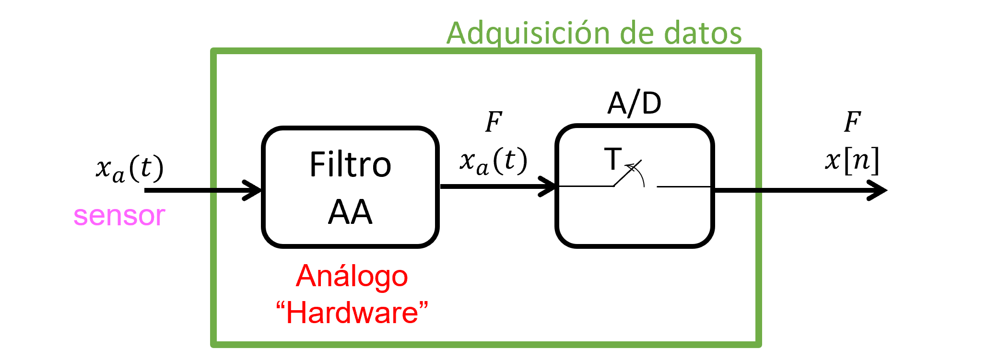
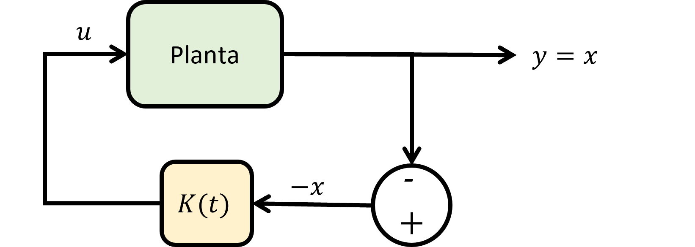
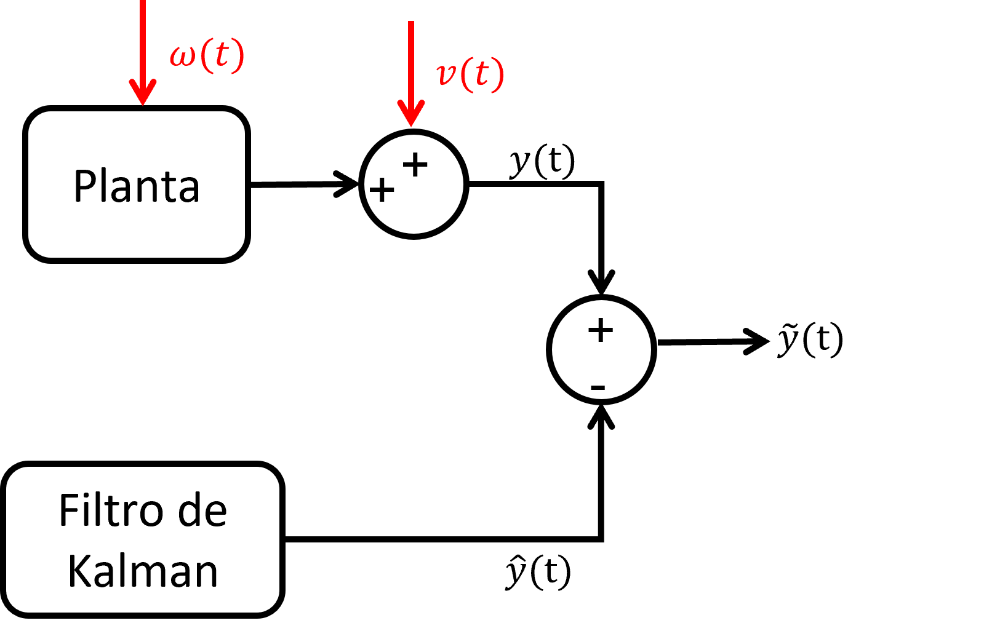
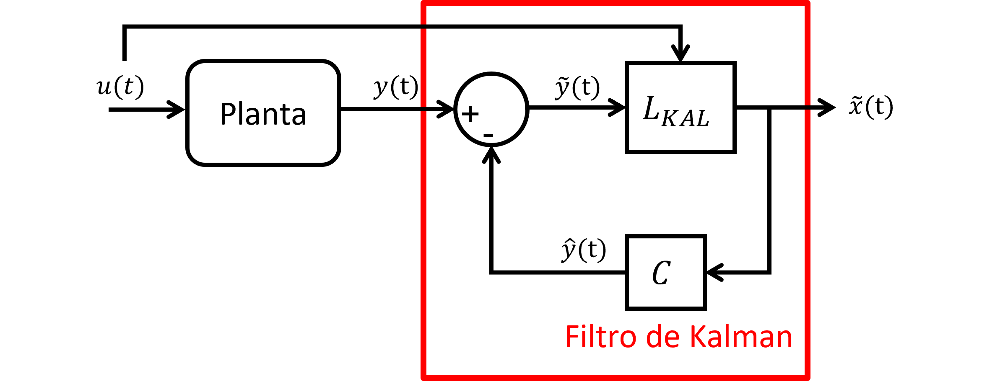

MIC411 Dinámica Estructural Avanzada
Apuntes de Clases
Gastón Fermandois Cornejo, Ph.D, Ing.
Departamento de Obras Civiles
Universidad Técnica Federico Santa María
Valparaíso, Chile
gaston.fermandois@usm.cl

Versión 3.2.4 (2026-07-31)
MIC411 Dinámica Estructural Avanzada
Apuntes de Clases
Gastón Fermandois Cornejo, Ph.D, Ing.
Departamento de Obras Civiles
Universidad Técnica Federico Santa María
Valparaíso, Chile
gaston.fermandois@usm.cl
Versión 3.2.4 (2026-07-31)
Este es un curso avanzado sobre dinámica estructural, que incluye aplicaciones en el modelamiento de sistemas dinámicos sometidos a cargas estocásticas, sistemas de monitoreo y control estructural, problemas inversos o de identificación de sistemas, entre otros. Los conceptos y las técnicas cubiertas en este curso son fundamentales para realizar investigación aplicada y desarrollo tecnológico en el campo de la ingeniería estructural, con énfasis en el diseño de sistemas estructurales inteligentes (smart structures).
El apunte se divide en tres grandes partes. La primera parte se enfoca principalmente en establecer las bases de la teoría de sistemas dinámicos lineales contínuos y discretos en el tiempo, sujetos a cargas determinísticas o estocásticas. La segunda parte, se concentra en el desarrollo de aplicaciones avanzadas en dinámica estructural, principalmente lo relacionado con monitoreo y control estructural. Finalmente, la tercera parte esta dedicado a tópicos avanzados que avanzan muy rápidamente junto con el estado del arte en dinámica estructural. Temas como simulación híbrida y aprendizaje automático son sólo una selección de tópicos cubiertos en esta última parte.
Agradecimientos a María Elena Quiroz (M.S., Ing. USM), quien fue la segunda ayudante de docencia del curso IPO426 en el primer semestre de 2022. María Elena fue quien tomó mis apuntes tomados a mano en las primeras instancias del curso, y las transcribió en este documento. Además, fue ella la que preparó la totalidad de figuras e ilustraciones del primer borrador de este apunte de clases. También agradezco a Alexis Contreras (Ing. y estudiante magíster USM), el tercer ayudante de docencia del curso IPO426/MIC411 realizado el primer semestre de 2024. En particular, Alexis ayudó a revisar todo el contenido de estos apuntes, y también colaboró en la elaboración de nuevos capítulos, como por ejemplo el de sensores. Por último, agradecimientos especiales a Cristobal Gálmez (M.S., Ing. USM), el primer ayudante de docencia del curso IPO426 realizado el primer semestre de 2020.
Gastón Fermandois
5 de agosto de 2025
Valparaíso, Chile
Grandes cambios en Parte 1, se agregan capítulos de modelos lineales y análisis de sistemas lineales.
En Parte 2 se agrega un capítulo (placeholder) de modelos nolineales, para completar en un futuro.
Agrega capítulo de sistemas nolineales.
Agrega referencias bibliográficas.
Completa el Apendice B de Simulink.
Varias revisiones mayores de edición en todo el documento.
Varias revisiones mayores de edición en todo el documento.
Capítulo de procesamiento digital de señales pasa a la Parte 1 del apunte.
Sección de especificaciones transientes de sistemas lineales pasa al capítulo de Control Clásico.
Sección de observadores y principio de separación pasa al capítulo de Control Clásico.
Varias revisiones de edición.
Primer borrador del apunte de clases.
En ingeniería estructural, un sistema se refiere al conjunto de elementos estructurales interconectados que trabajan en conjunto para resistir cargas y garantizar la estabilidad y seguridad de una construcción. En particular, un sistema dinámico es una estructura cuya respuesta varía en el tiempo ante cargas cambiantes, como sismos, viento, impactos o transito.
Al estudiar sistemas dinámicos es fundamental distinguir entre el sistema físico y el modelo matemático. El sistema físico es la estructura real, con sus materiales, geometría y condiciones de carga, sujeta a imperfecciones y a interacciones complejas con el entorno. En cambio, el modelo matemático es una representación simplificada que traduce ese comportamiento en ecuaciones, permitiendo predecir su respuesta bajo distintas condiciones.
Estos modelos matemáticos se construyen a partir de principios fundamentales, es decir, de las leyes físicas que gobiernan la mecánica estructural. Entre ellas destacan la cinemática y compatibilidad geométrica, ecuaciones de balance (Newton, Lagrange, etc.), relaciones constitutivas de los materiales, y la geometería y condiciones de contorno e iniciales del sistema físico. A partir de estos principios, se generan modelos matemáticas que representan de forma coherente el comportamiento de la estructura, aunque siempre con ciertas simplificaciones necesarias para el análisis.
Los sistemas sistemas dinámicos pueden ser representados gráficamente por diagramas de bloques:

Principales razones para construir modelos matemáticos de sistemas dinámicos:
Análisis
Diseño
Control y monitoreo
Sistema Estático: respuesta solo depende de la excitación actual (independiente del tiempo).

Sistema Dinámico: respuesta actual depende de la excitación actual y de la “historia” de la respuesta.

Si la respuesta del sistema dinámico está basada en la excitación
actual y pasada, entonces el sistema se conoce como causal (todos los sistemas físicos).
Si la respuesta del sistema dinámico está basada en excitación actual, pasada y futura, entonces el sistema es anticausal (solo aplicable en sistemas teóricos offline, por ejemplo, en procesamiento digital de señales).
SISO: Single Input, Single Output.

\(u \in \mathbb{R}\): entrada escalar
\(y \in \mathbb{R}\): respuesta escalar
SIMO: Single Input, Multi Output.

\(u \in \mathbb{R}\): entrada escalar
\(y \in \mathbb{R}^m\): respuesta vectorial
MISO: Multi Input, Simple Output.

\(u \in \mathbb{R}^n\): entrada vectorial
\(y \in \mathbb{R}\): respuesta escalar
MIMO: Multi Input, Multi Output.

\(u \in \mathbb{R}^n\): entrada vectorial
\(y \in \mathbb{R}^m\): respuesta vectorial
Un sistema lineal es tal que cumple con el principio de superposición.
Aditividad: Si \(u_1 \rightarrow y_1\), \(u_2 \rightarrow y_2\), entonces: \(u = u_1 + u_2 \rightarrow y = y_1 + y_2\)
Homogeneidad/Proporcionalidad: Si \(u \rightarrow y\), entoncecs \({\alpha}u \rightarrow {\alpha}y\).
De no cumplir con las propiedades del sistema lineal, entonces el sistema es nolineal.
Ejemplo: resorte nolineal.

Se tiene que:
\[\begin{aligned} f_s &= ku^2 \\ p_1 = k u_1^2 &\rightarrow u_1 = \sqrt{\frac{p_1}{k}}\\ p_2 = k u_2^2 &\rightarrow u_2 = \sqrt{\frac{p_2}{k}}\\ \end{aligned}\]
La pregunta es, ¿Se cumple el principio de superposición?
\[\begin{aligned} p_1+p_2 &\xrightarrow{?} u_1+u_2 \end{aligned}\]
La respuesta es no, ya que:
\[\begin{aligned} p_1 + p_2 &= k(u_*)^2 \\ u_* &= \sqrt{\frac{p_1 +p_2}{k}} \neq \sqrt{\frac{p_1}{k}} + \sqrt{\frac{p_2}{k}} \end{aligned}\]
Sistema invariantes en el tiempo (time invariant) \(\longrightarrow\) parámetros del modelo son
constantes en el tiempo.
Ejemplo: Sistemas de 1GDL (Figura 1.1), con
masa, rigidez y amortiguamiento constante son LTI (linear time
invariant).

Sistema variante en el tiempo (time variant) \(\longrightarrow\) parámetros del modelo
varían en el tiempo.
Ejemplo: Puentes con masa movil (Figura 1.2), por
ejemplo por el transito de un vehículo pesado (la masa del sistema
varía). En este caso el sistema dinámico es LTV (linear time
variant).

Si el input del sistema es conocido (y el sistema no incorpora
incertidumbre), entonces el output será predecible \(\longrightarrow\) Determinístico
Ejemplo: Simular múltiples veces el mismo registro (input) sobre
el mismo edifico (sistema), se obtienen siempre las mismas respuestas
(output).
Si el input del sistema posee incertidumbre (y/o el sistema incorpora
incertidumbre), entonces el output también tiene incertidumbre y no es
predecible \(\longrightarrow\) Estocástico
Ejemplo: Simular peatones diferentes (input con incertidumbre en
masa del peatón, velocidad al caminar y frecuencia de pasos) sobre un
mismo puente (sistema), se obtendrán respuestas diferentes
(outputs)
Sistema Continuo: entrada y salida son función del tiempo.

Sistema Discreto: señales han sido discretizadas en el
tiempo.
Ejemplo: Interés de una cuenta bancaria. \[\begin{aligned}
y(k+1)=(1+r)y(k) \longrightarrow \text{Ecuación de diferencias
finitas}
\end{aligned}\]
\(y(k+1)\): balance cuenta año \(k+1\)
\(r\): interés compuesto anual
\(y(k)\): balance cuenta año \(k\)
Las señales de los sistemas físicos son continuas, pero que al momento de ser observadas por dispositivos digitales, estas señales se discretizan en función del tiempo.

LTI: Linear, Time-Invariant.

Los sistemas LTI, son aquellos cuyas propiedades y parámetros no varían en el tiempo, es decir, que los coeficientes de las ecuaciones diferenciales de los modelos matemáticos de los sistemas dinámicos son constantes en el tiempo \(a_i=cte\). \[\begin{aligned} \frac{d^ny}{dt^n}+a_{n-1}\frac{d^{n-1}y}{dt^{n-1}}+...+a_2\frac{d^2y}{dt^2}+a_1\frac{dy}{dt}+a_0y=u(t) \end{aligned}\]
\(u(t)\): excitación
\(y(t)\): respuesta
\(a_i\): coeficientes
Dada una excitación \(u(t)\), la respuesta se obtiene al resolver la ecuación diferencial: \[\begin{aligned} y(t)=y_H(t)+y_p(t) \end{aligned}\]
\(y_H(t)\) es la respuesta homogénea (para \(u(t)=0\), con condiciones iniciales)
\(y_p(t)\) es la respuesta particular (para \(u(t)\neq0\))
Existen diversas formas de modelar un sistema dinámico en el rango lineal.

Dominio \(\Omega\) tiene una frontera \(\partial \Omega = \Gamma_u \cup \Gamma_t\), donde \(\Gamma_u\) es la frontera con desplazamientos prescritos, y \(\Gamma_t\) es la frontera con tracciones prescritas.

Cinemática y compatibilidad
Ecuaciones de balance
Leyes constitutivas de los materiales
Geometría y propiedades estructurales
Condiciones de borde y condiciones iniciales
La ecuación de equilibrio en forma fuerte, que describe el equilibrio dinámico en un continuo elástico, donde:
\[\begin{aligned} \sigma_{ij,j} + b_i = \rho\frac{\partial^2 u_i}{\partial t^2}, & \qquad \forall \Omega\\ u_i = q_i, & \qquad \forall \Gamma_u\\ \sigma_{ij} n_j = t_i, & \qquad \forall \Gamma_t\\ u_i(x,0) = u_{0i}(x), & \qquad \forall \Omega\\ \frac{\partial u_i}{\partial t}(x,0) =\frac{\partial u_{0i}}{\partial t}(x), & \qquad \forall \Omega\\ \end{aligned}\]
donde: \(\sigma_{ij,j}\) es la divergencia del tensor de esfuerzos (\(\sigma_{ij}\)); \(b_i\) son las fuerzas volumétricas; \(\rho \frac{\partial^2 u_i}{\partial t^2}\) es el término inercial, con \(\rho\) la densidad y \(u_i\) el desplazamiento.
Lagrangiano: \(\mathcal{L} = T-V\)
Acción: \(S = \int_{t_1}^{t_2} \mathcal{L}dt\)
Principio de mínima acción:
\[\delta S = 0\]
Utilizando calculo variacional se obtiene la forma débil del problema de elastodinámica, utilizando notación directa (Hughes, 2000):
\[(w,\rho \ddot{u}) + a(w,u) = (w,b) + (w,t)_\Gamma\]
Rayleigh-Ritz
Modos asumidos
Métodos residuales (por ejemplo, Galerkin)
Forma matricial obtenida después de la etapa de semidiscretización espacial (tiempo contínuo). El sistema dinámico se escribe finalmente como un sistema de ecuaciones diferenciales ordinarias (ODEs).
\[M \ddot{u} + C \dot{u} + K u = F(t)\]
donde \(u = \{u_1,u_2, \ldots,u_n\}^T\) son los grados de libertad del sistema.
Considere la EDM de un sistema de 1GDL:
\[m \ddot{u} + c \dot{u} + k u = p(t)\]

Problema: Dada la EDM de un sistema estructural 1GDL,
determinar su función de transferencia \(H(s)\)
Notación:
\[\begin{aligned} U(s) &= \mathcal{L}\{u(t)\}~: \text{respuesta (dominio complejo)}\\ F(s) &= \mathcal{L}\{f(t)\} ~: \text{input (dominio complejo)} \end{aligned}\]
Asumiendo reposo: \(u(0)=\dot{u}(0)=0\)
\[\begin{aligned} m\ddot{u}+c\dot{u}+ku &= f(t) ~/\color{red}{\mathcal{L}\{\cdot\}}\\ m\mathcal{L}\{\ddot{u}\}+c\mathcal{L}\{\dot{u}\}+k\mathcal{L}\{u\} &= \mathcal{L}\{f\}\\ ms^2U(s)+csU(s)+kU(s) &= F(s)\\ (ms^2+cs+k)U(s) &= F(s) \end{aligned}\] \[\begin{aligned} \Longrightarrow H(s) = \frac{U(s)}{F(s)}&=\frac{1}{ms^2+cs+k} ~\text{: TF del sistema de 1GDL} \end{aligned}\]
Aparte: Dada la entrada \(F(s)\) y la TF \(H(s)\), la salida es \(U(s) = H(s)F(s)\)

Ahora considere la EDM de un sistema MGDL:
\[M \ddot{u}(t )+ C \dot{u}(t) + K u(t) = F(t)\]
Donde: \(u(t) \in \mathbb{R}^{n \times
1}\), es el vector de grados de libertad; \(M \in \mathbb{R}^{n \times n}\), \(C \in \mathbb{R}^{n \times n}\), y \(K \in \mathbb{R}^{n \times n}\) son las
matrices de masas, amortiguamiento y rigidez, respectivamente; \(F(t) \in \mathbb{R}^{n \times 1}\) es el
vector de fuerzas externas.
Notación:
\[\begin{aligned} \mathcal{L}\{u(t)\} &= U(s)\\ \mathcal{L}\{\dot{u}(t)\} &= s U(s) - u(0)\\ \mathcal{L}\{\ddot{u}(t)\} &= s^2 U(s) - s u(0) - \dot{u}(0)\\ \mathcal{L}\{f(t)\} &= F(s) \end{aligned}\]
Entonces, la función de transferencia (transfer function, TF) del sistema dinámico se obtiene aplicando la transformada de Laplace sobre la EDM, asumiendo condiciones iniciales de reposo (\(u(0)= 0 \wedge \dot{u}(0)=0\)):
\[\begin{aligned} M \ddot{u}(t) + C \dot{u}(t) + K u(t) &= F(t) ~/\mathcal{L}\{\cdot\}\\ %\Longrightarrow s^2 M U(s) + s C U(s) + K U(s) &= F(s)\\ \Longrightarrow \left[s^2M+sC+K \right]U(s)&= F(s) \\ \Longrightarrow U(s)&= \underbrace{\left[s^2M+sC+K \right]^{-1}}_{H(s)} F(s) \end{aligned}\]
\[\begin{aligned} {F}(s) &= \mathcal{L}\{{f}(t)\} ~: \text{input en dominio complejo (excitación)}\\ {U}(s) &= \mathcal{L}\{{u}(t)\}~: \text{output en dominio complejo (respuesta)}\\ {H}(s) &= \left[s^2M + s{C}+{K} \right]^{-1} ~:\text{TF para un sistema MGDL} \end{aligned}\]
Notar que para encontrar los polos se debe resolver las raíces polinomio: \[\begin{aligned} s^2{M}+s{C}+{K} = {0} ~/ \text{$\cdot{\phi}$ yasumiendo ${C}={0}$} \\ \Longrightarrow (s^2{M}+{K}){\phi} = {0} ~\text{: Problema de valores propios generalizado} \end{aligned}\]
La representación espacio-estado reduce la EDM a ecuaciones diferenciales ordinarias cuyas matrices contienen toda la información dinámica del sistema.
\[\begin{aligned} \text{EDM: }~{M}{\ddot{u}}+{C}{\dot{u}}+{K}{u}&={G}{p}(t) \end{aligned}\]
\[\begin{aligned} \left . \begin{array}{rr} {\dot{x}}={A_s}{x}+{B_s}{p}\\ {y}={C_s}{x}+{D_s}{p} \end{array} \right \} \Longrightarrow \begin{array} {|r|r|} \hline A & B \\ \hline C & D \\ \hline \end{array} \end{aligned}\]

Ecuación de estado
\[\begin{aligned} {\dot{x}}={A_s}{x}+{B_s}{p} \end{aligned}\]
Donde:
Vector de Estado: \({x}=\begin{bmatrix}{u} \\ {\dot{u}}\end{bmatrix} \Longrightarrow {\dot{x}}=\begin{bmatrix}{\dot{u}}\\ {\ddot{u}}\end{bmatrix}\)
Matriz de estado: \({A_s}=\begin{bmatrix}{0} & {I}\\ -{M}^{-1}{K} & -{M}^{-1}{C}\end{bmatrix}\)
Matriz de influencia de excitación: \({B_s}=\begin{bmatrix}{0}\\ {M}^{-1}{G}\end{bmatrix}\)
Ecuación de respuesta
\[\begin{aligned}
{y}={C_s}{x}+{D_s}{p}
\end{aligned}\]
Donde (este es un ejemplo):
Vector de respuesta: \({y}=\begin{bmatrix}{u} \\ {\dot{u}}\\ {\ddot{u}}\end{bmatrix}\)
\({C_s}=\begin{bmatrix}{I} & {0}\\ {0} & {I}\\ -{M}^{-1}{K} & -{M}^{-1}{C}\end{bmatrix}\)
“Feedthrough”: \({D_s}=\begin{bmatrix}{0}\\ {0}\\ {M}^{-1}{G}\end{bmatrix}\)
Asumiendo condiciones iniciales de reposo: \({x}(0) = {0} \longrightarrow
\text{Estados}\)
Entonces, aplicando la transformada de laplace a la ecuación de estado:
\[\begin{aligned}
\label{eq:ss2tf_1}
{\dot{x}}&={A_s}{x}+{B_s}{p} ~/\mathcal{L}\{\cdot\}\\
\Longrightarrow s{X}(s)&= {A_s}{X}(s)+{B_s}{P}(s)\\
\Longrightarrow (s{I}-{A_s}){X}(s)&={B_s}{P}(s)
\end{aligned}\] \[\begin{aligned}
\Longrightarrow {X}(s)&=(s{I}-{A_s})^{-1}{B_s}{P}(s)
\end{aligned}\]
Luego, aplicando la transformada de Laplace a la ecuación de respuesta:
\[\begin{aligned} {y}(t)={C_s}{x}+{D_s}{p} ~/\mathcal{L}\{\cdot\}\\ \end{aligned}\] \[\begin{aligned} \label{eq:ss2tf_2} \Longrightarrow {Y}(s)&={C_s}{X}(s)+{D_s}{P}(s) \end{aligned}\]
Reemplazando la ecuación [eq:ss2tf_1] en [eq:ss2tf_2]: \[\begin{aligned} {Y}(s)&={C_s}(s{I}-{A_s})^{-1}{B_s}{P}(s)+{D_s}{P}(s)\\ {Y}(s)&=[{C_s}(s{I}-{A_s})^{-1}{B_s}+{D_s}]{P}(s)\\ \Longrightarrow {H}(s)&={C_s}(s{I}-{A_s})^{-1}{B_s}+{D_s} \end{aligned}\]
Aparte: Asumiendo \({D_s}=0\): \[\begin{aligned} {H}(s)&={C_s}(s{I}-{A_s})^{-1}{B_s}\\ {H}(s)&=\frac{1}{\det(s{I}-{A_s})}{C_s}\text{ adj}(s{I}-{A_s}){B_s} \\ \Longrightarrow\det(s{I}-{A_s})&=0 ~\text{: Problema de valores propios de }{A_s} \end{aligned}\]
Por lo tanto, los Polos se pueden obtener por las raíces del polinomio del denominador de \({H}(s)\), o, por los valores propios de \({A_s}\).
En desarrollo.
Desde la TF del sistema: \[\begin{aligned} H(s) &= \frac{1}{ms^2+cs+k} ~\color{red}{\frac{1/m}{1/m}}\\ &= \frac{1/m}{s^2+2\xi\omega_ns+\omega_n^2} \end{aligned}\]
\(\xi\): razón de amortiguamiento
\(\omega_n\): frecuencia natural
¿Cómo se obtienen los polos? \(\Longrightarrow\) Calcular las raíces del polinomio del denominador:
\[\begin{aligned} s^2+2\xi\omega_ns+\omega_n^2=0 \qquad\text{(Ecuaci\'on caracter\'istica)} \end{aligned}\]
\[\begin{aligned} s_{1,2}=-\xi\omega_n\pm j \underbrace{\omega_n\sqrt{1-\xi^2}}_{\omega_d} \qquad \text{(Polos del sistema de 1GDL)} % s_{1,2}=-\xi\omega_n\pm\omega_dj ~\text{: Polos del sistema de 1GDL} \end{aligned}\]
¿Es estable? \(\Longrightarrow\) Depende del valor de \(\xi\):
\(\xi>0, ~ \text{Re}(s_{1,2})<0\Longrightarrow\) Estable asintóticamente
\(\xi<0, ~ \text{Re}(s_{1,2})>0\Longrightarrow\) Inestable
\(\xi=0, ~ \text{Re}(s_{1,2})=0\Longrightarrow\) “Estable”
Además, el sistema oscila sí y solo si \(\omega_d>0\Longrightarrow
\omega_n>0\): propiedad del sistema dinámico.
Si \(\xi>0, ~ \omega_n>0\):

Notar que el FRF se puede obtener al reemplazar \(s=j\omega\) en la TF: \[\begin{aligned} H(\omega)=H(s)\bigg|_{s=j\omega} \end{aligned}\]
Ejemplo: Sistema de 1GDL \[\begin{aligned} \text{EOM: }~m\ddot{u}+c\dot{u}+ku=f(t) \end{aligned}\] \[\begin{aligned} \Longrightarrow \text{TF: }&~ H(s)=\frac{1}{ms^2+cs+k}=\frac{1/m}{s^2+(c/m)s+k/m}\\ \Longrightarrow \text{FRF: }&~ H(\omega)=H(s)\bigg|_{s=j\omega}=\frac{1}{(k=m\omega^2)+j\omega c} \end{aligned}\] \[\begin{aligned} H(\omega)=\frac{1}{(j\omega-\lambda_1)(j\omega-\lambda_1^*)} \end{aligned}\]
\[\begin{aligned} \lambda_{1,2}=-\xi\omega_n\pm\omega_n\sqrt{1-\xi^2}~\text{: polos del sistema} \end{aligned}\]
donde:
\[\lambda_{2} = \lambda_{1}^{*}\]
\((\cdot)^{*}\): conjugado del número complejo
\[\begin{align} A v = \lambda v \\ (\lambda I - A)v=0\\ \det(\lambda I-A) = 0 \\ \Delta_A(\lambda) = \lambda^n + \alpha_{n-1} \lambda^{n-1} + \alpha_{n-2} \lambda^{n-2} + \cdots + \alpha_{1} \lambda + \alpha_{0} = 0 \end{align}\]
\(\lambda\) y \(v\) son los valores y vectores propios de \(A\).
La función Delta de Dirac se denota como:
\[\begin{aligned} \delta(t)= \left\{ \begin{array}{ll} +\infty & t=0 \\ 0 & t\neq 0 \\ \end{array} \right. \end{aligned}\]

Propiedades: \[\begin{aligned} \int_{-\infty}^{+\infty}\delta(t)dt=1 \quad &\text{Impulso unitario}\\ \int_{-\infty}^{+\infty}f(t)\delta(t-T)dt=f(T) \quad &\text{Sampleo} \end{aligned}\]

\[\begin{aligned} \Rightarrow f(T) = f(t)\ast\delta(t-T) \end{aligned}\]
Propiedad: Sea \(f(t)\) una función continua, entonces, se puede expresar como una integral de la convolución con la función \(\delta(t)\). \[\begin{aligned} f(t)=\int_{-\infty}^{+\infty}f(\tau)\delta(t-\tau)d\tau \end{aligned}\]
Esta superposición nos permite componer la función \(f(t)\) como una suma infinita de impulsos unitarios con la función \(\delta(t)\).

¿Cuál es la respuesta de un sistema cuando se le somete a un impulso unitario?

Para sistemas estructurales (\(\xi<1\)), la ecuación de movimiento sometida a un impulso unitario: \[\begin{aligned} m\ddot{x}+c\dot{x}+kx=\delta(t)\\ x(0)=0 \quad \dot{x}(0)=0 \end{aligned}\]
La solución a esta ecuación es la Función de Respuesta Impulso (FRI) cuando el impulso se aplica en el tiempo \(\tau = 0\): \[\begin{aligned} x(t)=h(t)=\frac{1}{m\omega_d}e^{-\xi\omega_nt}\sin{(\omega_dt)}, \quad t\geq0 \end{aligned}\]
donde \(\omega_n =
\sqrt{\frac{k}{m}}\) es la frecuencia natural y \(\omega_d = \omega_n \sqrt{1-\xi^2}\) es la
frecuencia natural amortiguada.
Ahora, considere una excitación \(u(t)\) continua. Se puede representar como
un tren de impulsos:

Notar que cada impulso genera una respuesta en el sistema \(\delta(t-\tau)\longrightarrow h(t-\tau)\).
 /
/
La respuesta del sistema cuando se somete a este tren de impulsos se obtiene por superposición: \[\begin{aligned} y(t)=\int_0^tu(\tau)h(t-\tau)d\tau \quad \text{``Integral de Duhamel''}\Rightarrow\text{Convolución} \end{aligned}\]
En resumen: La respuesta analítica de un sistema LTI es la convolución entre el FRI \(h(t)\) y la excitación \(u(t)\).
\[\begin{aligned} \Rightarrow y(t)=u(t)\ast h(t) \end{aligned}\]
Definición: La transformada de Laplace de \(f(t)\) es igual a: \[\begin{aligned} \mathcal{L}: ~ F(s)=\int_{-\infty}^{+\infty}f(t)e^{-\xi t}dt \quad \text{Transformada Bilateral (``two-sided'')} \end{aligned}\]
donde \(s\in\mathbb{C}\), \(s=\sigma+j\omega\), \(j^2=-1\), \(j\) es la unidad imaginaria.
Definición: La transformada inversa de Laplace es igual a: \[\begin{aligned}
\mathcal{L}^{-1}: ~ f(t)=\frac{1}{2\pi
j}\int_{+\sigma-j\infty}^{+\sigma+j\infty}F(s)e^{st}ds
\end{aligned}\]
La razón por la que se opta por trabajar con la variable de Laplace \(s\) en lugar de utilizar el tiempo \(t\) es la simplificación para obtener la respuesta. Al emplear la variable de Laplace, la respuesta se obtiene con multiplicaciones en vez de convoluciones.

Al obtener la respuesta ya sea por el dominio del tiempo o pasando por el dominio complejo, se obtiene exactamente el mismo resultado. \[\begin{aligned} y(t)=h(t)\ast u(t) \xRightarrow[]{\mathcal{L}} Y(s)=H(s)\cdot U(s) \end{aligned}\] donde: \[\begin{aligned} H(s)=\mathcal{L}\{h(t)\}=\int_0^{\infty}h(t)e^{-\xi t}dt \\ Y(s)=\mathcal{L}\{y(t)\}=\int_0^{\infty}y(t)e^{-\xi t}dt \\ U(s)=\mathcal{L}\{u(t)\}=\int_0^{\infty}u(t)e^{-\xi t}dt \end{aligned}\]
\(h(t)\): Función de Respuesta Impulso (FRI)
\(H(s)\): Función de transferencia (TF)
Propiedades:
Superposición: \[\begin{aligned} \mathcal{L}\{\alpha f_1(t)+\beta f_1(t)\}=\alpha\mathcal{L}\{f_1(t)\}+\beta\mathcal{L}\{f_2(t)\} \end{aligned}\]
Retraso (“time-delay”): \[\begin{aligned} f_1(t)&\xrightarrow[]{\mathcal{L}}F_1(s)\\ f_1(t-\tau)&\xrightarrow[]{\mathcal{L}}e^{-\xi t}F_1(s) \end{aligned}\]
“Time-scaling”: \[\begin{aligned} f(\alpha t)&\xrightarrow[]{\mathcal{L}}\frac{1}{\alpha}F(s/\alpha) \end{aligned}\]
Diferenciación: \[\begin{aligned} f(t)&\xrightarrow[]{\mathcal{L}}F(s)\\ \frac{df(t)}{dt}&\xrightarrow[]{\mathcal{L}}s^2F(s)-sf(0^+)\\ \frac{d^2f(t)}{dt^2}&\xrightarrow[]{\mathcal{L}}s^2F(s)-sf(0^+)-\dot{f}(0^+) \end{aligned}\]
Integración: \[\begin{aligned} f(t)&\xrightarrow[]{\mathcal{L}}F(s)\\ g(t)&\xrightarrow[]{\mathcal{L}}G(s)\\ f(t)\ast g(t)&\xrightarrow[]{\mathcal{L}}F(s)G(s) \end{aligned}\]
Aparte: \[\begin{aligned} H(j\omega)=\mathcal{F}\{h(t)\} \end{aligned}\]
\(H(j\omega)\): Función de Respuesta en Frecuencia (FRF)
\[\begin{aligned} H(j\omega) \xleftrightarrow{s=j\omega} H(s) \end{aligned}\]
Trabajar con LT permite obtener la respuesta simplemente multiplicando la señal de entrada con la función de transferencia en vez de realizar la convolución.

Definición: \(H(s)\in \mathbb{C}\) (función de transferencia) \[\begin{aligned} H(s)=\frac{\prod_{i=1}^m(s-z_i)}{\prod_{j=1}^n(s-p_j)} \end{aligned}\]
\(z_i\): polos
\(p_j\): ceros
Definición: \(p_j \in \mathbb{C}\) (polos) son las raíces de la ecuación característica del sistema dinámico: \[\begin{aligned} \prod_{j=1}^n(s-p_j)=0 \end{aligned}\]
Definición: \(z_i \in \mathbb{C}\) (ceros) son las raíces del polinomio del numerador: \[\begin{aligned} \prod_{i=1}^m(s-z_i)=0 \end{aligned}\]
Importante: La función de transferencia recopila toda la información del sistema dinámico en los coeficientes de los polinomios del numerador y denominador o equivalentemente con los polos y ceros.
Para visualizar las propiedades dinámicas del sistema, vamos a trabajar en el plano complejo.

Los ceros \(z_i\) y polos \(p_j\) son puntos sobre el plano complejo

\(|H(s)|\) representa una “superficie” sobre el plano complejo

Aparte: Recordar que \(H(s)\)
corresponde a: \(H(s)=\mathcal{L}\{h(t)\}\) (\(h(t)\) es FRI), por ende, \(h(t)=\mathcal{L}^{-1}\{H(s)\}\). Por lo
tanto, los polos nos dan información del FRI.
Ejemplo: Si tenemos la siguiente función de transferencia \(H(s)=\frac{1}{s-a}\), se puede obtener la
FRI aplicando la inversa de la transformada de Laplace \(h(t)=\mathcal{L}^{-1}\{H(s)\}=e^{at}\)
Casos:
\(a>0, ~a\in\mathbb{R}\Longrightarrow h(t)=e^{-|a|t}\)

\(a=0, ~a\in\mathbb{R}\Longrightarrow h(t)=1\)

\(a<0, ~a\in\mathbb{R}\Longrightarrow h(t)=e^{|a|t}\)

\(H(s)=\frac{1}{s^2+a^2}\Longrightarrow
s_{1,2}=\pm \beta j \in \mathbb{C}\)
\(h(t)=\mathcal{L}^{-1}\{H(s)\}=\sin{(\beta
t)}\)

\(a_{1,2}=\alpha\pm\beta j \in
\mathbb{C}\) (polos conjugados)
\[\begin{aligned}
H(s) &= \frac{1}{(s-\alpha)^2+\beta^2} \longrightarrow
\text{Raíces del denominador}\Rightarrow a_{1,2}\\
h(t) &= \mathcal{L}^{-1}\{H(s)\} = e^{+\alpha t}\sin{(\beta
t)}
\end{aligned}\]
\(\alpha<0\)
\(h(t) = e^{-|\alpha| t}\sin{(\beta
t)}\)

\(\alpha>0\)
\(h(t) = e^{+|\alpha| t}\sin{(\beta
t)}\)

\(\alpha=0\)
\(h(t)=\sin{(\beta t)}\Longrightarrow\)
volvemos al caso (iv).
Volviendo al plano complejo, podemos identificar el tipo de respuesta FRI del sistema solo con información de la posición de los polos:


Un sistema es estable en el sentido BIBO, si y sólo si el sistema posee todos sus polos a la izquierda del plano complejo. Dicho de otra forma: \(p_i=\alpha_i\pm\beta_i j\)
El sistema es estable BIBO ssi \(Re(p_i)=\alpha_i<0\)
Si el sistema posee al menos un polo cuyo \(Re(p_i)=\alpha_i>0\), entonces el sistema es inestable
Si queremos transicionar de un estado \(x(t_0)\) a \(x(t_1)\), la respuesta no es instantánea y existe una respuesta transiente que hay que limitar.

Definición:
Tiempo de subida (“rise time”, \(t_r\)): tiempo que toma subir. Ej.: ir desde 10% hasta 90% de respuesta, o de 0% a 100%.
Sobreimpulso (“overshoot”, \(M_p\)): exceso de respuesta transitoria sobre la referencia deseada.
Tiempo de asentamiento (“settling time”, \(t_s\)): tiempo que toma el sistema en decaer hasta 1%
En matlab se puede trabajar con sistemas dinámicos utilizando
variables tipo sistema. Estas variables se puede crear si se
cuenta con la información de alguna de las representaciones vistas
anteriormente.
Para State-Space se requieren las matrices \({A}\), \({B}\), \({C}\), \({D}
\Longrightarrow\) matrices de tipo “double”
Para construir un sistema desde representación espacio-estado, se utiliza el siguiente comando:
>> sys = ss(As, Bs, Cs, Ds); % Variable tipo sistema Para representar utilizando la función de transferencia se requiere conocer los coeficientes de los polinomios del numerador y denominador de la función de transferencia:
\[\begin{aligned} H(s)=\frac{b_ms^m+b_{m-1}s^{m-1}+...+b_1s+b_0}{s^n+a_{n-1}s^{n-1}+...+a_1s+a_0} \end{aligned}\]
Se utiliza el siguiente comando para construir la variable tipo sistema:
>> sys = tf(num,den); % Variable tipo sistema Donde: \[\begin{aligned} \text{num} = [b_m, b_{m-1}, ... , b_1, b_0]\\ \text{den} = [1, a_{n-1}, ... , a_1, a_0] \end{aligned}\]
Ejemplo de coeficientes para sistema 1GDL: \[\begin{aligned} \text{num} = [1/m]\\ \text{den} = [1, c/m, k/m] \end{aligned}\]
También, se pueden generar conociendo los polos, ceros y la ganancia del sistema: \[\begin{aligned} \text{TF: }~H(s)= k\frac{\prod_{i=1}^m(s-z_i)}{\prod_{j=1}^n(s-p_j)} \end{aligned}\] \[\begin{aligned} \text{zeros} &= [z_m, z_{m-1}, ..., z_2, z_1]\\ \text{poles} &= [p_n, p_{n-1},..., p_2, p_1]\\ \text{gain} &= k \end{aligned}\]
Ocupando los polos, ceros y ganancia, también se puede generar una variable tipo sistema:
>> sys = zpk(ceros, polos, gain); Matlab: Control System Toolbox
El toolbox Control System de matlab permite también extraer
información y simular las variables de tipo sistema.
Valores y vectores propios del sistema:
>> eig(sys)
>> eig(As)Polos del sistema, frecuencias naturales y razones de amortiguamiento:
>> damp(sys)
>> damp(As)Posición de “ceros” y “polos” en el plano complejo:
>> pzmap(sys)Gráfico magnitud y fase vs frecuencia del sistema
>> bode(sys)
>> bodeplot(sys)Ganancia del sistema
>> dcgain(sys) %% DC: direct current (caso estático)Análisis: respuesta a impulso y a escalón
>> impulse(sys)
>> step(sys)Sea un sistema LTI autónomo, es decir, sin entrada \(u(t) = 0\).
\[\dot{x}(t) = {A} {x}(t)\]
donde \(x(t) \in \mathbb{R}^n\) y \(A \in \mathbb{R}^{n \times n}\). Su solución \({x}(t)\) para una condición inicial \(x(0) = x_0\) se puede obtener utilizando transformación de Laplace:
\[\begin{align} &\phantom{\Longrightarrow} {\dot{x}}(t) = {A} {x}(t) \qquad /\mathcal{L}\{\cdot\}\\ &\Longrightarrow s {X}(s)- {x_0} = {A} {X}(s)\\ &\Longrightarrow (s {I}- {A}) {X}(s) = {x_0}\\ &\Longrightarrow {X}(s) = (s {I}- {A})^{-1} {x_0} \qquad /\mathcal{L}^{-1}\{\cdot\}\\ &\Longrightarrow {x}(t) = e^{ {A}t} {x_0} \end{align}\]
Definiendo \({\phi}(t) = e^{ {A}t}\) como la matriz de transición de estados, la respuesta de los estados del sistema queda determinada por la siguiente expresión:
\[\begin{aligned} {x}(t) = {\phi}(t){x_0} \end{aligned}\]
Notar que \({\phi}(t)\) es una matriz que varía en función del tiempo.
Aparte: Para entender qué significa \(e^{ {A}t}\) hay que recordar la Expansión
de Taylor de una exponencial.
Definición: Sea \(f(t)\) una
función suave y continua, su Expansión de Taylor en torno a
\(t_0 = \alpha\) es la siguiente:
\[\begin{aligned} f(t) = f(\alpha)+\frac{\dot{f}(\alpha)}{1!}(t-\alpha)+\frac{\ddot{f}(\alpha)}{2!}(t-\alpha)^2+... = \sum_{n=0}^{\infty}{\frac{(t - \alpha)^n}{n!}\frac{d^n}{dt^n}f(t = \alpha)} \end{aligned}\]
aplicando la expansión en una función exponencial en en torno a \(\alpha = 0\):
\[\begin{aligned} e^{at} = 1+at+\frac{1}{2!}a^2t^2+\frac{1}{3!}a^3t^3+... = \sum_{i=0}^{\infty} \frac{a^i t^i}{i!} \end{aligned}\]
La Expansión de Taylor de una exponencial también converge en torno a \(\alpha = 0\) cuando se utiliza una matriz \({A}\) cuadrada. Por lo tanto, \({\phi}(t) = e^{{A}t}\) se puede calcular utilizando la siguiente serie:
\[\begin{align} {\phi}(t) = e^{ {A}t} =& {I}+ {A}t+\frac{1}{2!} {A}^2t^2+\frac{1}{3!} {A}^3t^3+... \\ =& \sum_{i=0}^{\infty} \frac{A^i t^i}{i!} \\ =& \sum_{i=0}^{\infty} \beta_i (t)A^i \end{align}\]
Notar que la expansión de Taylor de \({\phi}(t) = e^{{A}t}\) es una serie infinita. La serie finita se obtiene con el Teorema de Cayley-Hamilton que se explica más adelante.
Nota: \({\phi}(t)\) satisface la ecuación de estado:
\[\begin{align} \Longrightarrow {x}(t) &= {\phi}(t){x_0} = \left[{I}+{A}t+\frac{1}{2!}{A}^2t^2+...\right]{x_0}\\ \Longrightarrow {\dot{x}}(t) &= \left[{A}+\frac{2}{2!}{A}^2t+\frac{3}{3!}{A}^3t^2+...\right]{x_0}\\ \Longrightarrow {\dot{x}}(t) &= {A}\left[{I}+{A}t+\frac{1}{2!}{A}^2t^2+...\right]{x_0}\\ \Longrightarrow {\dot{x}}(t) &= {A}{\phi}(t){x_0}={A}{x}(t) \quad \text{(Ecuación de Estado)} \end{align}\]
Si tenemos un sistema LTI con entrada exógena, es decir, con entrada \(u(t)\), la respuesta se encuentra de forma análoga:
\[\begin{align} &\phantom{\Longrightarrow} {\dot{x}}(t) = {A} {x}(t)+ {B} {u}(t) \qquad /\mathcal{L}\{\cdot\}\\ &\Longrightarrow s {X}(s)- {x_0} = {A} {X}(s)+ {B} {U}(s)\\ &\Longrightarrow (s {I}- {A}) {X}(s) = {x_0}+ {B} {U}(s)\\ &\Longrightarrow {X}(s) = (s {I}- {A})^{-1} {x_0} + \left[(s {I}- {A})^{-1} {B} \right]{U}(s) \qquad /\mathcal{L}^{-1}\{\cdot\}\\ &\Longrightarrow {x}(t) = {\phi}(t) {x_0}+\left[ {\phi}(t) {B} \right] \ast u(t)\\ &\Longrightarrow {x}(t) = {\phi}(t) {x_0}+\int_0^t {\phi}(t-\tau) {B} {u}(\tau)d\tau \end{align}\]
Notar que:
\[\begin{aligned} {\phi}(t-\tau)&=e^{{A}(t-\tau)}\\ &=e^{{A}t} e^{-{A}\tau}\\ &={\phi}(t){\phi}(-\tau) \end{aligned}\]
Aparte: Del problema de valores propios de \(A \in \mathbb{R}^{n \times n}\):
\[{A}{v}=\lambda{v}\]
donde \(\lambda \in \mathbb{C}\) y \(v \in \mathbb{C}^n\) son el vector y valor propio asociado.
\[\begin{align} \Longrightarrow {\phi}(t){v} &= \left[{I}+{A}t+\frac{1}{2!}{A}^2t^2+\frac{1}{3!}{A}^3t^3+...\right]{v}\\ &= {v}+{A}{v}t+\frac{1}{2!}{A}^2{v}t^2+\frac{1}{3!}{A}^3vt^2... \\ &= {v}+\lambda{v}t+\frac{1}{2!}\lambda^2{v}t^2 + \frac{1}{3!}\lambda^3vt^3 +... \\ &= \left[ 1+\lambda t+\frac{\lambda^2}{2!}+\frac{\lambda^3}{3!}t^3 + ...\right]{v} \end{align}\]
Si \({x_0}={v}\), entonces \({x}(t)={\phi}(t){v}\)
Aparte: \(\phi(t)\) es una serie
infinita que converge:
\[\begin{aligned} \lim_{t \to \infty} \phi(t)<\infty \end{aligned}\]
ssi \(\text{Re}(\lambda)<0\).
Entonces el sistema LTI es estable.
Definición: Una matriz \({A}\)
se dice que es Hurwitz ssi los valores propios de \({A}\) tienen una parte real estrictamente
negativa.
Teorema 4.1 (Teorema de Cayley-Hamilton). Sea una matriz \(A\in\mathbb{R}^{n\times n}\), cuya ecuación característica está dada por el siguiente polinomio de orden \(n\):
\[\Delta_A(s)=\det(s{I}-{A})=s^n+\alpha_{n-1}s^{n-1}+...+\alpha_1s+\alpha_0=0\]
donde \(\alpha_i\in\mathbb{R}\), \(i\in [0,n-1]\), son los coeficientes del polinomio característico de \({A}\). Entonces, el teorema establece que la matriz \({A}\) también satisface la ecuación característica:
\[\Delta_A(A) = {A}^n+\alpha_{n-1}{A}^{n-1}+...+\alpha_1{A}+\alpha_0{I}={0}\]
Del teorema, podemos despejar \({A}^n\): \[\begin{aligned} {A}^n &= -\left[\alpha_{n-1}{A}^{n-1}+...+\alpha_1{A}+\alpha_0{I} \right] \end{aligned}\]
El poder de una matriz se escribe como una serie polinomial de orden
igual al exponente del poder.
\(\Longrightarrow\) Este resultado es útil para evaluar la matriz de transición \(\phi(t)\) \[\begin{aligned} {\phi(t)}=e^{{A}t}=\sum_{i=0}^\infty \beta_i(t){A}^i \overset{\text{(C-H)}}{=} \sum_{i=0}^{n-1}\gamma_i(t){A}^i \end{aligned}\]
Nota: Este resultado es útil para evaluar \(\phi(t)\) como una serie finita en términos de \(A^i\).
El retrato de fase (phase portrait) es una representación
gráfica de las trayectorias de un sistema dinámico en el tiempo, es
decir, se puede observar como varían los estados en función del tiempo y
entender mejor el comportamiento del sistema. También permite observar
gráficamente la estabilidad.
Ejemplo: Considere el siguiente sistema dinámico LTI Autónomo de un
grado de libertad.

\[\begin{aligned} \Longrightarrow {\dot{x}}(t) ={A}{x}(t) \end{aligned}\]
donde \({x}(t)=\begin{bmatrix} y(t)\\ \dot{y}(t) \end{bmatrix}\), con condiciones iniciales \(y_0\), \(\dot{y}_0\), se puede generar el siguiente diagrama de fase en el que se observa cómo varían los estados en el tiempo.

Notar que el retrato de fase puede ser para cualquier vector de estados y no únicamente para dos estados como en este ejemplo.

Sea el sistema dinámico LTI en representación espacio-estado: \[{\dot{x}}={A}{x}+{B}{u}\]
encontraremos una expresión para encontrar el estado en equilibrio
\({x_e}\).
Definición: El equilibrio del sistema está dado por la condición
de que \({x}\) no cambia en el tiempo:
\[\begin{aligned}
{\dot{x}} = {0}
\end{aligned}\] Entonces, despejando el estado de equilibrio
\({x_e}\) desde el sistema LTI: \[\begin{aligned}
&\Longrightarrow {0}={A}{x_e}+{B}{u_e} \\
&\Longrightarrow {x_e}=-{A}^{-1}{B}{u_e} \Longrightarrow \text{
Estados de Equilibrio Estático}
\end{aligned}\]
donde \({x_e}\) es el vector de
estado en equilibrio y \({u_e}\) es el
vector de entrada en el equilibrio, ambos constantes.
Notas
Notar que si: \({u_e}={0}\Longrightarrow{x_e}={0}\).
Los sistemas lineales presentan sólo un estado de equilibrio \({x_e}\).
No confundir: los estados de equilibrio \({x_e}\) no son necesariamente estables.
Sea un sistema dinámico LTI y autónomo: \(\dot{x}=Ax\), \(x(0) = x_0\) y \(x_e\) un punto de equilibrio del sistema.
Vamos a definir la estabilidad respecto a un punto de equilibrio.
Definición: \(x_e\) es estable en el sentido de Lyapunov si para cualquier \(\varepsilon >0\) existe un \(\delta >0\) tal que: \[||x_0-x_e||<\delta\Longrightarrow ||x(t)-x_e||<\varepsilon, \quad \forall t>0\]

* Mínima restricción que podemos imponer para satisfacer estabilidad.
\(x_e\) es asintóticamente estable si existe \(\delta>0\) tal que:
\(||x_0-x_e||<\delta\)
\(x_e\) es estable en el sentido de Lyapunov
\(\lim_{t\to\infty}x(t)=x_e\)

\(x_e\) es estable asintótica global ssi es asintóticamente estable para \(\delta \to \infty\).
| Estable | |||
| Asint. Est. | |||
| Goblal Asint. Est. | ??? |
Sea el sistema LTI autónomo \(\dot{x}(t)=Ax(t)\), cuya solución es \(x(t)=\phi(t)x_0\) y \(x_e\) un estado de equilibrio. Se requiere
analizar la estabilidad en el sentido de Lyapunov. Por lo cual hay que
analizar las normas \(||x(t) - x_e||\)
y \(||x_0 - x_e||\)
Suponiendo que \(\phi(t)\) es finita, es decir, \(||\phi(t)||=||e^{At}||\leq\beta<\infty\). Se tiene que la siguiente diferencia de vectores de estados: \[\begin{aligned} x(t)-x_e &= \phi(t)x_0-x_e\\ &= \phi(t)x_0-\phi(t)x_e\\ &= \phi(t)[x_0-x_e] \end{aligned}\]
Para este sistema, notar que si \(x_0 =
x_e\), entonces \(x(t)=x_e\), es
decir, si el estado inicial es un estado de equilibrio (por ejemplo, el
reposo) y si no existen exitaciones, entonces los estado \(x(t)\) se mantendrán constantes e igual a
al estado de equilibrio \(x_e\), para
\(\phi(t)x_e=x_e\).
Entonces, extrayendo la norma de la expresión anterior: \[\begin{aligned}
||x(t)-x_e||=||\phi(t)[x_0-x_e]||\leq||\phi(t)||\cdot||x_0-x_e||
\end{aligned}\] Luego, si \(||x_0 -
x_e||<\delta\) \[\begin{aligned}
&\Longrightarrow ||x(t)-x_e||\leq ||\phi(t)|| \delta
\end{aligned}\] Si definimos \(||\phi(t)||\delta = \varepsilon\): \[\begin{aligned}
&\Longrightarrow ||x(t) - x_e|| \leq \varepsilon
\end{aligned}\]
Por lo tanto, si \(\phi(t)\) es finito, implica que \(x_e\) es estable en el sentido de Lyapunov. \(\phi(t)\) es finito si y solo si \(A\) es Hurwitz: \[\begin{aligned} \text{Re}\left(\text{eig}(A)\right)<0\Longrightarrow \text{Estabilidad} \end{aligned}\]
Definición: Sea una función \(V(x)\), \(\mathbb{R}^n\to \mathbb{R}\), tal que:
\(V(x_e)=0\)
\(V(x)>0\), \(\forall x\neq x_e\) (\(V\) es una función definida positiva)
\(V\) y su primera derivada son finitas
Entonces, \(V(x)\) es una función
candidata de Lyapunov.
Teorema 4.2. Si \(V(x)\) s una función candidata de Lyapunov para \(x_e\) en una región \(\Omega\) vecina a \(x_e\):
\(x_e\) es estable en el sentido de Lyapunov si: \[\frac{dV(x)}{dt}\leq 0, ~\forall x\in \Omega\]
\(x_e\) es asintóticamente estable si: \[\frac{dV(x)}{dt}< 0, ~\forall x\in \Omega\]
\(x_e\) es global asintóticamente estable si: \[\frac{dV(x)}{dt}< 0, ~\forall x\in \Omega\] donde \(\Omega \in \mathbb{R}^n\) y \(V(x)\) no tiene límite radial.
Ilustración: Sean \(x=\begin{bmatrix}x_1\\ x_2\end{bmatrix}\), \(x\in \mathbb{R}^2\), \(x_e=0\) y \(V(x)=x^T x\) una función candidata de Lyapunov.

Notar que: \[\begin{aligned} \frac{dV(x)}{dt} < 0 \end{aligned}\]
Ocupando \(V=V(x(t))\). Entonces: \[\begin{aligned} \frac{dV}{dt} &= \frac{\partial V}{\partial x}\cdot \frac{\partial x}{\partial t} \quad \text{Regla de la cadena}\\ &= \sum_{i=1}^n \frac{\partial V}{\partial x_i}\cdot\frac{\partial x_i}{\partial t}\\ &= \begin{bmatrix}\frac{\partial V}{\partial x_1} &...& \frac{\partial V}{\partial x_n}\end{bmatrix}\begin{bmatrix}\dot{x}_1\\ \vdots \\ \dot{x}_n\end{bmatrix}\\ &= \nabla V\cdot \dot{x} \end{aligned}\]
\[\begin{aligned} \frac{dV}{dt}=\nabla V\cdot \dot{x}<0, ~\forall t \end{aligned}\]
Dibujemos una línea de contorno de \(V(x)\):

\[\begin{aligned} \nabla V\cdot f(x)<0 \Longrightarrow \text{Entonces el sistema se acerca a } x_e \end{aligned}\]
\(\Longrightarrow x_e\) es un punto
de atracción o sumidero.
Para el sistema LTI autónomo \(\dot{x}=Ax\), y sea \(V(x)=x^T Px\), donde \(P\) es una matriz definida positiva y simétrica. \[\frac{dV}{dt}=\nabla V\cdot \dot{x}<0\]
para un sistema asintóticamente estable.
\[\begin{aligned}
\nabla V=\frac{\partial}{\partial {x}} ({x}^T {P}{x}) = 2{P}{x}
\quad \text{Por demostrar}
\end{aligned}\]
Entonces: \[\begin{aligned} \frac{dV}{dt} &= (2Px)^T (Ax)= (2x^T P^T)(Ax)\\ &= (x^T P^T)(Ax)+x^T P^T Ax\\ &= (Px)^T(Ax)+x^T PAx\\ &= (Ax)^T(Px)+x^T PAx\\ &= x^T A^T Px+x^T PAx\\ &= x^T (A^T P+PA)x<0 \end{aligned}\]
Por lo tanto, \(A^T P+PA \prec 0\)
debe ser una matriz definida negativa para que el sistema sea
asintóticamente estable.
Sea \(Q\) una matriz definida positiva y simétrica, tal que: \[\begin{aligned} &\phantom{\Longrightarrow} A^T P+PA = -Q\\ &\Longrightarrow A^T P + P A + Q = 0 \quad \text{Ecuación de Lyapunov} \end{aligned}\]
Teorema 4.3. Dados \(Q \succ 0\) y simétrico, existe un único \(P\succ 0\) y simétrico que satisface:
\[A^T P + P A + Q = 0.\]
Entonces, \(\dot{x}=Ax\) es asintóticamente estable.
Sea un sistema LTI: \(\dot{x}=Ax+Bu\), \(x\in \mathbb{R}^n\), \(u\in\mathbb{R}^p\). Buscamos \(u(t)\) tal que los estados vayan de \(x(t)\) a cero en un tiempo finito \(t_1\).
Recordar que la solución de un sistema LTI no autónomo es: \[\begin{aligned}
x(t)=\phi(t)x_0+\int_0^t \phi(t-\tau)Bu(\tau)d\tau
\end{aligned}\] Luego, si \(x(t_1) =
0\) \[\begin{aligned}
0=\phi(t_1)x_0+\int_0^{t_1} \phi(t_1-\tau)Bu(\tau)d\tau
\end{aligned}\]
Considerando la propiedad: \(\phi(t_1-\tau)=e^{A(t_1-\tau)}=e^{At_1}\cdot e^{-A\tau}=\phi(t_1)\phi(-\tau)\). Entonces:
\[\begin{aligned} 0 &=\phi(t_1)\left[x_0+\int_0^{t_1}\phi(-\tau)Bu(\tau)d\tau\right] \\ \Longrightarrow -x_0 &= \int_0^{t_1}\phi(-\tau)Bu(\tau)d\tau \end{aligned}\]
Por el teorema de Cayley-Hamilton: \[\begin{aligned} \phi(-\tau)=m_0(\tau)I+m_1(\tau)A+m_2(\tau)A^2+...+m_{n-1}(\tau)A^{n-1} \end{aligned}\]
Entonces: \[\begin{aligned} -x_0 &= \int_0^{t_1}\left[m_0(\tau)B+m_1(\tau)AB+m_2(\tau)A^2B+...+m_{n-1}(\tau)A^{n-1}B \right]u(\tau)d\tau\\ \Longrightarrow -x_0 &= \int_0^{t_1} \sum_{j=0}^{n-1}A^jBm_j(\tau)u(\tau)d(\tau)\\ \Longrightarrow -x_0 &= \sum_{j=0}^{n-1}A^jB \int_0^{t_1} m_j(\tau)u(\tau)d\tau \end{aligned}\]
Cada término de la integral es un vector constante de dimensión \(p\times 1\) \[\begin{aligned} \Longrightarrow v_j := -\int_0^{t_1}m_j(\tau)u(\tau)d\tau \end{aligned}\]
\[\begin{aligned} \Longrightarrow x_0 &= \sum_{j=0}^{n-1}A^jBv_j =Bv_0+ABv_1+...+A^{n-1}Bv_{n-1}\\ \Longrightarrow x_0 &= \underbrace{\left[ \begin{array}{c|c|c|c|c} B & AB & A^2B & ... & A^{n-1}B \end{array}\right]}_{\mathcal{C}} \underbrace{\left[ \begin{array}{c} v_0\\ \hline v_1 \\ \hline v_2 \\ \hline \vdots \\ \hline v_{n-1} \end{array}\right]}_{V} \end{aligned}\]
Por lo tanto, se define la Matriz de Controlabilidad \(\mathcal{C}\):
\[\begin{aligned} \mathcal{C}=\left[ \begin{array}{c|c|c|c|c} B & AB & A^2B & ... & A^{n-1}B \end{array}\right] \end{aligned}\]
Escribiendo nuevamente el sistema lineal de ecuaciones:
\[x_0 = \mathcal{C} V\]
donde \(\mathcal{C} \in \mathbb{R}^{n
\times np}\), \(x_0 \in \mathbb{R}^{n
\times 1}\), y \(V \in \mathbb{R}^{np
\times 1}\).
Este resultado indica que cualquier vector \(x_0\) puede ser expresado como una
combinación lineal de las columnas de la matriz \(\mathcal{C}\). La solución de \(V\) (vector con comandos incógnito) es
única ssi \(\mathcal{C}\) tiene rango
completo \(n\).
Por lo tanto, un sistema LTI es controlable ssi \(\text{rank}(\mathcal{C})=n\).
Nota: Si \(\text{rank}(\mathcal{C})=
n_e < n\), entonces el sistema tiene no más de \(n_e\) estados controlables.
Definición: Si el sistema tiene estados inestables, pero
controlables, entonces se dice que estos estados son
estabilizables. Por lo tanto, puede diseñar \(u(t)\) tal que el sistema cerrado tenga
todos sus estados estables.
Nota: Sea el sistema LTI, \(\dot{x}=Ax+Bu\), y sea \(T\) una matriz de transformación tal que
\(x=Tz\), donde \(\dot{z}=A_cz+B_cu\), es una realización
CCF. Entonces, el sistema es controlable ssi \(T\) existe.
Teorema 4.4. Las siguientes afirmaciones son equivalentes para un sistema LTI contínuo:
Si la matriz \(\mathcal{C}\) tiene rango completo, entonces el sistema es controlable.
Test PBH (Popov-Belevitch-Hautus): Para cualquier \(\lambda\), \(\text{rank}\left(\begin{bmatrix}\lambda I - A & B\end{bmatrix}\right) = n\).
Test vector propio: Para cada vector propio izquierdo \(v\) de \(A\) (es decir, \(v A = \lambda v\)), \(v B \neq 0\).
El gramiano de controlabilidad \(W_C(t)\) es no singular: \[W_C(t) = \int_0^t \phi(\tau) B B^T \phi(\tau)^T d\tau\]
Asuma el sistema LTI autónomo:
\[\begin{aligned} \dot{x} &= Ax, \quad x\in\mathbb{R}^n\\ y &= Cx, \quad y\in\mathbb{R}^r \end{aligned}\]
\[\begin{aligned} \begin{array} {|c|} \hline \text{Caja}\\ \text{Negra} \\ \hline \end{array} \longrightarrow y\in\mathbb{R}^r \end{aligned}\]
La pregunta que nos formulamos es: ¿podemos reconstruir los estados \(x(t)\) del sistema solo con información de la respuesta medida \(y(t)\)? Para responder esta pregunta, suponer que conocemos la respuesta inicial, y todas sus derivadas temporales de orden superior: \(Y_0 = \{y(0),\dot{y}(0),\ddot{y}(0),\ldots,y^{(n-1)}(0)\}^{T}\). Entonces, queremos reconstruir el estado inicial \(x(0)=x_0\) que no es posible medir directamente.
Sabemos que la respuesta es proporcional a los estados:
\[\begin{aligned} y(0) &= C x(0) =C x_0 \\ \dot{y}(0) &= C \dot{x}(0) =C Ax_0 \\ \ddot{y}(0) &= C \ddot{x}(0) =C A^2 x_0 \\ y^{(3)}(0) &= C x^{(3)}(0) =C A^3 x_0 \\ \vdots & \\ y^{(n-1)}(0) &= C x^{(n-1)}(0) =C A^{n-1} x_0 \\ \end{aligned}\]
Escribimos el siguiente sistema lineal de ecuaciones:
\[\begin{aligned} \underbrace{\begin{bmatrix} y(0) \\ y^{(1)}(0) \\ y^{(2)}(0) \\ \vdots \\ y^{(n-1)}(0) \end{bmatrix}}_{Y_0} = \underbrace{\begin{bmatrix} C \\ CA \\ CA^2 \\ \vdots \\ CA^{n-1} \end{bmatrix}}_{\mathcal{O}} x_0 \end{aligned}\]
Se define:
\[\begin{aligned} \mathcal{O}=\left[ \begin{array}{c} C\\ \hline CA \\ \hline CA^2 \\ \hline \vdots \\ \hline CA^{n-1} \end{array}\right] \quad \text{Matriz de observabilidad} \end{aligned}\]
Entonces, el sistema lineal se escribe:
\[Y_0 = \mathcal{O} x_0\]
donde \(\mathcal{O} \in \mathbb{R}^{nr
\times n}\), \(x_0 \in \mathbb{R}^{n
\times 1}\), y \(Y_0 \in \mathbb{R}^{nr
\times 1}\).
Del análisis, sólo podemos reconstruir el estado inicial \(x_0\) (incógnita) de las observaciones
\(Y_0\) (datos), tal que la solución
sea única, si y solo si la matriz de observabilidad \(\mathcal{O}\) tiene rango completo.
Por lo tanto, un sistema LTI es observable ssi \(\text{rank}(\mathcal{O})=n\)
Definición: Si un estado es inestable, pero observable, entonces dicho estado se dice que es detectable.
Teorema 4.5. Las siguientes afirmaciones son equivalentes para un sistema LTI contínuo:
Si la matriz \(\mathcal{O}\) tiene rango completo, entonces el sistema es observable.
Test PBH (Popov-Belevitch-Hautus): Para cualquier \(\lambda\), \(\text{rank}\left(\begin{bmatrix}\lambda I - A \\ C\end{bmatrix}\right) = n\).
Test vector propio: Para cada vector propio derecho \(v\) de \(A\) (es decir, \(Av=\lambda v\)), \(C v \neq 0\).
El gramiano de observabilidad \(W_O(t)\) es no singular: \[W_O(t) = \int_0^t \phi(\tau)^T C^T C \phi(\tau) d\tau\]
Una realización mínima \((A,B,C)\) es aquella que describe un sistema dinámico con un número mínimo de estados, que es igual a la dimensión del sistema de ecuaciones diferenciales.
Una realización \((A,B,C)\) es mínima ssi el sistema es tanto controlable y observable.
Diseño de observadores, identificación de sistemas, control óptimo, etc.
Una variable aleatoria \(X\)
es una variable que contiene un grado de incertidumbre. Se caracteriza
por una distribución (ej. Distribución normal o lognormal). Una
“realización” de una variable aleatoria toma un único valor.
Ejemplos de variables aleatorias:
Período de retorno (“ocurrencia”) de un terremoto
Módulo de Young de un material (Hormigón: \(E_c\))
Resistencia característica (Acero: \(F_y\))
Geometría
Intensidad de un terremoto en un sitio específico.
Un proceso estocástico (p.e.) \(\mathbb{X}\) es una colección de variables aleatorias para cada \(t \in T\). Para los casos prácticos de este curso, la indexación \(t\) puede ser el tiempo, por lo que la colección es secuencial. Además, un p.e. puede ser continuo (imposible de hacer en computador) o discreto (conjunto, arreglo o vector). \[\begin{aligned} \Longrightarrow \mathbb{X} = \{X(t): t \in T\} =\{X(t_1), X(t_2), ..., X(t_m)\} \end{aligned}\]
Una realización de un proceso estocástico corresponde a la
realización de todas las variables aleatorias de su colección.
Realización 1:

Realización 2:

Ejemplos de p.e. para aplicación en ingeniería estructural:
Vibraciones aleatorias
Registro de aceleración de un terremoto
Presión del viento
Carga de tráfico en un puente (vehiculo, peatonal)
Existen 2 formas de describir un p.e. \(\mathbb{X} = \{X(t)\), \(t\in T\}\):
Función de densidad de probabilidad acumulada
conjunta
La función de densidad de probabilidad acumulada conjunta (joint
CDF en inglés) de un proceso estocástico se define como la
probabilidad conjunta de que el proceso tome ciertos valores en
diferentes instantes de tiempo.
Matemáticamente, se expresa como:
\[\begin{aligned} F_{X}({x(t)}) &= \mathbb{P}[X(t) \leq {x(t)}]\\ \Longrightarrow F_{X}(x_1,x_2,\ldots,x_m) &= \mathbb{P} \left[ X(t_1)\leq x_1 \cap X(t_2) \leq x_2 \cap \cdots \cap X(t_m) \leq x_m \right] \end{aligned}\]
Esta expresión nos proporciona la probabilidad de que el proceso estocástico \(X(t)\) en los tiempos \(t_i\) tome valores que no excedan \(x(t_i)=x_i\).
Mientras, la función de densidad de probabilidad conjunta (joint PDF en inglés) se define como:
\[f_{X}({x(t)}) = \frac{\partial^m F_X(x_1,x_2,\ldots,x_m)}{\partial x_1 \partial x_2 \cdots \partial x_m}\]
Momentos estocásticos
Recordatorio:
El valor esperado de una variable aleatoria \(\mathbb{E}\{X\}\) es la integral del
producto entre los valores que puede tomar esa variable aleatoria \(x\) y la función de distribución de
probabilidad evaluada en ese valor \(f_X(x) =
\mathbb{P}(X=x)\).
\[\begin{aligned} \mathbb{E}\{X\} = \int_{-\infty}^{\infty} x f_X(x) dx \end{aligned}\]
En el caso discreto \(p_X(x_i) = \mathbb{P}(X=x_i)\):
\[\begin{aligned} \mathbb{E}\{X\} = \sum_{i=1}^{\infty} x_i p_X(x_i) \end{aligned}\]
En MATLAB, se puede ocupar mean(X) donde X
es un vector de números sampleados con la distribución de su
correspondiente variable aleatoria \(X\).
Los momentos estadísticos de 1er y 2do orden son los siguientes:
Media \((m \times 1)\): \[\begin{aligned} \mu_{X}(t_i)=\mathbb{E}\{X(t_i)\} \end{aligned}\]
Varianza \((m \times 1)\): \[\begin{aligned} \sigma_{X}^2(t_i)=\mathbb{E}\{[X(t_i)-\mu_X(t_i)]^2\} \end{aligned}\]
Función de autocorrelación \((m \times m)\): \[\begin{aligned} R_{XX}(t_i,t_j)=\mathbb{E}\{X(t_i)X(t_j)\} \end{aligned}\]
Función de autocovarianza \((m \times m)\): \[\begin{aligned} \Gamma_{XX}(t_i,t_j)&=\mathbb{E}\{[X(t_i)-\mu_X(t_i)][X(t_j)-\mu_X(t_j)]\} \\ \Gamma_{XX}(t_i,t_j)&=R_{XX}(t_i,t_j)-\mu_{X}(t_i) \mu_{X}(t_j) \end{aligned}\]
Nota: \(\sigma_{X}^2(t_i) = \Gamma_{XX}(t_i,t_i)\)
Coeficiente de correlación \((m \times m)\): \[\begin{aligned} \rho_{XX}(t_i,t_j) = \frac{\Gamma_{XX}(t_i,t_j)}{\sigma_{X}(t_i)\sigma_{X}(t_j)} \end{aligned}\]
Notar que: \(\rho_{XX}(t_i, t_i) =
1\).
Interpretación de la correlación: “medida de independencia lineal entre
variables aleatorias”.
\(|\rho_{\mathbb{X}\mathbb{X}}(t_i,t_j)| \leq 1\)
Si \(\rho_{\mathbb{X}\mathbb{X}}(t_i,t_j)=0\), \(\forall t_i \neq t_j\), entonces el p.e. es un proceso descorrelacionado (por ejemplo: ruido blanco).
En caso de dos procesos estocásticos, \(\mathbb{X} = \{X(t)\), \(t \in T_X\}\) e \(\mathbb{Y} = \{Y(t)\), \(t \in T_Y\}\).
Correlación cruzada: \[\begin{aligned} R_{XY}(t_i,t_j)=\mathbb{E}\{X(t_i)Y(t_j)\} \end{aligned}\]
Covarianza cruzada: \[\begin{aligned} \Gamma_{XY}(t_i,t_j) &=\mathbb{E}\{ [X(t_i)-\mu_x(t_i)][Y(t_j)-\mu_y(t_j)]\} \\ \Gamma_{XY}(t_i,t_j) &= R_{XY}(t_i, t_j)-\mu_{X}(t_i)\mu_{Y}(t_j) \end{aligned}\]
Coeficiente de correlación cruzado: \[\begin{aligned} \rho_{XY} (t_i,t_j) = \frac{\Gamma_{XY}(t_i,t_j)}{\sigma_{X}(t_i)\sigma_{Y}(t_j)} \end{aligned}\]
P.E. no estacionario: La distribución de probabilidad del p.e. depende del tiempo. Las variables aleatorias de la colección no tienen la misma distribución.

P.E. Estrictamente estacionario: La distribución de probabilidad del p.e. no cambia con un retraso en el tiempo: \[F_{X}(x_1,...,x_m; t_1,...,t_m) = F_{X}(x_1,...,x_m; \textcolor{brown}{t_1 + \tau,...,t_m + \tau})\]

P.E. estacionario en el sentido amplio (wide-sense stationary): Estadísticos de 2do orden son finitos y no varían en el tiempo \[\begin{aligned} \mu_{X}(t) = \text{cst}, \quad \sigma_{X}^2(t) = \text{cst}, \quad R_{XX}(t_i,t_j) = R_{XX}(\underbrace{t_j-t_i}_{=\tau}) = R_{XX}(\tau) \end{aligned}\]
Un proceso ergódico es aquel en el que los promedios temporales de sus realizaciones son iguales a los promedios estadísticos sobre el conjunto de todas las posibles realizaciones del proceso.
Sea \(\mathbb{X}=\{X(t): t\in T\}\) un p.e. estacionario. Se define una media en el tiempo de una función \(g(x(t))\):
\[\overline{g(X(t))} = \lim_{T \to \infty} \frac{1}{T} \int_0^T g(x(t)) dt\]
Y la media en el conjunto de la función \(g(x(t))\):
\[\mathbb{E}\left[g(X(t))\right] = \int_{-\infty}^{\infty} g(x(t)) f_X(x(t)) dx\]
Entonces, se dice que es ergódico ssi la media en el tiempo es igual a la media en el conjunto:
\[\overline{g(X(t))} = \mathbb{E}\left[g(X(t))\right]\]
En específico, un proceso estocastico se define como:
Si la media estimada en el tiempo:
\[\overline{X} = \lim_{T \to \infty} \frac{1}{T} \int_0^T x(t) dt\]
es igual a la media en el conjunto:
\[\mathbb{E}\left[X(t)\right] = \mu_X\]
Si la autocovarianza estimada en el tiempo:
\[\overline{\Gamma_X}(\tau) = \lim_{T \to \infty} \frac{1}{T} \int_0^T (x(t)- \mu_X)(x(t+\tau)- \mu_X)^T dt\]
es igual a la autocovarianza en el conjunto:
\[\mathbb{E}\left[ (X(t)- \mu_X)(X(t+\tau)- \mu_X)^T \right] = \Gamma_X(\tau)\].
Si el p.e. es ergódigo en la media y en la autocovarianza.
Un p.e. \(\mathbb{X} = \{X(t)\), \(t \in T\}\), se llama p.e. Gaussiano si, para cada \(t\in T\), las \(m\) variables aleatorias \(X(t_1)\), \(X(t_2)\), \(...,\) \(X(t_m)\) distribuyen normal.
\[\begin{aligned} X_i \sim N\big(\mu_X(t), \sigma_X(t)\big)\\ \Longrightarrow \mathbb{X} = \{X(t), t \in T\}\sim N\big(\mu_X,\Gamma_{XX}\big) \end{aligned}\]
donde \(\mu_X\) es el vector de las
medias de las variables aleatorias del p.e. y \(\Gamma_{XX}\) es la matriz de
auto-covarianza.
Notas:
Un p.e. Gaussiano y débilmente estacionario es estrictamente estacionario.
Un p.e. Gaussiano preserva las transformaciones lineales, y esto es extremadamente útil en los problemas de sistemas lineales que se verán más adelante.
Definición: Función de Autocorrelación.
Sea \(\mathbb{X} = \{X(t), t \in T\}\)
un w.s.s (wide sense stationary). La matriz de autocorrelación es
constante para mismas diferencias temporales, es decir, que la función
de autocorrelación sólo depende de la diferencia de tiempo.
\[\begin{aligned} R_{X}(t_i,t_j) = R_X(\underbrace{t_i - t_j}_{= \tau}) \end{aligned}\]
Por lo tanto, se define la Función de Autocorrelación \(R_X(\tau)\) como:
\[\begin{aligned} R_{X}(\tau)=\mathbb{E}\{X(t)X(t+\tau)\} \end{aligned}\]
Características de \(R_{X}(\tau)\):
Es una función par \(R_{X}(\tau) = R_{X}(-\tau)\)
Es finita
\(\left|R_{X} (\tau)\right| \leq R_{X} (0)\)
En \(\tau=0\), \(R_{X} (0)\) entrega el máximo valor de la media cuadrada del p.e. \(\mathbb{X} = \{X(t), t \in T\}\):
\(R_{X}(0)=\mathbb{E}\{X(t)^2\}=\sigma^2_X + \mu_X^2\)
\(R_{X}(\tau)\) es una función definida positiva, es decir, para cualquier función \(g(t)\): \[\begin{aligned} g(t_1)^T R_{X}(t_1-t_2)g(t_2)\geq 0 \end{aligned}\] Por lo tanto, \(R_{X} (\tau)\) es definida positiva siempre.
\(R_{X} (\tau)\) es continua en \(\tau\) si el p.e. es contínuo.
Primero, debemos establecer la definición adecuada de transformada de Fourier. La convención a utilizar es la que corresponde a ingenierísa, donde la transformada de Fourier se define de la siguiente manera:
\[\begin{aligned} X(\omega) &= \mathcal{F}\{x(t)\} &= \int_{-\infty}^{\infty} x(t) e^{-j \omega t} dt & & & \text{(Transformada adelante, \emph{forward})} \\ x(t) &= \mathcal{F}^{-1}\{X(\omega)\} &= \frac{1}{2\pi} \int_{-\infty}^{\infty} X(\omega) e^{j \omega t} d\omega & & &\text{(Transformada atrás, \emph{inverse})} \end{aligned}\]
donde \(j=\sqrt{-1}\) es el número complejo. Notar las siguientes identidades importantes:
\(\mathcal{F}\{\delta(\tau)\} = 1, \quad \forall\omega\)
\(\mathcal{F}^{-1}\{1\} = 2 \pi \delta(t)\)
Teorema 5.1 (Teorema de Wiener-Khinchin). Sea \(\{X(t): t\in T\}\) un p.e. w.s.s., con función de autocorrelación \(R_{X} (\tau)\). La función de densidad de poder espectral (PSD) se define como la transformada de Fourier de la función de autocorrelación:
\[\begin{aligned} S_{X}(\omega) &=\mathcal{F}\{R_{X}(\tau)\} \end{aligned}\]
Equivalentemente:
\[\begin{aligned} R_{X}(\tau) &=\mathcal{F}^{-1}\{S_{X}(\omega)\} \end{aligned}\]
Función real y par (simétrica).
El poder se define como el área bajo la curva de \(S_{X}(\omega)\)
\[P_X = \frac{1}{2\pi}\int_{-\infty}^{\infty} S_X(\omega)\]
El poder del PSD es igual a la autocorrelación \(\mathbb{E}\{X(t)^2\} = R_{X}(\tau=0) = \sigma^2_X + \mu^2_X\).

Sea \(\mathbb{X}=\{X(t): t\in T\}\) un p.e. w.s.s. Gaussiano, con \(\mu_X=0\) en todo \(t \in T\), \(\mathbb{X}\) es un ruido blanco si su PSD es constante:
\[\begin{aligned} S_X(\omega) &= S_0, \quad \forall \omega \in (-\infty,+\infty)\\ \Longrightarrow R_X(\tau) &= S_0\delta (\tau) \end{aligned}\]
donde \(S_0\) tiene unidades de [(Poder)/(rad/s)]. Por ejemplo: [(m/s\(^2\))\(^2\)/(rad/s)], [(N)\(^2\)/(rad/s)].

Nota: Un Ruido blanco es un p.e. Gaussiano y ergódico.
Sea \(\{X(t),t \in T\}\) un p.e., w.s.s., es un ruido blanco de banda limitada (band-limited white noise, BLWN) si:
\[\begin{aligned} S_X(\omega) & = \left\{ \begin{array}{ll} S_0 &, |\omega|\leq \omega_c \\ 0 &, |\omega|> \omega_c \\ \end{array} \right. \\ R_X(\tau) & = \left( 2 S_0 \omega_c \right) \left( \frac{1}{2\pi} \right) \left[ \frac{\sin(\omega_c \tau)}{\omega_c \tau} \right] \\ & = \left( \frac{S_0 \omega_c}{\pi} \right) \text{sinc}(\omega_c \tau) \end{aligned}\]

Varianza: \(\sigma^2 = R_x(0) = \frac{S_0 \omega_c}{\pi}\).

En desarrollo (Wirsching, Paez, and Ortiz 2006, sec. 6.2).
Sea un sistema LTI:
\[\begin{aligned} {\dot{x}} ={A}{x} + {B}u(t), \quad {x}(0)={0} \end{aligned}\]
y asumiendo que \(u(t)\) es una
realización de un p.e. \(\mathbb{U} = \{U(t),
t \in T\}\) w.s.s. con \(\mu_\mathbb{U}(t) = 0\).
Objetivo: Determinar el estado \({x}(t)\), el cual se puede analizar como un
p.e. w.s.s., \(\mathbb{X} = \{X(t)\),
\(t \in T\}\) con \(\mu_X(t)=0\)
Recordar que la autocovarianza \({\Gamma}_X(t)\) cuando \(\mu_X(t)=0\) es:
\[\begin{aligned} \Gamma_X(t) = \mathbb{E}\{X(t)X(t)^T\} \end{aligned}\]
Entonces, la derivada temporal de la autocovarianza es:
\[\begin{aligned} \dot{\Gamma}_X(t)&=\frac{d}{dt}\mathbb{E}\{XX^T\}=\mathbb{E}\{\frac{d}{dt}(XX^T)\}\\ &= \mathbb{E}\{\dot{X}X^T+X\dot{X}^T\}\\ &= \mathbb{E}\{(AX+BU)X^T+X(AX+BU)^T\}\\ &= A\mathbb{E}\{XX^T\}+B\mathbb{E}\{UX^T\}+\mathbb{E}\{XX^T\}A^T+\mathbb{E}\{XU^T\}B^T \end{aligned}\]
Definiendo \(Q=\mathbb{E}\{BUX^T\}+\mathbb{E}\{XU^T B^T\}\) \[\begin{aligned} \dot{\Gamma}_X &= A\Gamma_X+\Gamma_XA^T+Q \qquad \text{(Ecuación diferencial de Lyapunov)} \end{aligned}\]
Si \({u}(t)\) es un ruido blanco, es decir, \(\mu_U=0\), \(R_U(\tau)= S_o\delta (\tau)\), con \(S_U(\omega)=S_0, \forall \omega\), y recordando que la solución analítica de \(x(t)\) es:
\[x(t)=\phi(t)x_0+\int_0^t \phi(t-\tau)Bu(\tau)d\tau\]
Desarrollemos el primer término de \(Q\) de la ecuación diferencial de Lyapunov:
\[\begin{aligned} \mathbb{E}\{BUX^T \} &= \mathbb{E} \left\{ BU(t) \left[ \int_0^t \phi(t-\tau)B U(\tau) d\tau \right]^T \right\}\\ &= B \int_0^t \mathbb{E} \left\{U(t) \left[U^T (\tau) B^T \phi^T (t-\tau) \right] \right\} d\tau\\ &= B \int_0^t \mathbb{E} \left\{ U(t)U^T(\tau) \right\} B^T \phi^T (t-\tau) d\tau \end{aligned}\]
Dado que \(U(t)\) es un ruido blanco con \(\mu_{U}(t)=0\), \(R(\tau) = \mathbb{E}\{U(t)U(t +\tau)\} = S_0 \delta (\tau)\). También, se cumple: \(\mathbb{E}\{U(t)U(\tau)\} = S_0 \delta (t-\tau)\). Entonces, se puede demostrar que:
\[\begin{aligned} \mathbb{E}\{BUX^T \}=\frac{1}{2}B (S_0) B^T \end{aligned}\]
Por lo tanto: \[\begin{aligned} Q &= \mathbb{E}\{BUX^T \}+\mathbb{E}\{BU^T X^T \}=2\mathbb{E}\{BUX^T \}\\ Q &= B(S_0)B^T \end{aligned}\]
Para resolver \(\Gamma_X(t)\), se calcula \(Q\) que depende de \(S_0\) y \(B\):
\[\begin{aligned} \dot{\Gamma}_X(t)=A\Gamma_X+\Gamma_XA^T +Q \end{aligned}\]
La solución es única ssi \(A\) es
Hurwitz.
Notas:
\(Q\) es una matriz simétrica, definida positiva. Entonces, \(s_0\) es una matriz simétrica, definida positiva.
\(\Gamma_X\) es una matriz simétrica, definida positiva.
Estudiando el caso de la respuesta en estado estacionario para \(t \to \infty\):
\[\begin{aligned} \lim_{t \to \infty} \dot{\Gamma}_X(t)=0 \end{aligned}\]
En este caso, la Ecuación de Lyapunov queda de la siguiente forma:
\[\begin{aligned} 0 = A\Gamma_X + \Gamma_XA^T + Q, \qquad \text{(Ecuación de Lyapunov)} \end{aligned}\]
Donde ahora \(\Gamma_X\) es la
autocovarianza en estado estacionario de los estados \(X\).
La autocovarianza de la respuesta \(\Gamma_X\), considerando: \[\begin{aligned} y(t) = Cx(t) \end{aligned}\]
donde \(y(t)\) es un p.e., w.s.s.,
\(\mathbb{Y} = \{Y(t), t \in T\}\) con
\(\mu_Y(t)=0\).
La matriz de autocovarianza de la respuesta se determina de la siguiente
manera: \[\begin{aligned}
\Gamma_Y = \mathbb{E}\{YY^T\} &= \mathbb{E}\{(CX)(CX)^T\}\\
&= \mathbb{E}\{CXX^T C^T\}\\
&= C \mathbb{E}\{XX^T\}C^T\\
&= C \Gamma_X C^T\\
\end{aligned}\]
Donde \(\Gamma_X\) es la solución de la ecuación de Lyapunov en estado estacionario.
Sea el proceso estocástico \(\mathbb{X} = \{X(t), t \in T\}\), su Error Cuadrático Medio (Root mean square error, RMS) es una función que cuantifica... y se calcula como:
\[\begin{aligned} \text{rms}_X(t) = \sqrt{\mathbb{E}\{(X(t) - \mu_X(t))^2\}} \end{aligned}\]
Cuando \(\mu_X(t) = 0\) \[\begin{aligned} & \text{rms}_X(t) = \sqrt{\mathbb{E}\{X(t)^2\}} = \sqrt{\mathbb{E}\{X(t)X(t)^T\}} \\ \Longrightarrow & \text{rms}_X(t) = \sqrt{\Gamma_{X}(t)} \end{aligned}\]
Los parámetros de modelos de sistemas dinámico contienen incertidumbre que requiere ser incorporada para un mejor entendimiento estadístico del problema. Algunos parámetros se pueden considerar como variables aleatorias. Otros, como las vibraciones, pueden ser modeladas como procesos estocásticos. Por ejemplo.
Terremoto
Kanai-Tajimi
Clough-Penzien
Viento
Davenport
Kaimal-Vokerman
Oleaje
Pierson-Moskowitz
Rugosidad pavimento
Tráfico (vehicular, peatonal)
Etc.
El modelo K-T utiliza un p.e. Gaussiano estacionario escalado en
función del tiempo para representar la aceleración del suelo producto de
un evento sísmico.
Consideremos el siguiente suelo.

El suelo es modelado como un sistema SDOF donde la aceleración total del oscilador es lo que representa la aceleración del suelo. En este caso, la EDM del oscilador SDOF, considerando el grado de libertad \(z(t)\) (movimiento relativo del suelo respecto a la roca), es la siguiente:
\[\begin{aligned} \ddot{z}(t) +2\xi_g\omega_g \dot{z}(t) +\omega_g^2 z(t) = W(t) \end{aligned}\]
Considerando la aceleración de la roca base \(W(t)\) como p.e. \(\mathbb{W} = \{W(t), t \in T\}\) ruido blanco, es
\[\begin{aligned} \mu_W(t) =& 0 \\ R_W(\tau) =& S_0 \delta(\tau) \\ S_W(\omega) =& S_0, \quad \forall \omega \end{aligned}\]
Donde \(S_0\) es el poder espectral
del sismo en roca y está relacionado con una medida de intensidad del
registro sísmico, ej: \(PGA\) o \(S_a(T)\).
La aceleración total del suelo es \(\ddot{u}_{g} = \ddot{z} + w(t)\) (en campo
abierto):
\[\begin{aligned} \ddot{u}_g(t) = -2\xi_g\omega_g \dot{z}(t) - \omega_g^2 z(t) \end{aligned}\]
En representación espacio-estado:
\[\begin{aligned} \dot{x}_g =& {A}_g{x}_g+{B}_g W(t) \\ {y}_g =& {C}_g{x}_g \end{aligned}\]
Donde:
\[\begin{aligned} {x_g} = \begin{Bmatrix} z \\ \dot{z} \end{Bmatrix}, \qquad y_g = \begin{Bmatrix} \ddot{u}_g \end{Bmatrix} \end{aligned}\]
\[\begin{aligned} {A}_g = \begin{bmatrix} 0 & 1 \\ -\omega_g^2 & -2\xi_g\omega_g \end{bmatrix}, \qquad {B}_g = \begin{bmatrix} 0 \\ 1 \end{bmatrix}, \qquad {C}_g = \begin{bmatrix} -\omega_g^2 & -2\xi_g\omega_g \end{bmatrix}, \qquad {D}_g = [0] \end{aligned}\]
Se puede demostrar que la función de respuesta en frecuencia (FRF) del estado de suelo es:
\[\begin{aligned} H_{KT}(\Omega) &= \frac{\omega_g^2+i2\xi_g\omega_g\Omega}{(\omega_g^2-\Omega^2)+i2\xi_g\omega_g\Omega}\\ |H_{KT}(\Omega)|^2 &= \frac{\omega_g^4+4\xi_g^2\omega_g^2\Omega^2}{(\omega_g^2-\Omega^2)^2+4\xi_g^2\omega_g^2\Omega^2} \end{aligned}\]

Este sistema (filtro K-T) toma como input el ruido blanco (aceleración en roca) y lo colorea generando el output que es el registro sísmico en la superficie.

Se puede demostrar que:
\[\begin{aligned} %\ddot{u}_g(t) &= h_{KT} \ast W(t)\\ %\ddot{u}_g(t)\ddot{u}_g(t+\tau) &= h_{KT}^2(t) \ast W(t)W(t+\tau)\\ S_{\ddot{U}_g}(\omega) &= |H_{KT}(\omega)|^2 S_{W}(\omega) \\ \Longrightarrow S_{\ddot{U}_g}(\omega) &= |H_{KT}(\omega)|^2S_0 \end{aligned}\]
Notar que hasta el momento los parámetros del modelo K-T son: \(S_0\), \(\omega_g\), \(\xi_g\). Por ejemplo, los parámetros del terremoto El Centro 1940 son los siguientes (Soong and Grigoriu 1993):
\(\bar{\omega}_g = 18\) [rad/s] \(\approx 2.8\) [Hz]
\(\bar{\xi}_g = 0.60\)
\(S_0 =\) depende del PGA del sismo
Generalmente los registros de aceleraciones tienen un contenido de
frecuencias de hasta \(30\) [Hz].
Equivalentemente, se puede generar un sistema aumentado (Filtro K-T + Estructura) que tome como input el ruido blanco \(W(t)\) y retorne como output la respuesta de la estructura \({y}(t)\).

Ecuaciones del modelo K-T:
\[\begin{aligned} \dot{x}_g(t) &= A_g x_g(t) + B_g W(t)\\ y_g(t) &= C_g x(t)\\ \end{aligned}\]
Ecuaciones del sistema estructural:
\[\begin{aligned} \dot{x}_s(t) &= A_s x_s(t) + B_s \ddot{u}_g(t)\\ y_s(t) &= C_s x(t) \end{aligned}\]
El sistema aumentado en representación espacio-estado \(x_a = \begin{Bmatrix} x_s \\ x_g \end{Bmatrix}\):
\[\begin{aligned} \dot{x}_a &= A_a x_a + B_a W(t)\\ y &= C_a x_a \end{aligned}\]
\[\begin{aligned} A_a = \begin{bmatrix} A_s & B_s C_g \\ 0 & A_g \end{bmatrix}, \qquad B_a = \begin{bmatrix} 0 \\ B_g \end{bmatrix}, \qquad C_a = \begin{bmatrix} C_s & 0 \end{bmatrix} \end{aligned}\]
Sea \(\Gamma_{X_a}\) la autocovarianza de los estados del sistema aumentado. Se puede obtener la autocovarianza de la respuesta \(\Gamma_Y\) desde la ecuación de Lyapunov en estado estacionario:
\[\begin{aligned} 0 &= A_a\Gamma_{X_a} +\Gamma_{X_a}A_a^T+Q_a\\ \Gamma_Y &= C_a\Gamma_{X_a}C_a^T \end{aligned}\]
donde \(Q_a = B_a \left(S_0 \right) B_a^T\).
El registro sísmico sintético que tenemos hasta el momento \(\ddot{u}_g(t)\) es un ruido blanco estacionario. Pero, en realidad los registros sísmicos son p.e. no estacionarios. Por lo tanto, hay que escalarlo con una función de modulación \(\psi(t)\) para que le de “forma” de un registro sísmico.


Entonces:
\[\begin{aligned} \ddot{u}_g(t) &= \psi(t) y_{g}(t) \\ &= \psi(t) \left[ C_g x_g(t) \right] \\ &= \underbrace{\left[ \psi(t) C_g \right]}_{C_g^{NE}(t)} x_g(t)\\ &= C_g^{NE}(t) x_g(t) \end{aligned}\]
Notar que se mantiene \(\mu_{\ddot{U}_g}(t)
= 0\), pero, \(\sigma_{\ddot{U}_g}(t)
\neq \text{cst}\).
Por lo tanto, el modelo matemático resulta:
\[\begin{aligned} \dot{x}_g(t) &= A_g x_g(t) + B_g W(t)\\ \ddot{u}_g(t) &= C_g^{NE}(t) x(t)\\ \end{aligned}\]
\[\begin{aligned} \dot{x}_s(t) &= A_s x_s(t) + B_s \ddot{u}_g(t)\\ y(t) &= C_s x(t) \end{aligned}\]
Ahora el sistema aumentado tiene matrices que varían en el tiempo.
\[\begin{aligned} \dot{x}_a(t) &= A_a(t)x_a(t) + B_a w(t)\\ y(t) &= C_a x_a(t) \end{aligned}\]
\[\begin{aligned} A_a(t) = \begin{bmatrix} A_s & B_s C_g^{NE}(t) \\ 0 & A_g \end{bmatrix}, \qquad B_a = \begin{bmatrix} 0 \\ B_g \end{bmatrix}, \qquad C_a = \begin{bmatrix} C_s & 0 \end{bmatrix} \end{aligned}\]
La covarianza en este caso se debe resolver integrando la ecuación diferencial de Lyapunov donde \(\Gamma_{X_a}(t)\) está en función del tiempo (\(\dot{\Gamma}_{X_a} \neq 0\)):
\[\begin{aligned} \dot{\Gamma}_{X_{a}}(t) = A_a(t) \Gamma_{X_a}(t) + \Gamma_{X_a}(t) A_a(t)^T + Q_a \end{aligned}\]
donde \(Q_a = B_a \left( S_0 \right)
B_a^T\).
Como \(\Gamma_{X_a}(t)\) varía en el
tiempo, entonces \(\Gamma_Y(t)\)
también varía en el tiempo.
Nota: Ecuación diferencial de Lyapunov puede ser resuelta
numéricamente utilizando métodos de integración temporal (por ejemplo,
método de Euler).
Es necesario convertir una señal análoga a discreta.

Razón: Queremos realizar calculos de la señal en un computador.

Muestreo en el tiempo \(\Longrightarrow\) Sampling
Muestreo en amplitud \(\Longrightarrow\) Quantization
En el contexto de la conversión analógica a digital (ADC, Analog-to-Digital Conversion), la cuantización (quantization) es el proceso mediante el cual se convierte un valor analógico continuo en un valor digital discreto.
Por ejemplo, una máquina 8 bits \(\Longrightarrow\) Números utilizando \(2^{8}\) cifras significativas.
\[\begin{aligned} \text{Bit} = \left\{ \begin{array}{l} 0 \\ 1 \end{array} \right. \Longrightarrow 256 \text{ niveles} \end{aligned}\]
Durante la cuantización, cada valor analógico medido se aproxima al nivel más cercano de entre esos 256 niveles.
Por ejemplo, si el rango es \(0 - 5\) V, cada nivel representa un salto de \(\Delta = 5/256 \approx 0.0195\) V. Si el valor analógico real es \(1.23\) V, el ADC lo “cuantiza” al nivel más cercano, por ejemplo \(1.22\) V.
Esta aproximación introduce un error de cuantización, que es la diferencia entre el valor analógico real y el valor cuantizado. Este error es inevitable y depende de la resolución del ADC: a mayor número de bits, menor error de cuantización.
Nota: Computadores representan números utilizando dígitos
binarios (bits almacenados en flip-flops).

\[\begin{aligned} x[n]=x_a(nT_s) \end{aligned}\]
donde \(x[n]\) es la señal en tiempo
discreto, \(T_s\) es el paso temporal
de muestreo, y \(n\) es el índice
temporal (número entero).

La representación matemática del muestreo se puede realizar utilizando la Función pulso unitario:

\[\begin{aligned} \delta[n] = \begin{cases} 1, & n=0\\ 0,& n \neq 0 \end{cases} \end{aligned}\]
\[\begin{aligned} x[n]=\sum_{k=0}^{N-1} x_k \delta[n-k]=x_0\delta[n]+x_1\delta[n-1]+x_2\delta[n-2]+...+x_{N-1}\delta[n-(N-1)] \end{aligned}\]
\[\begin{aligned} \{x_n\}_0^{N-1}=\{x_0,x_1,x_2,...,x_{N-1}\} \Longrightarrow \text{Arreglo de N puntos (vector)} \end{aligned}\]

Nota: \(j = \sqrt{-1}\) es
el número complejo.
\[\begin{aligned} X(\Omega) &= \int_{-\infty}^{+\infty}x_a(t)e^{-j\Omega t}dt \quad \text{(CTFT)}\\ x_a(t) &= \frac{1}{2\pi}\int_{-\infty}^{+\infty}X(\Omega)e^{+j\Omega t}d\Omega \quad \text{(inverse CTFT)} \end{aligned}\]
\(t, \Omega \in \mathbb{R}\), \(x_a(t)\in \mathbb{R}\), \(X(\Omega)\in \mathbb{C}\)
Supongamos que la señal \(x(t)\) es discretizada en el tiempo, \(x[n] = x(n T_s)\), donde \(T_s\) es el período de muestreo. Entonces, el DTFT se define:
\[\begin{aligned} X_d(\omega) &= \sum_{n=-\infty}^{\infty}x[n]e^{-j\omega n} \quad \text{(DTFT)}\\ x[n] &= \frac{1}{2\pi}\int_{-\infty}^{\infty}X_d(\omega)e^{+j\omega n}d\omega \quad \text{(inverse DTFT)} \end{aligned}\]
donde \(\omega \in \mathbb{R}\), \(n \in \mathbb{Z}\).
La DFT opera sobre una secuencia de \(N\) puntos en tiempo, \(x[n], n \in \{0,1,2,\ldots,N-1\}\), y produce una secuencia de \(N\) puntos en frecuencia, \(X[m], m \in \{0,1,2,\ldots,N-1\}\).
\[\begin{aligned} X[m] &= \sum_{n=0}^{N-1} x_ne^{-j\frac{2\pi}{N}nm} \quad \text{(DFT)}\\ x[n] &= \frac{1}{N}\sum_{m=0}^{N-1}X_me^{+j\frac{2\pi}{N}nm} \quad \text{(Inverse DFT)} \end{aligned}\]
donde \(n,m \in
\{0,1,2,\ldots,N-1\}\).
Nota 1: Se asume que la secuencia \(x[n]\) es periódica.
Nota 2: Fast Fourier Transform (FFT) es un algoritmo
computacional para calcular el DFT.
\[\begin{aligned} X[m]=X_d(\omega)\bigg|_{\omega=\frac{2\pi}{N}m} \end{aligned}\]
\[\begin{aligned} X_d(\omega) = \frac{1}{T} \sum_{l=-\infty}^{+\infty} X \left(\underbrace{\frac{\omega + 2\pi l}{T}}_{= \Omega} \right) \end{aligned}\]
En DSP, queremos muestrear la señal sin pérdida de información
(“lossless”). Entonces, hay que elegir correctamente el intervalo de
muestreo \(T_s\) (sampling time).
Teorema 6.1 (Teorema de Nyquist). La frecuencia de muestreo de una señal digital debe ser al menos el doble de la máxima frecuencia de la señal análoga: \[F_s > 2 f_{\max}\]
Aliasing es un fenómeno que ocure cuando el terorema de Nyquist no se
cumple, es decir, \(F_s \leq 2
f_{\max}\). Ocurre cuando una señal análoga no puede ser
reconstruida por la señal digitalizada.
Ejemplo: Video del “helicoptero mágico” https://www.chrisfay.de/helicopter-video.


Considere \(f = 2 \pi \Omega\), donde \(f\) es frecuencia [Hz] y \(\Omega\) es frecuencia (cicular) [rad/s].

\[\begin{aligned} F_s &> 2f_{max}\\ f_{max} &< \frac{F_s}{2}=F_N \quad \text{(frecuencia de Nyquist)} \end{aligned}\]

Ejemplo: PSD de respuesta estructural de un sistema 3DOF

Filtro anti-aliasing (AA) de paso bajo (low-pass) es utilizado para eliminar el “aliasing” de la respuesta en frecuencia.
Filtro AA tiene que ser aplicado antes del muestreo en el tiempo.

CTFT/DTFT/DFT asumen que la señal es periódica, es decir, que la señal se repite luego de un periodo \(T_1\) indefinidamente. \[x(t) = x(t+nT_1)\] Si la señal no es periódica, ocurren saltos abruptos.


Este salto abrupto es semejante a una función escalón. Recordar que
una función escalón se puede escribir como una Serie de Fourier que es
una suma de armónicas con distinta frecuencia. Por lo tanto, al calcular
\(X[m]\) (DFT de \(x[n]\)) surge el fenómeno de “spectral
leakage”, donde se agregan armónicas artificiales producto del escalón
generado.
Ejemplo:

Solución: “Windowing” \(\Longrightarrow\) aplicar ventanas.

También ocurre cuando la señal está contaminada con ruido.
Para resolver el spectral leakage se pueden utilizar
Periodogramas.
Referencia: Hayes
(1996, Cap. 8).
En el caso de que \(x(t)\) sea un p.e.
w.s.s., su PSD se puede calcular de la siguiente forma:
\[\begin{aligned} S_{X}(\Omega) &= \mathcal{F}\{R_{X}(\tau)\} \quad \text{(Caso contínuo, CTFT)} %\\ %&= \mathbb{E}\{X(\omega)X^\ast(\omega)\} \quad \text{(Caso contínuo)} } \end{aligned}\]
En cambio, si \(x[k]\) un p.e. w.s.s., señal digital con un intervalo de muestreo \(T_s\). Podemos estimar \(S_{X}(\omega)\) (continua) utilizando estimadores de valor medio y la definición de DTFT.
\[\begin{aligned} \hat{S}_{X}(\omega) = \sum_{k=-\infty}^{+\infty}\hat{r}_x[k]e^{-j\omega k} \end{aligned}\]
donde el estimador de autocorrelación \(\hat{r}_{X}[k]\), \(n\) es el índice temporal, y \(k\) es el índice para el retraso.
\[\begin{aligned} \hat{r}_{X}[k] = \frac{1}{N} \sum_{n=0}^{N-1} x[n] x^*[n+k], \qquad k \in\{0,1,2,\ldots,N-1\} \end{aligned}\]
Alcance para la estimación del PSD:
Calcular DFT, y utilizar una forma de calcular el promedio de manera insesgada.
Distintas realizaciones de \(x(t)\) (de \(x[k]\)) nos entegan disintas estimaciones
del PSD.
Cada estimación del PSD es una realización de un proceso
estocástico.

Estrategia para caracterizar el PSD:
Queremos que la media del PSD se acerque al valor real del PSD.
Queremos que la varianza del PSD sea pequeña.
Ejemplo: Considere el siguiente p.e.: \[\begin{aligned} x[n]=A+w[n] \end{aligned}\]
donde \(A\) es una constante; \(w[n] = w(nT_s)\) es ruido blanco, \(\mu_W(t) = 0\) y \(\sigma_W^2(t) = \sigma^2\). Entonces, \(\mu_X(t) = A\) y \(\sigma_X^2(t) = \sigma^2\).
Dada una realización finita \(\{x[0],x[1]...,x[N-1]\}\). Un estimador razonable para la media \(A\) es la “media muestral de A” (promedio).
\[\begin{aligned} \hat{A} = \frac{1}{N} \sum_{n=0}^{N-1}x[n] \end{aligned}\]
Entonces, queremos dos cosas:
Que \(\hat{A}\) sea insesgado, es decir, que converja al valor correcto de \(A\):
\[\mathbb{E}\{\hat{A}\}=A\]
Si \(\hat{A}\) es sesgado. Que al menos cumpla con ser un estimador asintóticamente insesgado:
\[\lim_{N\to\infty} \mathbb{E}\{\hat{A}\}=A\]
La varianza de \(\hat{A}\) sea pequeña
\[\text{var}\{\hat{A}\} = \frac{\sigma^2}{N}\]
En este sentido, la dispersión de \(\hat{A}\) disminuye en la medida que \(N\) aumenta:
\[\lim_{N\to\infty} \text{var}\{\hat{A}\} = 0\]
Objetivos: Estimar \(\hat{S}_X(\omega)\) tal que: \[\mathbb{E}\{\hat{S}_X(\omega)\}=S_X(\omega)\] y \[\text{var}\{\hat{S}_X(\omega)\}=\text{pequeño}\]
Definición:
Usando DTFT:
\[\begin{aligned} \hat{S}_{PER}(\omega) &= \frac{1}{N} \left| \sum_{n=0}^{N-1} x[n] e^{-j \omega n} \right|^2 \\ & = \frac{1}{N} |X(\omega)|^2\\ & = \frac{1}{N} X(\omega) X^*(\omega) \end{aligned}\]
Usando DFT:
\[\begin{aligned} \hat{S}_{PER}[k] &= \frac{1}{N} \left| \sum_{n=0}^{N-1} x[n] e^{-j 2 \pi n k /N} \right|^2 \\ & = \frac{1}{N} \left| X[k] \right|^2\\ & = \frac{1}{N} X[k] X^*[k] \end{aligned}\]
Nota:
\(\hat{S}_{PER}[k]\) es sesgado, pero es asintóticamente insesgado
\[\begin{aligned} \lim_{N\to\infty}\mathbb{E}\{\hat{S}_{PER}[k]\}=S_X[k] \end{aligned}\]
Varianza de \(\hat{S}_{PER}[k]\) no tiende a cero para \(N\to \infty\) \(\Longrightarrow\) Problema
\[\begin{aligned} \text{var}\{\hat{S}_X(\omega)\}=\sigma^4 \end{aligned}\]
donde \(\sigma^2=\frac{S_0
\omega_c}{\pi}\) si \(x[n]\) es
un ruido blanco.
Principales problemas del periodograma:
Estimación sesgada
Varianza no decrece con aumento \(N\)
Fluctuaciones rápidas

Métodos que modifican el periodograma clásico, para resolver los problemas estacionarios:
Periodograma modificada: uso de ventanas, que reduce el efecto del sesgo, pero sacrificando resolución.
\[\hat{S}_{MP}(\omega)=\frac{1}{N U} \left| \sum_{n=0}^{N-1} x[n]w[n]e^{-j\omega n} \right| ^2\]
donde \(w[n]\): ventana en el dominio del tiempo y \(U\) es un factor de escala.
\[U=\frac{1}{N}\sum_{n=0}^{N-1} w[n]^2\]
Nota: \(U=1\) si la ventana es rectangular.
Desempeño:
Reduce sesgo, pero sigue siendo una estimación sesgada.
Es asintóticamente insesgada.
La varianza es bastante cercana a la del periodograma.
Método de Bartlett: promedio de periodogramas). Dividir la señal en \(K\) segmentos de \(L\) muestras, tal que \(N = KL\).

Definición de bloque:
\[x_i[n] = x[n + iL], \qquad \begin{cases} n &= \{0,1,\ldots,L-1\} \\ i &= \{0,1,\ldots,K-1\} \end{cases}\]
Entonces, la estimación del PSD es:
\[\hat{S}_B(\omega)=\frac{1}{K}\sum_{i=0}^{K-1} \left\{\frac{1}{L} \left|\sum_{n=0}^{L-1}x_i[n]e^{-j\omega n} \right|^2 \right\}\]
donde \(i\) esta asociado al bloque \(i\) de tamaño \(L\).
La varianza de la estimación del PSD es inversamente proporcional a la cantidad de bloques \(K\):
\[\text{var}\{\hat{S}_B(\omega)\} \propto \frac{1}{K}\]
Es decir, que mientras más bloques se escogan (mayor \(K\)) más nos acercamos al objetivo de que
la varianza sea \(0\).
El problema es que como \(N = KL\), si
se definen más bloques (aumentar \(K\)), significa que los bloques son más
cortos (\(L\) disminuye) y bloques
cortos implican una resolución en frecuencia baja, es decir, \(\Delta \omega\) es grande.
\(\Longrightarrow\) “Trade-off”: Varianza vs resolución.
Método de Welch: promedio de periodogramas con ventanas traslapadas.

Definición de bloque:
\[x_i[n] = x[n + iD], \qquad \begin{cases} n &= \{0,1,\ldots,L-1\} \\ i &= \{0,1,\ldots,K-1\} \end{cases}\]
donde la cantidad de puntos de traslape es \(L-D\):
\[\begin{cases} D = L, & \text{sin traslape} \\ D = L/2, & \text{50\% traslape (más común)}\\ D = 3L/4, & \text{25\% traslape} \end{cases}\]
\[\hat{S}_W (\omega) =\frac{1}{KLU}\sum_{i=0}^{K-1}\left| \sum_{n=0}^{L-1} x_i[n]w[n]e^{-j\omega n} \right|^2\]
Comparado con método de Bartlett (sin traslape), para el mismo valor de \(N\) y \(L\), el método de Welch arroja casi un 50% de reducción en varianza:
\[\text{var}\{\hat{S}_W (\omega)\} \approx \frac{9}{16} \text{var}\{\hat{S}_B (\omega)\}\]
En MATLAB, la función cpsd() y
pwelch() utilizan el método de Welch.
Referencia: Silva (2000, Cap. 11)

\(z(t)\): desplazamiento de la estructura
\(u(t)\): desplazamiento del SDOF del sensor
\(w(t)\): desplazamiento relativo entre sensor y estructura \(w(t) = u(t) - z(t)\)
El output que genera el sensor es una señal eléctrica (voltaje,
corriente) que es proporcional a \(w(t)\).
Sobre la utilidad de un sensor, fijarse en el rango de frecuencia y en
el rango de aceleraciones.
Ej.: Sensor con rangos de frecuencia \([5;
10000]\) Hz y de amplitud \([-10;
10]\) g no podría medir frecuencias de \(1\) [Hz], y dependiendo de la resolución,
probablemente no detecta microvibraciones, por ejemplo \(1\) mg = \(\frac{1}{1000}\) g.
Supongamos tenemos un sensor que se modela como un oscilador SDOF sin amortiguamiento:
\[\begin{aligned} \ddot{w} + \omega_s^2 w = -\ddot{z} \end{aligned}\]
La FRF de este oscilador es: \[\begin{aligned} H_{WZ}(\Omega) = \frac{1}{1-\frac{\omega_s}{\Omega}^2}\\ H_{W\ddot{Z}}(\Omega) = \frac{1}{\Omega^2 - \omega_s^2} \end{aligned}\]
Si quiero que \(w(t)\) se parezca a \(z(t)\). Ocupar rigidez alta.
Si quiero que \(w(t)\) se parezca a \(\ddot{z}(t)\). Ocupar rigidez baja.
Generalmente la respuesta transiente de \(w(t)\) (que contiene información del sensor) decae rápido
Relación deformación vs voltaje
Es la propiedad de algunos materiales o dispositivos para almacenar carga eléctrica cuando se les aplica una diferencia de potencial.
Del griego piezo (apretar/presión). Es la propiedad de algunos materiales que, al ser sometidos a tensiones o deformaciones, generan diferencias de potencial y cargas eléctricas. De manera inversa, si se les aplica una diferencia de potencial, estos materiales se deforman.
Ejemplos de materiales piezoelétricos: Sal de Rochell, Tourmalina, cristales de cuarzo.
sensitividad: Cantidad de voltaje que se genera por unidad de medida de vibración (ej: de aceleración).
\[\begin{aligned} S = \frac{\text{output (voltaje)}}{\text{input (vibración)}} \end{aligned}\]
Resolución: Cantidad mínima de input para generar algún
voltaje (se relacióna con el ruido/contaminación de la señal).
Rango de Frecuencias: Rango de frecuencias que el sensor es capaz
de medir. Si la respuesta que quiero medir contiene una frecuencia fuera
de este rango, no se estaría midiendo la respuesta real de la
estructura.
Linealidad: Que tan lineal es la respuesta que estoy midiendo con
la señal eléctrica.
\[\begin{aligned} \text{medición} = C \times (\text{señal}) \end{aligned}\]
Generalmente, los sensores tienen \(R^2 \approx 0.99\)
En ingeniería estructural y mecánica, los sensores permiten medir variables físicas como aceleración, desplazamiento, fuerza o deformación. La correcta selección del sensor depende de la magnitud de interés, el rango de operación, la frecuencia de muestreo requerida y la robustez necesaria para el ambiente de trabajo.
Estos sensores generan un voltaje proporcional a la aceleración aplicada al sensor. Funcionan generalmente con un elemento sensible resistivo (como un puente de Wheatstone) acoplado a una masa interna que se desplaza frente a la aceleración. Tienen la ventaja de ser simples, económicos y de fácil acondicionamiento de señal, pero suelen tener limitaciones de frecuencia y son sensibles al ruido eléctrico.
Estos sensores utilizan la variación de capacitancia provocada por el movimiento de una masa interna. La señal de salida se obtiene mediante técnicas de modulación, generalmente cambiando la frecuencia de un puente capacitivo (capacitive bridge). Se caracterizan por su alta sensibilidad a bajas frecuencias, bajo consumo de energía y bajo costo. Sin embargo, son frágiles frente a impactos fuertes y su rango dinámico es limitado.
Estos sensores emplean cristales piezoeléctricos que generan carga eléctrica proporcional a la fuerza inercial aplicada. A diferencia de los acelerómetros resistivos o capacitivos, los piezoeléctricos son muy robustos frente a altas frecuencias y choques, lo que los hace ideales para aplicaciones dinámicas. Existen configuraciones de compresión, flexión y corte, cada una con distinta sensibilidad a vibraciones y ruidos ambientales.
Las galgas extensiométricas (strain gages) miden la deformación de un material a través de la variación de resistencia eléctrica de un filamento conductor.
Al adherirlas a un elemento estructural, permiten medir su deformación y, a partir de ésta, estimar esfuerzos o fuerzas aplicadas.
Se utilizan ampliamente en pruebas de laboratorio y monitoreo estructural.
Las celdas de carga son transductores que convierten fuerzas en señales eléctricas, generalmente usando strain gages en configuración de puente de Wheatstone. Se emplean en balanzas, bancos de pruebas y sistemas de monitoreo de cargas estructurales.
Estos sensores miden movimiento o desplazamiento lineal/rotacional. Entre los más comunes están:
Potenciómetros: Miden desplazamiento mediante variación resistiva; son económicos pero tienen desgaste mecánico.
LVDT (Linear Variable Differential Transformer): Utilizan inducción electromagnética para medir desplazamiento lineal con alta precisión.
Encoders: Miden desplazamiento angular o velocidad de rotación mediante lectura óptica o magnética.
Existen tecnologías avanzadas que permiten medir movimiento, vibración o rotación en aplicaciones especializadas:
Interferómetros láser: Permiten medir desplazamientos con resolución nanométrica mediante interferencia de luz coherente.
Giroscopios: Sensan velocidad angular; existen versiones mecánicas, ópticas y MEMS.
Sensores de fibra óptica: Basados en variaciones de intensidad o interferometría, útiles para monitoreo estructural distribuido.
MEMS (Micro-Electro-Mechanical Systems): Integran sensores de aceleración, giro y presión en tamaño muy reducido.
Geófonos: Detectan vibraciones en el suelo, ampliamente usados en geotecnia y monitoreo sísmico.
Nunca se está seguro de las propiedades exactas de una estructura.
Obras civiles “envejecen”:
Daño/deterioro estructura \(\longrightarrow\) Cambio en las propiedades de materiales
Incertidumbre:
Propiedades nominales utilizadas en diseño
Los modelos nominales no necesariamente representan fielmente el comportamiento real de la estructura
Un buen proyecto de monitoreo estructural (Structural health monitoring, SHM) tiene múltiples objetivos más allá de la instrumentación.

Para el monitoreo estructural se busca:
Determinar un modelo matemático de un sistema.
Realizar predecicción: desempeño, daño,
Análisis dinámico (problema directo)

Identificación de fuerza de entrada

Identificación de sistema

Estas predicciones se pueden realizar con distintos métodos:
Basados en dominio frecuencia
Análisis modal experimental
Optimización no paramétrica
Basados en dominio tiempo
Modelos auto-regresivos: ARX, ARMA, ARMAX, etc.
Métodos basados en subespacios: ERA, Next-ERA, SSI, etc.
Resumen de identificación de sistemas (SysID):

Referencias: Craig and Kurdila (2006, sec. 18.4) y Bendat and Piersol (2011, Cap. 6).
Dado un sistema LTI con entrada \(u(t)\) y salida \(y(t)\) conocidos experimentalmente,
buscamos determinar de forma estimada su FRF, \(G_{YU}(\omega)\).

\[\begin{aligned} Y(\omega) &= G_{YU}(\omega)U(\omega) \quad \text{(FRF)}\\ y(t) &= (g_{YU} \ast u)(t) \quad \text{(FRI)} \end{aligned}\]
Nota: Relación entre FRF y FRI: \(G_{YU}(\omega) = \mathcal{F}\{g_{YU}(t)\}\)
Recordando el teorema de Wiener-Khinchin, que establece la relación entre densidad de poder espectral (\(S_{XX}(\Omega)\)) y autocorrelación (\(R_{XX}(\tau)\)) de un proceso estocástico w.s.s. \(\{X(t),t \in T\}\):
\[\begin{aligned} S_{XX}(\Omega) &= \mathcal{F}\{R_{XX}(\tau)\}\\ R_{XX}(\tau) &= \mathcal{F}^{-1}\{S_{XX}(\Omega)\} \end{aligned}\]
donde \(R_{XX}(\tau)
=\mathbb{E}\{X(t)X(t+\tau)\}\) y \(\mathcal{F}\{\cdot\}\) es la transformada
de Fourier (contínua).
Mientras, para el caso en tiempo discreto se utiliza la definición de
periodograma. Suponiendo una muestra finita de \(N\) puntos del p.e. \(\{X(t),t \in T\}\), con período de muestreo
\(T_s\):
\[\begin{aligned} x[n] = \begin{cases} x(n T_s), & n\in\{0,1,\ldots,N-1\}\\ 0, & \text{otherwe} \end{cases} \end{aligned}\]
Entonces, el periodograma se define como:
\[\begin{aligned} \hat{S}_{XX}(\omega) = \frac{1}{N} X(\omega) X(\omega)^{*} = \frac{1}{N} |X(\omega)|^{2} \end{aligned}\]
donde \(X(\omega)\) es la transformada de Fourier de tiempo discreto (DTFT) de la señal finita \(x[n]\):
\[\begin{aligned} X(\omega) = \sum_{n=0}^{N-1} x[n] e^{-j \omega n} \end{aligned}\]
y \((\cdot)^{*}\) es la transpuesta
conjugada.
Nota: \(S_{XX}(\omega)\) es un
valor real.
En el límite para \(N\to\infty\), el
periodograma (un estimador sesgado del PSD) converge al valor real del
PSD:
\[\begin{aligned} S_{XX}(\omega) = \lim_{N\to\infty} \mathbb{E} \left\{ \hat{S}_{XX}(\omega) \right\} \end{aligned}\]
Para todo el estudio que viene a continuación consideramos estimaciones de PSD utilizando alguna de las definiciones de periodograma modificado (por ejemplo, método de Welch).
Asumir que \(u(t)\) e \(y(t)\), entrada y salida de un sistema LTI SISO determinístico, son procesos estocásticos w.s.s. de media cero. Entonces, calculemos un estimador del auto PSD de la respuesta \(y(t)\):
\[\begin{aligned} \hat{S}_{YY}(\omega) &= \frac{1}{N} Y(\omega)Y^{*} (\omega)\\\ &= \frac{1}{N} \left( G_{YU}(\omega) U(\omega)\right) \left(G_{YU}(\omega) U(\omega)\right)^{*}\\ &= \frac{1}{N} G_{YU}(\omega) U(\omega) U(\omega)^{*} G_{YU}(\omega)^{*} \end{aligned}\]
Si el sistema es determinístico, con parámetros sin incertidumbre pero desconocidos:
\[\begin{aligned} \hat{S}_{YY}(\omega) &= G_{YU}(\omega) G_{YU}(\omega)^{*} \underbrace{\left\{ \frac{1}{N}U(\omega) U(\omega)^{*} \right\}}_{_{\hat{S}_{UU}(\omega)}}\\ \hat{S}_{YY}(\omega) &= \left| G_{YU}(\omega) \right|^2 \hat{S}_{UU}(\omega)\\ \left| G_{YU}(\omega) \right|^2 &= \frac{\hat{S}_{YY}(\omega)}{\hat{S}_{UU}(\omega)} \end{aligned}\]
Nota: \(|G_{YU}(\omega)|^2\) es una función real y nos entrega sólo información de la magnitud del sistema y no de la fase. Por lo tanto, este método queda descartado.
Continuando el estudio del sistema SISO LTI:
\[\begin{aligned} Y(\omega) &= G_{YU}(\omega)U(\omega) \quad / \cdot U^{*}(\omega)\\ Y(\omega)U^{*}(\omega) &= G_{YU}(\omega)U(\omega)U^{*}(\omega) \quad / \frac{1}{N} \cdot \\ \underbrace{\left\{\frac{1}{N}Y(\omega)U^{*}(\omega)\right\}}_{\hat{S}_{YU}(\omega)} &= G_{YU}(\omega) \underbrace{\left\{\frac{1}{N} U(\omega)U^{*}(\omega) \right\}}_{\hat{S}_{UU}(\omega)} \\ \hat{S}_{YU}(\omega) &= G_{YU}(\omega) \hat{S}_{UU}(\omega)\\ \hat{G}_{YU}(\omega) &= \frac{\hat{S}_{YU}(\omega)}{\hat{S}_{UU}(\omega)} \quad \text{(Estimador $H_1$)} \end{aligned}\]
donde \(\hat{S}_{YU}(\omega)\) es la
estimación del PSD cruzado entre respuesta \(y(t)\) y entrada \(u(t)\).
Nota 1: \(\hat{S}_{YU}(\omega)\) es un número
complejo.
Nota 2: \(\hat{G}_{YU}(\omega)\) es un número complejo. Por lo tanto, este método arroja una estimación de la magnitud \(|\hat{G}_{YU}(\omega)|\) y fase \(\angle G_{YU}(\omega)\) del sistema dinámico.
Otra alternativa es el método \(H_2\):
\[\begin{aligned} Y(\omega) &= G_{YU}(\omega)U(\omega) \quad / \cdot Y^{*}(\omega)\\ Y(\omega) Y^{*}(\omega) &= G_{YU}(\omega )U(\omega) Y^{*}(\omega) \quad / \frac{1}{N} \cdot \\ \underbrace{\left\{\frac{1}{N}Y(\omega)Y^{*}(\omega)\right\}}_{\hat{S}_{YY}(\omega)} &= G_{YU}(\omega) \underbrace{\left\{\frac{1}{N} Y(\omega)U^{*}(\omega) \right\}}_{\hat{S}_{YU}(\omega)} \\ \hat{S}_{YY}(\omega) &= G_{YU}(\omega) \hat{S}_{YU}(\omega)\\ \hat{G}_{YU}(\omega) &= \frac{\hat{S}_{YY}(\omega)}{\hat{S}_{YU}(\omega)} \quad \text{(Estimador $H_2$)} \end{aligned}\]
Otra alternativa es el método \(H_v\), que consiste en la media geométrica de estimadores \(H_1\) y \(H_2\):
\[H_v(\omega) = \sqrt{H_1(\omega)H_2(\omega)}\]
En ausencia de ruido en \(u(t)\) y \(y(t)\), ambos estimadores \(H_1\) y \(H_2\) coinciden (caso ideal). Pero, en la situación con ruido en las mediciones de entrada y/o salida, hay diferencias relevantes a considerar.

Nota:
Ruido \(m(t)\) y \(n(t)\) son p.e. estacionarios no correlacionados \(\Longrightarrow R_{MN}(\tau) = \mathbb{E}\{m(t) u(t+\tau)\}=0\)
Ruido \(m(t)\) y entrada \(u(t)\) descorrelacionados entre si \(\Longrightarrow R_{MU}(\tau) = \mathbb{E}\{m(t) u(t+\tau)\}=0\)
Ruido \(n(t)\) y salida \(y(t)\) descorrelacionados entre si \(\Longrightarrow R_{NY}(\tau) = \mathbb{E}\{n(t) y(t+\tau)\}=0\)
Calculando el auto PSD de señal de entrada medida:
\[\begin{aligned} X(\omega) &= U(\omega)+M(\omega)\\ X(\omega)X^{*}(\omega) &= \left[ U(\omega)+M(\omega)\right] \left[ U(\omega)+M(\omega)\right]^{*}\\ X(\omega)X^{*}(\omega) &= U(\omega)U^{*}(\omega) + U(\omega)M^{*}(\omega) + M(\omega)U^{*}(\omega)+ M(\omega)M^{*}(\omega) \quad / \frac{1}{N} \cdot\\ \hat{S}_{XX}(\omega) &= \hat{S}_{UU}(\omega) + \cancelto{0}{\hat{S}_{UM}(\omega)} + \cancelto{0}{\hat{S}_{MU}(\omega)} + \hat{S}_{MM}(\omega)\\ \hat{S}_{XX}(\omega) &= \hat{S}_{UU}(\omega)+\hat{S}_{MM}(\omega) \end{aligned}\]
De forma similar, el auto PSD de señal de respuesta medida:
\[\begin{aligned} % Z(\omega) &= Y(\omega)+N(\omega)\\ \hat{S}_{ZZ}(\omega) &= \hat{S}_{YY}(\omega) + \hat{S}_{NN}(\omega) \end{aligned}\]
donde:
\[\begin{aligned} \hat{S}_{YY}(\omega) = |G_{yu}(\omega)|^2 \hat{S}_{UU}(\omega) \end{aligned}\]
Por otra parte, el PSD cruzado de señal de respuesta y entrada medidas:
\[\begin{aligned} Z(\omega)X^{*}(\omega) &= \bigl[ Y(\omega)+N(\omega) \bigr] \bigl[ U(\omega)+M(\omega)\bigr]^{*}\\ Z(\omega)X^{*}(\omega) &= Y(\omega)U^{*}(\omega)+Y(\omega)M^{*}(\omega)+N(\omega)U^{*}(\omega)+N(\omega)M(\omega)^{*} \quad / \frac{1}{N}\cdot \\ \hat{S}_{ZX}(\omega) &= \hat{S}_{YU}(\omega) + \cancelto{0}{\hat{S}_{YM}(\omega)} + \cancelto{0}{\hat{S}_{NU}(\omega)} + \cancelto{0}{\hat{S}_{NM}(\omega)}\\ \hat{S}_{ZX}(\omega) &= \hat{S}_{YU}(\omega) \end{aligned}\]
Entonces, el estimador \(H_1\):
\[\begin{aligned} \hat{G}_{ZX}(\omega) &= \frac{\hat{S}_{ZX}(\omega)}{\hat{S}_{XX}(\omega)}=\frac{\hat{S}_{YU}(\omega)}{\hat{S}_{UU}(\omega)+\hat{S}_{MM}(\omega)}\\ &= \frac{\hat{S}_{YU}(\omega)/\hat{S}_{UU}(\omega)}{1+\hat{S}_{MM}(\omega)/\hat{S}_{UU}(\omega)}\\ &= \frac{G_{YU}(\omega)}{1+\hat{S}_{MM}(\omega)/\hat{S}_{UU}(\omega)} \\ &= G_{YU}(\omega) \underbrace{\left[ \frac{1}{1+\hat{S}_{MM}(\omega)/\hat{S}_{UU}(\omega)} \right]}_{< 1} < G_{YU}(\omega) \end{aligned}\]
donde el término \(\hat{S}_{MM}(\omega)/\hat{S}_{UU}(\omega)\)
es el efecto del ruido de entrada \(M(\omega)\). Luego, \(H_1\) es un limite inferior de \(G_{YU}(\omega)\).
De manera similar, el estimados \(H_2\):
\[\begin{aligned} \hat{G}_{ZX}(\omega) &= \frac{\hat{S}_{ZZ}(\omega)}{\hat{S}_{ZX}(\omega)}\\ &= G_{YU}(\omega) \underbrace{\left[1 +\frac{\hat{S}_{NN}(\omega)}{\hat{S}_{YY}(\omega)}\right]}_{> 1} > G_{YU}(\omega) \end{aligned}\]
donde el término \(\hat{S}_{NN}(\omega)/\hat{S}_{YY}(\omega)\) es el efecto del ruido de salida. Luego, \(H_2\) es un límite superior de \(G_{YU}(\omega)\)
La función de coherencia ordinaria es una herramienta que mide que tanto de la señal de salida se explica (o relaciona) con la señal de entrada. Puede ser utilizado como un indicador de calidad del estimador H1/H2.
\[\begin{aligned} \gamma_{ZX}^2(\omega) = \frac{|\hat{S}_{ZX}(\omega)|^2}{\hat{S}_{ZZ}(\omega)\hat{S}_{XX}(\omega)} = \frac{H_1(\omega)}{H_2(\omega)} \end{aligned}\]
donde \(0 < \gamma_{ZX}^2 <
1\).
Notas:
Si \(\gamma_{ZX}^2 \approx 1\), entonces existe buena coherencia entre entrada y salida. En general, los peaks de resonancia deben tener un valor de coherecia cercano a 1.
Si \(\gamma_{ZX}^2 \approx 0\), no existe correlación entre entrada y salida del sistema. Esto ocurre especialmente en anti-resonancias, donde la estructura rechaza la entrada en la frecuencia correspondiente.
Si la coherencia es baja (por ejemplo, \(\gamma_{ZX}^2 < 0.8\)), puede deberse a problemas asociados con el experimento. Por ejemplo, ruido de medición es excesivo, entrada no excita adecuadamente la estructura, o problemas de spectral leakage por uso inapropiado de ventanas del periodograma modificado.
Si la coherencia es baja cerca de los peaks de resonancia, puede ocurrir que el sistema sea nolineal, en cuyo caso se requiere de otros métodos avanzados de identificación.
Instalar sensores en el sistema a identificar
Nota: Debe satisfacer la condición de observabilidad
Generar un ruido blanco de entrada. Nota: La entrada debe ser una excitación persistente, es decir, la señal debe ser rica en un amplio espectro de frecuencias (suficientes armónicas).
Medir \(x[n]\) y \(z[n]\).
Estimar \(H_{true}(\omega) =
G_{YU}(\omega)\) utilizando \(H_1\) o \(H_2\).
Nota: \(|H_1(\omega)| \leq
|H_{true}(\omega)| \leq |H_2(\omega)|\)
Calcular \(\gamma_{ZX}^2\) y revisar la calidad de la estimación FRF.
En Matlab, la función tfestimate() determina el
FRF experimental con estimadores H1/H2, donde los periodogramas se
determinan usando el método de Welch. Link: https://www.mathworks.com/help/signal/ref/tfestimate.html.
En desarrollo
Métodos de estimación de parámetros (Ljung 1998, Cap. 7):
Least squares (LS)
Prediction-error methods (PEM)
Maximum likelihood estimator (MLE)
Instrumental Variable (IV)
System Identification Toolbox de Matlab. URL: https://www.mathworks.com/help/ident/index.html.
En algunos casos no se conoce la entrada que actúa sobre el sistema estructural. En esas situaciones, la identificación del sistema se realiza solo a partir de las respuestas medidas (output-only), como el desplazamiento, la velocidad o la aceleración. Estas respuestas se deben a excitaciones ambientales o de operación. A veces, el procedimiento se conoce como análisis modal operacional (operational modal analysis, OMA).
El método de descomposición en el dominio de la frecuencia (FDD) permite aproximar las frecuencias y modos de vibrar a partir del cálculo de descomposición de valores singulares de la función de PSD (Brincker, Zhang, and Andersen 2001). Los valores singulares se pueden utilizar para definir un sistema SDOF equivalente caracterizado por los mismos parámetros modales que el sistema MDOF que se está investigando.
Algoritmo:
Medir respuesta multivariada del sistema \(y[n] \in \mathbb{R}^{m \times 1}\). Esto quiere decir que se miden \(m\) respuestas del sistema dinámico.
Calcular auto PSD de respuesta \(S_{yy}(\omega) \in \mathbb{R}^{m \times m}\) utilizando método de Welch.
Descomponer \(S_{yy}(\omega_i)\) utilizando SVD:
\[S_{yy}(\omega_i) = U_i \Sigma_i U_i^*, \qquad \forall i\in\{0,\ldots,N\}\]
donde \(U_i = [u_{i1}, u_{i2}, \cdots, u_{iN}]\).
Graficar valores singular vs frecuencia, e identificar los peaks.
En un peak asociado al modo \(k\) (es decir, en frecuencia \(\omega_k\)), si no hay otros peaks cercanos, y es el peak dominante, entonces la primera columna de \(U_k\) corresponde a la forma modal:
\[\varphi_k = u_{k1}\]
y los valores singulares vecinos corresponden al auto PSD del sistema SDOF equivalente en coordenadas naturales.
Utilizar indicador MAC (modal assurance criterion) para decidir si la forma modal es adecuada.
El método Enhanced Frequency Domain Decomposition (EFDD) es una extensión del método FDD que permite estimar no solo las frecuencias naturales, sino también las razones de amortiguamiento modales del sistema. Este procedimiento consiste en aislar los datos obtenidos mediante la descomposición en valores singulares (SVD) alrededor de un peak del espectro, y transformarlos al dominio del tiempo para obtener una función de correlación. A partir de esta función, se asume un comportamiento de un sistema de un solo grado de libertad (SDOF), lo que permite determinar con mayor precisión las frecuencias naturales y los amortiguamientos, de manera independiente de la resolución espectral y facilitando la identificación de modos cercanos en frecuencia.
Referencia: Juang and Pappa (1985)
Matlab: era(). URL: https://www.mathworks.com/help/ident/ref/era.html
El método Natural Excitation Technique (NExT) se basa en que, cuando una estructura es excitada por una entrada de tipo ruido blanco, la función de correlación cruzada entre las respuestas medidas en dos puntos distintos es proporcional a la función de respuesta impulsiva (FRI) del sistema. Esto permite obtener la información dinámica de la estructura a partir únicamente de sus respuestas, sin necesidad de conocer la excitación aplicada.
Referencia: Van Overschee and De Moor (2011)
Clase de algoritmos que utilizan proyecciones (oblícuas) de subespacios y algebra lineal (factorización QR y SVD) para buscar la representación de variables de estado del sistema, \((A, B, C, D)\).
Alternativas para construir matriz Hankel: Data-Driven (SSI-DATA) y Covariance-Driven (SSI-COV).
Función Matlab n4sid(). URL: https://www.mathworks.com/help/ident/ref/n4sid.html.
Los sistemas de control estructural son dispositivos mecánicos que se incorporan a una estructura para poder mejorar su desempeño y serviciabilidad ante cargas dinámicas.
Reducir la respuesta
Reducir pérdidas por daños
Reducción de riesgos (Ej. Probabilidad de colapso)
Se clasifican en los siguientes grupos:
Pasivos: No requieren energía adicional
Activos: Requieren energía adicional
Semi-Activos: Pueden requerir o no energía adicional
Híbridos: dos de los anteriores.
En general, las estructuras con dispositivos de control tienen la siguiente EDM:
\[\begin{aligned} {M}{\ddot{u}} + {C}{\dot{u}} + {K}{u} + {f}_p = {f}_a + {f}_e \end{aligned}\]
Donde \({f}_p\) es la fuerza pasiva, \({f}_a\) (actuadores) es la fuerza activa y \({f}_e\) es la fuerza externa (sismo).
Los sistemas de control pasivo no requieren de una fuente de energía
externa.
Funcionan absorbiendo, aislando y disipando energía.
Su operación puede depender tanto de el desplazamiente, velocidad y
aceleración relativa entre los nodos de conexión del dispositivo.
Algunos de estos dispositivos requieren ser reemplazados luego de ser
utilizados.
La ecuación general para un sistema estructural con dispositivos de
control pasivo es: \[\begin{aligned}
{M}{\ddot{u}} + {C}{\dot{u}} + {K}{u} + {f}_p = \cancelto{0}{{f}_a}
+ {f}_e
\end{aligned}\]
Ejemplos:
Dispositivo disipador histerético: \(f_p\) depende de sus ciclos de histéresis.
Amortiguador viscoso: \(f_p(\dot{x}) = c_d |\dot{x}|^\alpha sgn(\dot{x})\)
TMD: \(f_p = m_{TMD} \ddot{x}_{TMD}\)
-
\[\begin{aligned} P(t) = \mu N(t) \text{sgn}(\dot{u}(t)) \end{aligned}\]
donde \(P(t)\) es la fuerza que aplica el dispositivo a la estructura, \(\mu\) es el coeficiente de fricción (roce) dinámico, \(N(t)\) es la fuerza normal en la superficie de deslizamiento y \(\dot{u}\) es la velocidad relativa del deslizamDiento de las superficies.
-
Comunmente son pistones que consisten en cilindros huecos rellenos de un material viscoelástico (fluido o sólido). En el caso de meteriales fluidos, la fuerza se genera cuando el fluido orificios y en el caso de materiales sólidos ocurre cuando estos se deforman.
Para modelar las fuerzas: \[\begin{aligned} P(t) &= C|\dot{u}(t)|^\alpha \text{sign}[\dot{u}(t)] \longrightarrow \text{VE Fluidos} \\ P(t) &= Ku(t) + C\dot{u}(t) \longrightarrow \text{VE Sólidos} \end{aligned}\] La disipación de energía ocurre por la fricción generando calor.
Dispositivos de re-centrado
Amortiguadores de transformación de fase
Amortiguadores/disipadores de vibración dinámica:
Amortiguadores de Masa Sintonizada (TMD)
Amortiguadores de Líquido Sintonizado (TLD)
Eficiente para vibraciones desde el suelo como sismos y tráfico, no para viento.
Alta flexibilidad lateral
Alta rigidez vertical
Inclusión de nuevo modo de vibrar con Desplazamientos relativos entre piso pequeños.
Al incluir el nuevo modo de vibrar, se alejan los otros modos lejos del contenido de periodos de la excitación.
Funcionan para edificios bajos con periodos fundamentales cortos y no para edificios altos que tienen periodos fundamentales largos.
Se puede incluir en distintas ubicaciones de la estructura.
Los dispositivos de control activo requieren de energía para contrarrestar la respuesta estructural. Funcionan adaptandose en función de la excitación y respuesta. Requieren del uso de sensores y actuadores. La ecuación general es la siguiente:
\[\begin{aligned} m\ddot{x} + c\dot{x} + kx + fp(x,\dot{x},\ddot{x}) = f_a + f_e \end{aligned}\]
donde \(f_a\) depende del actuador que se instale.
Ventajas del control activo:
Efectividad, no hay límites teoréticos para la eficiencia del controlador
Adaptabilidad a la excitación
Selectvidad, el controlador se puede diseñar para varios objetivos (seguridad y comfort)
Aplicabilidad para un gran rango de frecuencias y excitaciones
Dispositivos:
Amortiguador de masa activo (Active mass damper, AMD)
Sistemas de tendones activos (Active tendon systems)
(Active brace systems)
(Pulse generation systems)
TMD semi-activo (Semi-active TMDs)
TLD semi-activo (Semi-active TLDs)
Amortiguador de fricción semi-activo (Semi-active friction damper)
(Semi-active vibration absorbers)
Controlador de rigidez semi-activo
Amortiguadores Electroreologicos (Electrorheological damper, ER)
Amortiguador Magnetoreologico (MR)
Amortiguador viscoelástico semi-activo
Amortiguador de masa hibrido (Hybrid mass damper, HMD)
Aislación basal híbrida (Hybrid base isolation)
(Hybrid damper actuator bracing control)

\(Y(s)=G(s)[U(s)+D(s)]\), si asumimos \(D(s)=0\)
\(U(s)=C(s)R(s)\)
Reemplazar (2) en (1): \[Y(s)=G(s)C(s)R(s)=L(s)R(s)\] Donde \(L(s)=G(s)C(s)\) es el sistema abierto
“open-loop system” en representación función de transferencia.
Si buscamos: \[\begin{aligned} y(t)&=r(t) ~/\mathcal{L}\{\cdot\}\\ Y(s)&=R(s)\\ \Longrightarrow L(s)&=1\\ \Longrightarrow C(s)&=\frac{1}{G(s)} ~\text{``control inverso''} \end{aligned}\]
Nota:
Muy simple y “barato” (no hay necesidad de sensores)
No es robusto \(\Longrightarrow\) si hay incertidumbre en \(G(s)\) \[\begin{aligned} L(s)&=G(s)C(s)\neq 1\\ &=[\hat{G}(s)+\Delta(s)]\frac{1}{\hat{G}(s)}\\ &=1+\frac{\Delta(s)}{\hat{G}(s)} \end{aligned}\]
Nota: podría ser útil en RTHS, porque la respuesta es instantánea.

\[\begin{aligned} \Longrightarrow & \text{Error: }~e(t)=r(t)-y(t)\\ & \text{Si }e(t)=0\longrightarrow y(t)=r(t) \end{aligned}\]
Nota:
Más robusto que feedforward \(\Longrightarrow\) instalar sensores y “alimentar” la información de respuesta al controlador
Más complicada y cara que open-loop
Puede causar sistema estable o inestable
Respuesta va a ser lenta \(\Longrightarrow\) Real-time hybrid simulation
Cuando se añade un dispositivo de control al sistema dinámico estructural, se genera un nuevo sistema dinámico con propiedades distintas.

Desde el diagrama de bloques, se observa que: \[\begin{aligned} Y(s) = G(s)U(s) \end{aligned}\]
Pero, la señal de entrada \(U(s)\) es la señal de salida del controlador: \[\begin{aligned} U(s) = C(s)E(s) \end{aligned}\]
Reemplazando, se obtiene que : \[\begin{aligned} Y(s) = G(s)C(s)E(s) \end{aligned}\]
Notar que la función de transferencia para este subsistema es \(G(s)C(s)\). Siguiendo con el mísmo método reemplazando la señal de entrada por la multiplicación de su TF con su entrada (considerandola como salida): \[\begin{aligned} Y(s)&=L(s)E(s)=G(s)C(s)E(s)\\ E(s)&=R(s)-Y(s) \end{aligned}\]
Reemplzando (2) en (1): \[\begin{aligned} \Longrightarrow Y(s)&=G(s)C(s)[R(s)-Y(s)]\\ \Longrightarrow[1+G(s)C(s)]Y(s)&=G(s)C(s)R(s)\\ \Longrightarrow Y(s)&= \bigg[\frac{G(s)C(s)}{1+G(s)C(s)}\bigg]R(s)\\ \Longrightarrow Y(s)&= G_{CL}(s)R(s) \end{aligned}\]
\(\therefore G_{CL} = \bigg[\frac{G(s)C(s)}{1+G(s)C(s)}\bigg]\) es la función de transferencia del nuevo sistema que incorpora al controlador.

\[\begin{aligned}
\text{EDM: }~
m\ddot{z}+c\dot{z}+kz=f_a(u)+\cancelto{\text{Asuma=0}}{d}
\end{aligned}\] \(u\): señal
control (voltaje)
El objetivo es diseñar un algoritmo de control \(f_a(u,t)\) para mitigar \(z(t)\) y mejorar el desempeño.

Respuesta Estado Estacionario: \(y_\infty=\lim_{t\to\infty} y(t)\)
Válido si y solo si \(G(s)\) es
estable.
Teorema: Si todos los polos de \(G(s)\) se encuentran a la izquierda del plano complejo, entonces: \[\begin{aligned} \lim_{t\to\infty} y(t)=\lim_{s\to 0} sY(s) \end{aligned}\]

\(\Longrightarrow\) Generar un set de requisitos de respuesta de planta \(\Longrightarrow\) Especificaciones de respuesta transiente ante un escalón unitario
\(t_r\) (tiempo de subida)
\(M_p\) (sobreimpulso)
\(t_s\) (tiempo de asentamiento)
Suponiendo un sistema LTI-SISO:
\[\begin{aligned}
\text{EDM: }~ m\ddot{u}+c\dot{u}+ku &= f\\
\Longrightarrow H_{UF}(s) &= \frac{1/m}{s^2+2\xi\omega_n
s+\omega_n^2}
\end{aligned}\]
Fórmulas para estimar la respuesta transiente para el caso de excitación escalón:
Tiempo subida, \(t_r\): Asumiento \(\xi=2\%\), \[t_r\approx \frac{1.6}{\omega_n}\]
Sobreimpulso, \(M_p\): \[-\log \left(\frac{M_p}{\pi} \right) \approx \tan(\theta)\]
Tiempo asentamiento, \(t_s\): Asumiendo 2% de respuesta esperada en “steady-state”, \[t_s\approx \frac{4}{\xi \omega_n}\]
Dadas las especificaciones transientes: \(t_r\), \(M_p\), \(t_s\) \[\begin{aligned} \color{VioletRed}{t_s}&<(t_s)_{lim}=\frac{4}{(\xi\omega_n)_{lim}}\\ \color{BurntOrange}{t_r}&<(t_r)_{lim}\approx \frac{1.6}{\omega_n}\\ \color{LimeGreen}{M_p}&<(M_p)_{lim}=e^{-\pi\tan(\theta)} \end{aligned}\]

El control PID es un algoritmo de control para diseñar la señal de control \(u(t)\) para definir nuestra fuerza de control \(f_a(u,t)\) es el control PID. \[\begin{aligned} u(t)&=K_pe(t)+K_D\frac{de(t)}{dt}+K_I\int e(t)dt\\ \Longleftrightarrow U(s) &= K_pE(s)+K_DsE(s)+K_I\frac{E(s)}{s} \\ \Longleftrightarrow U(s) &= \left(K_P + K_Ds + \frac{K_I}{s}\right)E(s) \end{aligned}\]
Si definimos \(C(s) = K_P + K_Ds + \frac{K_I}{s}\) \[\begin{aligned} U(s) = C(s)E(s) \end{aligned}\]
\(K_p\): control proporcional
\(K_D\): control derivativo
\(K_I\): control integral
\(K_pe(t)\): error instantáneo
\(K_D\frac{de(t)}{dt}\): error futuro
\(K_I\int e(t)dt\): error pasado
\(e(t) = r(t) - y(t)\)


\(C(s)\) se diseña tal que \(e(t)\to 0\) \[C(s)=K_p+\frac{K_I}{s}+K_Ds\]
\(Y(s)=G(s)U(s)\)
\(U(s)=C(s)E(S)\)
\(E(s)=R(s)-Y(s)\)
\[\begin{aligned} Y(s)&=G(s)C(s)[R(s)-Y(s)]\\ \Longrightarrow Y(s)&=\frac{G(s)C(s)}{1+G(s)C(s)}R(s)\\ &=G_{CL}R(s)\\ &=G_{yr}R(s) \end{aligned}\]
Si se considera únicamente el control P (proporcional), se puede obtener la función de transferencia del sistema cerrado. \[\begin{aligned} & C(s)=K_p\\ \Longrightarrow & G(s)=\frac{1}{ms^2+cs+k}=\frac{1/m}{s^2+2\xi\omega_n s+\omega_n^2}=\frac{c}{s^2+as+b}\\ \Longrightarrow & G_{CL}(s)=\frac{K_p\frac{c}{s^2+bs+c}}{1+K_p\frac{c}{s^2+bs+c}} \\ \Longrightarrow & G_{CL}(s)=\frac{K_p c}{s^2+as+(b+K_p\cdot c)} \longrightarrow \text{Función de transferencia Closed-loop} \end{aligned}\]
Al tener la misma forma de un sistema 1GDL, se pueden definir propiedades equivalentes: \[\begin{aligned} \Longrightarrow & \omega_{n,CL}= \sqrt{b+K_p\cdot c}\\ \Longrightarrow & \xi_{CL}= \frac{a}{2\omega_{n,CL}}=\frac{a}{2\sqrt{b+K_p\cdot c}} \end{aligned}\]
Notar que:
Aumentar \(K_p\) hace que \(\omega_{n,CL}\) aumente (sistema rígido)
Aumentar \(K_p\) hace que \(\xi\) disminuya
En términos de la respuesta \(y_{\infty}\): \[\begin{aligned} y_{\infty}=\lim_{s\to 0}sY_{CL}(s)=\lim_{s\to 0} sG_{CL}(s)R(s) \end{aligned}\] Con \(R(s)\): escalón unitario
\[\begin{aligned} \Longrightarrow y_{\infty}=\lim_{s\to 0} s\frac{K_p\cdot c}{s^2+as+(b+K_p\cdot c)}\cdot\frac{1}{s}=\frac{K_p\cdot c}{b+K_p \cdot c}\neq 1 \end{aligned}\] Valores pequeños de \(K_p\Longrightarrow\) error en estado estacionario

Análogamente al control P, se puede obtener la función de transferencia de un sistema estructural con control PD \[\begin{aligned} G_{CL}(s)&=\frac{G(s)C(s)}{1+G(s)C(s)}=\frac{\left(\frac{c}{s^2+as+b}\right)C(s)}{1+\left(\frac{c}{s^2+as+b}\right)C(s)}\\ & = \frac{c\cdot C(s)}{a^2+as+\left( b+c \cdot C(s) \right)} \end{aligned}\]
Si el controlador es PD, entonces se obtiene la expresión para el sistema cerrado: \[\begin{aligned} C(s) &= K_p+K_Ds=K_p(1+T_Ds)\\ \Longrightarrow G_{CL} &= \frac{cK_p(1+T_Ds)}{s^2+(a+cbK_pT_D)s+b(1+K_p)} \end{aligned}\]
Aparece un “cero” en el numerador
Podemos controlar \(\omega_{n,CL}\) mediante \(K_p\)
Podemos controlar \(\xi_{CL}\) mediante una combinación de \(K_p\) y \(T_D\)
\(\Longrightarrow y_{\infty}\), no
hay cambio en el error de estado estacionario
\(\Longrightarrow\) Con PD podemos
ubicar los polos del sistema cerrado donde nosotros queramos
Advertencia: Control D amplifica el ruido eléctrico en la señal de respuesta \(\Longrightarrow\) Nunca utilizar control D.
\[\begin{aligned} \Longrightarrow G_{CL}(s) &= \frac{c\cdot C(s)}{s^2+as+\left(b+c \cdot C(s)\right)}\\ \Longrightarrow C(s) &= K_p +\frac{K_I}{s}=K_P\left(1+\frac{T_I}{2}\right)\\ \Longrightarrow G_{CL} &= \frac{cK_p(s+T_I)}{s^3+as^2+(b+cK_p)s+cK_pT_I} \end{aligned}\]
\[\begin{aligned} \Longrightarrow y_{\infty}=\lim_{s\to 0}sY_{CL}(s)=\lim_{s\to 0} s\frac{K_p\cdot c(s+T_I)}{s^3+as^2+(b+cK_p)s+cK_pT_I}\cdot\frac{1}{s}=\frac{T_IK_p\cdot c}{T_IK_p\cdot c}= 1 \end{aligned}\]
Nota: El esfuerzo del control I genera una reducción del error en estado estacionario.
\[\begin{aligned} C(s) &= K_p+\frac{K_I}{s}+K_Ds\\ &= K_p\left(1+\frac{T_I}{s}+T_Ds\right) \end{aligned}\]
Aumentar \(K_p\): Sistema que responde rápido, pero se genera alto sobreimpulso, y el error estacionario alto.
Aumentar \(K_D\): Agregar amortiguameinto al sistema (disminuir sobreimpulso), pero puede amplificar el ruido eléctrico.
Aumentar \(K_I\): Reducir el error en estado estacionario, sistema se vuelve más lento.
| \(K_p \uparrow\) | \(K_D \uparrow\) | \(K_I \uparrow\) | |
|---|---|---|---|
| error ss | \(\downarrow\) | - | 0 |
| \(t_r\) | \(\downarrow\) | - | ? |
| \(t_s\) | - | \(\downarrow\) | ? (\(\uparrow\)) |
| \(M_p\) | \(\uparrow\) | \(\downarrow\) | ? (\(\uparrow\)) |

\[\begin{aligned} \text{EDM: }~ m\ddot{z}+c\dot{z}+kz=-m\ddot{z}_g+gu \end{aligned}\]
Propiedades de la estructura:
\(m=100\) Kg
\(c=50\) Ns/m
\(k=4000\) N/m
\(g=100\) N/V
Representación espacio-estado: \[\begin{aligned} {x}=\begin{bmatrix}{z}\\ {\dot{z}}\end{bmatrix}, \quad u_1 =\ddot{z}_g, \quad u_2=u \end{aligned}\]
\[\begin{aligned} {\dot{x}} &= \begin{bmatrix} 0 & 1\\ -k/m & -c/m \end{bmatrix}{x} + \begin{bmatrix} 0 \\ -1 \end{bmatrix}u_1+ \begin{bmatrix} 0 \\ g/m \end{bmatrix}u_2 \\ &= \begin{bmatrix} 0 & 1\\-k/m & -c/m \end{bmatrix}{x} + \begin{bmatrix} 0 & 0\\ -1 & g/m \end{bmatrix} \begin{bmatrix} \ddot{z}_g\\ u \end{bmatrix} \end{aligned}\]
\[\begin{aligned} {y}&=[z]\\ {y}&= \begin{bmatrix}1 & 0 \end{bmatrix}{x}+\begin{bmatrix}0 & 0 \end{bmatrix}\begin{bmatrix} \ddot{z}_g\\ u \end{bmatrix} \end{aligned}\]
\[\begin{aligned} {u}=\begin{bmatrix} \ddot{z}_g\\ u \end{bmatrix}\longrightarrow \begin{array} {|r|r|} \hline A & B \\ \hline C & D \\ \hline \end{array} \longrightarrow {y}=[z] \quad \text{Sistema ``MISO''} \end{aligned}\]
Objetivo: Diseñar un control PID para mejorar el desempeño de
la estructura sometida al terremoto de Northridge 1994.
Contol PID: \[\begin{aligned} C(s)&=K_p\bigg(1+\frac{T_I}{s}+T_Ds\bigg)\\ &= K_p+\frac{K_I}{s}+K_Ds, \quad K_I=K_pT_I, \quad K_D=K_pT_D \end{aligned}\]
2 Código Matlab:
%% Simulacion Control PID
% Gaston Fermandois, 2020
%% Inicializar
clear all, close all, clc
%% Parametros
m=100; % masa primer piso, kg
c=50; %Ns/m
k=4000; %N/m
g=100; %cte motor, N/V
%% Control PID
Kp=1;
Ti=1/10; Ki=Kp*Ti;
Td=1/100; Kd=Kp*Td;
s=tf('s');
Cpid=Kp*(1+Ti/s+Td*s);
%% Espacio estado
A=[0 1;-k/m -c/m];
B1=[0;-1];
B2=[0;g/m];
B=[B1 B2];
C=[1 0];
D1=0;
D2=0;
D=[D1 D2];
sys=ss(A,B,C,D);
sysyu=ss(A,B2,C,D2);
Gyu=tf(sysyu);
%% Sistema Cerrado
Gcl=Gyu*Cpid/(1+Gyu*Cpid);
Gcl=minreal(Gcl) % Cancelación polos y ceros
figure;
rlocus(Gcl)
%% Simulacion
Tfinal=60; %s
Fs=1000; %Hz
Ts=1/Fs; %s
GM=importdata('RegistroNorthridge1994.txt');
N=length(GM.data);
dt=0.02; %s
t=linspace(0,N*dt,N);
ddzg=[t.' GM.data/100]; %[s m/s2]
sim('AMDctrl_demo_simu')Simulink:

\(\Longrightarrow\) “Migración de polos”, Locus = posición en latín \[\begin{aligned} \text{Planta: }~ G_{y\ddot{z}_g}(s)&=\frac{1/m}{s^2+2\xi\omega_n s+\omega_n^2}\\ G_{yu}(s) &=\frac{g/m}{s^2+2\xi\omega_n s+\omega_n^2} \end{aligned}\] \[\begin{aligned} \text{Controlador PID: }~C(s)=K_p(1+\frac{T_I}{s}+T_Ds) \end{aligned}\]

\[\begin{aligned} G_{CL}(s)&=\frac{G(s)C(s)}{1+G(s)C(s)}\\ G_{CL}(s)&=\frac{G(s)K_p\bigg(1+T_I/s+T_Ds\bigg)}{1+G(s)K_p\bigg(1+T_I/s+T_Ds\bigg)} \end{aligned}\]
Resumen control PID:

Representación espacio estado, sistema LTI.
Sea: \[\begin{aligned} {x}&=[x_1,x_2,...,x_N]^\top\\ {u}&=[u_1,u_2,...,u_p]^\top\\ {y}&=[y_1,y_2,...,y_r]^\top \end{aligned}\]
Ecuación de estado: \[{\dot{x}}={A}{x}+{B}{u}\]
Ecuación de respuesta: \[{y}={C}{x}+{D}{u}\]
Paréntesis: Aplicando la Transformada de Laplace a las ecuaciones de estado y respuesta de la representación espacio-estado: \[\begin{aligned} {\dot{x}}={A}{x}+{B}{u}\xrightarrow[]{\mathcal{L}}s{X}(s)={A}{X}(s)+{B}{U}(s)\\ \Longrightarrow {X}(s)=(s{I}-{A})^{-1}{B}{U}(s)\\ G_{xu}(s)=(s{I}-{A})^{-1}{B} \end{aligned}\] \[\begin{aligned} {y}={C}{x}+{D}{u}\xrightarrow[]{\mathcal{L}}s{Y}(s)={C}{X}(s)+{D}{U}(s)\\ {Y}(s)=[{C}(s{I}-{A})^{-1}{B}+{D}]{U}(s)\\ G_{yu}={C}(s{I}-{A})^{-1}{B}+{D} \end{aligned}\]
Asumir que \({D}={0}\) (no hay componente “feedthrough” en la salida del sistema). \[\begin{aligned} {A_c}=\left[ \begin{array}{cccc|c} -a_1 & -a_2 & \dots & -a_{n-1} & -a_n\\ \hline 1 & & & 0 & 0\\ & 1 & & & \vdots\\ & & \ddots & & \\ 0 & & & 1 & 0 \end{array}\right], \quad {A_c}\in \mathbb{R}^{n\times n} \end{aligned}\] \[\begin{aligned} {B_c}=\left[ \begin{array}{c} 1 \\ \hline 0\\ \vdots\\ 0 \end{array}\right], \quad {B_c}\in \mathbb{R}^{n\times 1} \end{aligned}\] \[\begin{aligned} {C_c}=\left[ \begin{array}{cccc} b_1 & b_2 & \dots & b_n \end{array}\right], \quad {C_c}\in \mathbb{R}^{1\times n} \end{aligned}\] \[\begin{aligned} \text{Realización (SISO): }\quad \left\{ \begin{array}{l} {\dot{x}_c}={A_c}{x_c}+{B_c}u \\ y={C_c}{x_c} \\ \end{array} \right. \end{aligned}\] Notar que: \[\begin{aligned} \dot{x}_1 &= -a_1x_1-a_2x_2 ... -a_nx_n+1\cdot u\\ \dot{x}_2 &= x_1\\ \dot{x}_3 &= x_2\\ \vdots \\ \dot{x}_n &= x_{n-1} \end{aligned}\]
Utilizando la transformada de Laplace, se obtiene la siguiente función de transferencia: \[\begin{aligned} G_{yu}(s)=\frac{b_1s^{n-1}+b_2s^{n-2}+...+b-n}{s^n+a_1s^{n-1}+a_2s^{n-2}+...+a_n} = \frac{\text{numerador orden n-1}}{\text{denominador orden n}} = \text{TF Propia} \end{aligned}\]
Se utiliza para diseñar controladores cuando todos los estados del sistema son conocidos.
Sea \(G(s)=\frac{c_1}{s+p_1}+\frac{c_2}{s+p_2}+...+\frac{c_n}{s+p_n}\), \(G(s)\) se escribe como una expansión de fracción parcial, y los polos \(p_i\) son todos distintos: \[\begin{aligned} {A_m}=\left[ \begin{array}{cccc} -p_1& & & 0\\ & -p_2 & & \\ & & \ddots & \\ 0 & & & -p_n \end{array}\right], \quad {A_m}\in \mathbb{R}^{n\times n} \end{aligned}\] \[\begin{aligned} {B_m}=\left[ \begin{array}{c} 1 \\ 1\\ \vdots\\ 1 \end{array}\right], \quad {B_m}\in \mathbb{R}^{n\times 1} \end{aligned}\] \[\begin{aligned} {C_m}=\left[ \begin{array}{cccc} c_1 & c_2 & \dots & c_n \end{array}\right], \quad {C_m}\in \mathbb{R}^{1\times n} \end{aligned}\]
\[\begin{aligned} \text{Realización (SISO): }\quad \left\{ \begin{array}{l} {\dot{x}_m}={A_m}{x_m}+{B_m}\cancelto{0}{u} \end{array} \right. \end{aligned}\]
\[\begin{aligned} \dot{x}_{m_1} &= \lambda_1x_{m_1}\\ \dot{x}_{m_2} &= \lambda_2x_{m_1}\\ \vdots \\ \dot{x}_{m_n} &= \lambda_nx_{m_n} \end{aligned}\]
\[\begin{aligned} \Longrightarrow{\dot{x}}={A}{x} \end{aligned}\]
Resolver: \({A}{v}=\lambda
{v}\) (Problema de valores propios de \({A}\)).
\({T}\) es la matriz de
transformación modal, \({T}=[{v_1},{v_2},...,{v_n}]\)
Dado \(G(s)=\frac{n(s)}{d(s)}\), con \(a_i\), \(b_i\) conocidos.
\[\begin{aligned} {A_o}=\left[ \begin{array}{c|cccc} -a_{n-1} & 1 & & & 0 \\ -a_{n-2} & & 1 & & \\ \vdots & & & \ddots & \\ -a_1 & 0 & & & 1 \\ \hline -a_0 & 0 & 0 & \dots & 0 \end{array}\right], \quad {A_o}\in \mathbb{R}^{n\times n} \end{aligned}\] \[\begin{aligned} {B_o}=\left[ \begin{array}{c} b_{n-1} \\ b_{n-2}\\ \vdots\\ b_1 \\ \hline b_0 \end{array}\right], \quad {B_o}\in \mathbb{R}^{n\times 1} \end{aligned}\] \[\begin{aligned} {C_o}=\left[ \begin{array}{c|ccc} 1 & 0 & \dots & 0 \end{array}\right], \quad {C}_o\in \mathbb{R}^{1\times n} \end{aligned}\]
Se utiliza para diseñar “observadores”.

Objetivo: Diseñar \(K\) tal
que \(e=r-x\to 0\) para un tiempo \(t_f\).
Definición: El sistema de control “full state feedback” tiene
relación con el hecho que el controlador cuenta con acceso a todos los
estados del sistema.
Veamos la ecuación de estado del sistema: \[\begin{aligned} \dot{x}=Ax+Bu \end{aligned}\] La señal de control: \[\begin{aligned} u=Ke \end{aligned}\] La señal de error: \[\begin{aligned} e=r-x \end{aligned}\]
Luego: \[\begin{aligned} \dot{x} &= Ax+BK(r-x)\\ \dot{x} &= (A-BK)x+BKr\\ \end{aligned}\]
\(A_{CL}=A-BK\): matriz de estado del sistema cerrado.
\(B_{CL}=BK\)
\[\begin{aligned} \dot{x}=A_{CL}x+B_{CL}r \end{aligned}\] Para que el sistema cerrado sea ESTABLE, los valores propios de \(A_{CL}\) deben tener partes reales estrictamente negativas: \[\begin{aligned} \text{Re}(eig(A_{CL}))<0 \end{aligned}\]
Analicemos el diseño de un controlador utilizando una representación CCF: \[\begin{aligned} {A}=\left[ \begin{array}{cccc|c} -a_1 & -a_2 & \dots & -a_{n-1} & -a_n\\ \hline 1 & & & 0 & 0\\ & 1 & & & \vdots\\ & & \ddots & & \\ 0 & & & 1 & 0 \end{array}\right]_{n\times n} \end{aligned}\] \[\begin{aligned} {B}=\left[ \begin{array}{c} 1 \\ \hline 0\\ \vdots\\ 0 \end{array}\right]_{n\times 1} \end{aligned}\] \[\begin{aligned} {K}=\left[ \begin{array}{ccccc} k_{n-1} & k_{n-2} & \dots & k_1 & k_0 \end{array}\right]_{1\times n} \end{aligned}\]
Calculemos \(BK\): \[\begin{aligned} {BK}=\left[ \begin{array}{cccc|c} k_{n-1} & k_{n-2} & \dots & k_1 & k_0\\ \hline & & & & 0\\ & & {0}_{(n-1)\times(n-1)} & & \vdots\\ & & & & 0 \end{array}\right]_{n\times n} \end{aligned}\]
Ahora, calculemos \(A_{CL}=A-BK\) \[\begin{aligned} {BK}=\left[ \begin{array}{cccc|c} -(a_{n-1}+k_{n-1}) & -(a_{n-2}+k_{n-2}) & \dots & -(a_1+k_1) & -(a_0+k_0)\\ \hline & & & & 0\\ & & {I}_{(n-1)\times(n-1)} & & \vdots\\ & & & & 0 \end{array}\right]_{n\times n} \end{aligned}\]
Queremos encontrar los valores propios de \(A_{CL}\). Escribamos la ecuación característica de \(A_{CL}\) \[\begin{aligned} \det({A_{CL}}-\lambda {I})=0 \end{aligned}\]
\[\begin{aligned} {BK}=\left[ \begin{array}{cccc|c} -(\lambda+a_{n-1}+k_{n-1}) & -(a_{n-2}+k_{n-2}) & \dots & -(a_1+k_1) & -(a_0+k_0)\\ \hline 1 & -\lambda & & & 0\\ & 1 & -\lambda & & \vdots\\ & & \ddots & \ddots & 0\\ & & & 1 & -\lambda\\ \end{array}\right]=0 \end{aligned}\]
La ecuación característica resulta ser: \[\begin{aligned} \lambda^n+(a_{n-1}+k_{n-1})\lambda^{n-1}+(a_{n-2}+k_{n-2})\lambda^{n-2}+...+(a_{1}+k_{1})\lambda+(a_{0}+k_{0})=0 \end{aligned}\] Si queremos ubicar los polos en una posición particular, o sea, queremos fijar los polos de la siguiente manera: \[\lambda=\{p_1,p_2,p_3,..,p_n \}\]
Podemos reescribir la ecuación característica de la siguiente forma: \[(\lambda-p_1)(\lambda-p_2)(\lambda-p_3)...(\lambda-p_n)=0\]
Desarrollando el polinomio: \[\Longrightarrow \lambda^n+\alpha_{n-1}\lambda^{n-1}+...+\alpha_1\lambda+\alpha_0=0\] Entonces, el controlador \(K\) se define como: \[\begin{aligned} \alpha_{n-1} = a_{n-1}+k_{n-1} &\Longrightarrow k_{n-1} = \alpha_{n-1}-a_{n-1}\\ \alpha_{n-2} = a_{n-2}+k_{n-2} &\Longrightarrow k_{n-2} = \alpha_{n-2}-a_{n-2}\\ \vdots \\ \alpha_0 = a_0+k_0 &\Longrightarrow k_0 = \alpha_0-a_0\\ \end{aligned}\]
Donde \(\alpha_i\) se obtiene de la
posición deseada de los polos.
Entonces, si el sistema es CCF, podemos diseñar \(K\) al elegir la posición de los polos de
manera apropiada \(\Longrightarrow\)
POLE PLACEMENT
Nota: Si el sistema no es CCF, entonces se puede transformar a
CCF utilizando matriz de transformación \({T}\), provisto que el sistema sea
controlable.
Sea la realización:
\[\begin{aligned} {x}=Ax+Bu \xrightarrow[]{x=Tz} \dot{z}=A_cz+B_cu \end{aligned}\] Sea \(T \in \mathbb{R}^{n\times n}\), tal que \(T^{-1}\) existe \[\begin{aligned} \Longrightarrow x&=Tz\\ \Longrightarrow \dot{x}&=T\dot{z} \end{aligned}\] Reemplazando: \[\begin{aligned} T\dot{z} &= ATz+Bu\\ \Longrightarrow \dot{z}&=T^{-1}ATz+T^{-1}Bu\\ \dot{z} &= A_cz+B_cu \end{aligned}\]
“Pole placement”, pasos a seguir:
Buscar \(T\) y transformar a CCF (\(A_c\) y \(B_c\)).
Encontrar \(K_c\) , en base a la ubicación de polos deseados.
Volver al sistema original (asuma \(r=0\))
\[\begin{aligned} \Longrightarrow \dot{z} &= (A_c-B_cK_c)z\\ \Longrightarrow T\dot{z} &= TA_cz+TB_cz\\ \Longrightarrow \dot{x} &= TT^{-1}ATz-TT^{-1}BK_cz\\ \Longrightarrow \dot{x} &= Ax-BK_cT^{-1}x\\ \Longrightarrow \dot{x} &= (A-BK)x \end{aligned}\] donde \(K=K_cT^{-1}\), controlador para el sistema original.
Motivación:
Considere el siguiente ejemplo de sistema dinámico: \[\begin{aligned}
\dot{x} &= f(x,u)\\
y &= g(x,u)
\end{aligned}\]
¿Es posible determinar los estados internos del sistema \(x(t)\) (temperatura de las barras),
utilizando solo las señales de entrada y salida \(\{u(t), y(t)\}\)? La respuesta es sí, pero
con la condición de que el sistema sea
observable.
El objetivo de lo que se desarrollará a continuación es diseñar
un observador/estimador para poder estimar los estados internos
\(x(t)\) de un sistema, de tal forma
que dependa únicamente de las señales de entrada y salida del
sistema:
\[\begin{aligned} \hat{x}(t) = f(u(t), y(t)) \end{aligned}\]

Notación:
\(x(t)\): estados del sistema
\(\hat{x}(t)\): estados estimados
\(\tilde{x}(t)=x(t)-\hat{x}(t)\): error de estimación
La dinámica del sistema de los estados estimados \(\hat{x}\) es la misma que la del sistema planta:
\[\begin{aligned} &\dot{\hat{x}} = A\hat{x}+Bu \\ &\hat{x}(0) = \hat{x}_0 \end{aligned}\]
Luego, se puede deducir la dinámica del error de estimación \(\tilde{x}\):
\[\begin{aligned} \dot{\tilde{x}} &= \frac{d}{dt}(x-\hat{x})=\dot{x}-\dot{\hat{x}}\\ &= (Ax+Bu)-(A\hat{x}+Bu)=A(x-\hat{x}) \\ \Longrightarrow \dot{\tilde{x}} &= A\tilde{x} \end{aligned}\]
La estrategia para diseñar el observador es la siguiente: Si los estados decaen a cero, entonces se diseña un estimador tal que el error de la estimación decae con la misma tasa que el sistema.

De la figura anterior, notar que para estimar los estados del
sistema, se requiere de una ganancia \(L\). Lo que se va a realizar a continuación
es diseñar esta matriz \(L\).
La representación espacio-estado de los estados estimados \(\hat{x}(t)\) incluye la señal del error de
estimación \(\tilde{x}\) y su ganancia
\(L\).
\[\begin{aligned} \dot{\hat{x}}(t) = A\hat{x}(t)+Bu(t)+L\tilde{y}(t) \end{aligned}\] donde: \[\begin{aligned} L=\left[ \begin{array}{c} l_1 \\ l_2\\ \vdots\\ l_n \end{array}\right], \quad L \in \mathbb{R}^{n\times r}, \quad x,y \in \mathbb{R}^n \end{aligned}\]
La ecuación de estado del error de estimación queda de la siguiente forma: \[\begin{aligned} \dot{\tilde{x}}=\dot{x}-\dot{\hat{x}} &= (Ax+Bu)-(A\hat{x}+Bu+L\tilde{y})\\ &= A\tilde{x}-L(y-\hat{y})\\ &= A\tilde{x}-L(Cx-C\hat{x})\\ &= A\tilde{x}-LC\tilde{x}\\ \dot{\tilde{x}} &= (A-LC)\tilde{x} \end{aligned}\]
Por lo tanto, para diseñar \(L\),
\((A-LC)\) debe cumplir con
estabilidad. Para lograr esta estabilidad, se ubicarán apropiadamente
los polos de forma que se encuentren al lado izquierdo del plano
complejo. A esta estrategia se le conoce como Pole
Placement.
Caso particular:
Considere el siguiente sistema con \(x\in\mathbb{R}^n\), \(u\in\mathbb{R}\), \(y\in\mathbb{R}\):
\[\begin{aligned} G(s) = \frac{b_0}{s^n+a_{n-1}s^{n-1}+...+a_1s+a_0} \end{aligned}\]
Su Forma Canónica Observable es:
\[\begin{aligned} {A_o}=\left[ \begin{array}{c|cccc} -a_{n-1} & 1 & & & 0 \\ -a_{n-2} & & 1 & & \\ \vdots & & & \ddots & \\ -a_1 & 0 & & & 1 \\ \hline -a_0 & 0 & 0 & \dots & 0 \end{array}\right], \quad {A_o}\in \mathbb{R}^{n\times n} \end{aligned}\] \[\begin{aligned} {B_o}=\left[ \begin{array}{c} b_{n-1} \\ b_{n-2}\\ \vdots\\ b_1 \\ \hline b_0 \end{array}\right], \quad {B_o}\in \mathbb{R}^{n\times 1} \end{aligned}\] \[\begin{aligned} {C_o}=\left[ \begin{array}{c|ccc} 1 & 0 & \dots & 0 \end{array}\right], \quad {C}_o\in \mathbb{R}^{1\times n} \end{aligned}\]
Como en este caso particular, \(y\in\mathbb{R}\), entonces \(L\) es matriz \(n \times 1\): \[\begin{aligned} L=\left[ \begin{array}{c} l_{n-1} \\ l_{n-2}\\ \vdots\\ l_0 \end{array}\right] \end{aligned}\]
Por lo tanto, se puede obtener \(A_0 - LC_0\) de la siguiente forma: \[\begin{aligned} LC_o&=\left[ \begin{array}{c} l_{n-1} \\ l_{n-2}\\ \vdots\\ l_0 \end{array}\right] \left[ \begin{array}{c c c c} 1 & 0 & ... & 0 \end{array}\right] =\left[ \begin{array}{c|c} l_{n-1} & \\ \vdots & {0} \\ l_0 & \end{array}\right] \\ A_o-LC_o &= \left[ \begin{array}{c|c c c} -a_{n-1}-l_{n-1} & & & \\ -a_{n-2}-l_{n-2} & & & \\ \vdots & & {I} & \\-a_1-l_1 & & & \\ \hline \\ -a_0-l_0 & 0 & ... & 0 \end{array}\right] \end{aligned}\] y su ecuación característica es: \[\begin{aligned} &\phantom{\Longrightarrow} \Delta(A_o-LC_o) = 0 \\ &\Longrightarrow s^n+(a_{n-1}+l_{n-1})s^{n-1}+...+(a_1+l_1)s+(a_0+l_0) = 0 \end{aligned}\]
Cada coeficiente \((a_i+l_i)\), son los coeficientes \(\lambda_i\) del polinomio característico asociado a la ubicación de polos deseada \(p_i\):
\[\begin{aligned} \prod_{i=0}^{n-1}(s-p_i)=s^n+\lambda_{n-1}s^{n-1}+...+\lambda_1s+\lambda_0=0 \end{aligned}\]
Para finalmente obtener los términos \(l_i\) de la matriz \(L\), se deben definir los polos deseados, expandir el polinomio y luego igualar ambos términos para todo \(i \in [0,n-1]\).
\[\begin{aligned} &\phantom{\longrightarrow} a_i + l_i = \lambda_i \\ &\longrightarrow l_i = a_i-\lambda_i \end{aligned}\]
Nota: En MATLAB, el diseño por ubicación de polos se puede
realizar utilizando el comando place().
Nota: Si el sistema no está escrito en OCF (forma canónica
observable), es recomendable transformarlo a OCF con una transformación
de similitud utilizando la matriz \(T\). Recordar que esta matriz \(T\) existe ssi el sistema es
observable.
Considere el siguiente sistema LTI cerrado:

Planta: \[\begin{align} \dot{x} &= Ax+Bu\\ y &= Cx \end{align}\]
Controlador: \[\begin{align} u = -K\hat{x} \end{align}\]
Estimador y error de estimación: \[\begin{align} \dot{\hat{x}}&= A\hat{x}+Bu+L\tilde{y}\\ \hat{y} &= C\hat{x}\\ \tilde{x} &= x-\hat{x}\\ \tilde{y} &= y-\hat{y} \end{align}\]
Utilizando las ecuaciones de cada subsistema, vamos a obtener una
expresión para el sistema cerrado:
Reemplazando (2.3c) en (2.2a): \[\begin{aligned}
u&=-K(x-\tilde{x})\\
\end{aligned}\]
Reemplazando lo anterior en (2.1a): \[\begin{aligned} \dot{x} &= Ax + B(-K(x - \tilde{x}))\\ \Longrightarrow \dot{x} &= Ax - BK(x-\tilde{x}) \\ \Longrightarrow \dot{x} &= (A-BK)x+BK\tilde{x} \end{aligned}\]
Restando (2.1a) menos (2.3a) para obtener la dinámica del error de estimación \[\begin{aligned} \Longrightarrow \dot{\tilde{x}} &= (Ax+Bu)-(A\hat{x}+Bu+L\tilde{y})\\ \Longrightarrow \dot{\tilde{x}} &= A\tilde{x}-LC \tilde{x}\\ \Longrightarrow \dot{\tilde{x}} &= (A-LC)\tilde{x} \end{aligned}\]
Luego, definiendo los estados del sistema cerrado como \(z=\left[ \begin{array}{c} x \\ \tilde{x} \end{array}\right]\)
La ecuación de estado del sistema cerrado queda de la siguiente forma: \[\begin{aligned} \dot{z}=\left[ \begin{array}{c} \dot{x} \\ \dot{\tilde{x}} \end{array}\right] = \left[ \begin{array}{cc} A-BK & BK \\ 0 & A-LC \end{array}\right]\left[ \begin{array}{c} x \\ \tilde{x} \end{array}\right] \end{aligned}\]
Para simplificar notación, la matriz de estado del sistema cerrado se denotará como \(A_{CL}\) \[\begin{aligned} A_{CL} &= \left[ \begin{array}{cc} A-BK & BK \\ 0 & A-LC \end{array}\right]\\ \Longrightarrow \dot{z}&=A_{CL}z \end{aligned}\]
Finalmente, los polos de \(A_{CL}\) se obtienen al resolver la ecuación característica: \[\begin{aligned} \text{det}(sI-A_{CL})&=0\\ \Longrightarrow \text{det}(sI-(A-BK))\cdot\text{det}(sI-(A-LC)) &=0 \end{aligned}\]
\(\text{det}(sI-(A-BK))\): polos del subsistema planta + controlador
\(\text{det}(sI-(A-LC))\): polos del subsistema planta + observador
Este resultado se conoce como Principio de
Separación.
Con este principio, se puede diseñar \(K\) y \(L\) por separado, luego agrupar y construir
el sistema de control cerrado.
Dado un sistema dinámico:
\[\begin{aligned} \dot{x}(t)=f\big( x(t),u(t),t\big) \end{aligned}\]
Problema es encontrar \(u(t)\), para llevar el estado \(x(t)\) hasta \(x(t_1)\), para un tiempo finito \(t\in[t_0,t_1]\), tal que se cumpla la siguiente condición, donde \(J(u)\) es el funcional de desempeño:
\[\begin{aligned} J(u)=\int_{t_0}^{t_1}l\big(x(t),u(t),t\big)dt+m\big(x(t_1)\big) \end{aligned}\]
\(\int_{t_0}^{t_1}l\big(x(t),u(t),t\big)dt\): “Costo de viaje” (running cost)
\(m\big(x(t_1)\big)\): costo terminal
El problema de control óptimo se define como:
\[\begin{aligned} u^o=\text{arg min}_{u_{[t_0,t_1]}}J(u) \end{aligned}\]
Se define la función de valor V como el mínimo costo posible para la trayectoria del sistema dinámico para todos los controles posibles \(u_{[t_0,t_1]}\):
\[\begin{aligned} V(x_0,t_0) = \min_{u_{[t_0,t_1]}}J(u) = \min\Big\{\int_{t_0}^{t_1}l\big(x(t),u(t),t\big)dt+m\big(x(t_1)\big) \Big\} \end{aligned}\]
Para cada \(t\in[t_0,t_1)\) y \(x\in\mathbb{R}^n\), y para \(\Delta t\in[0,t_1-t)\), la función de valor \(V(x,t)\) satisface la relación:
\[\begin{aligned} V(x,t) = \min_{u_{[t,t+\Delta t]}} \Big\{ \int_t^{t+\Delta t} l\big(x(s),u(s),s\big)ds+V\big(x(t+\Delta t),t+\Delta t\big)\Big\} \end{aligned}\]
\(\int_t^{t+\Delta t} l\big(x(s),u(s),s\big)ds\): costo asociado al intervalo \([t+\Delta t]\)
\(V\big(x(t+\Delta t),t+\Delta t\big)\): “costo a seguir” mínimo partiendo en \(x(t+\Delta t)\) y \(t+\Delta t\) \(\Longrightarrow\) costo asociado al intervalo \([t+\Delta t,t_1]\)
Intuición:

Esta ecuación resuelve \(V(x,t)\) y se obtiene de la siguiente forma:
Principio de Optimalidad
Realizar una expansión de Taylor de \(V(x+\Delta x,t+\Delta t)\) con respecto a \(V(x,t)\)
Combinar 1. y 2. y dividir por \(\Delta t\)
Calcular límite para \(\Delta t\to 0\)
\[\begin{aligned} \text{Ec. HJB: } \quad -V_t(x,t) = \min_{u \in \mathcal{U}} \left\{ l(x,u,t) + \left( \nabla_x V(x,t) \right)^T f(x,u,t) \right\} \end{aligned}\]
donde \(V_t=\frac{\partial V}{\partial
t}\), \(\nabla_xV=\frac{\partial
V}{\partial
\hbox{\oalign{$\bm{x}$\crcr\hidewidth$\scriptscriptstyle\bm{\sim}$\hidewidth}}}\)
Notar que la ecuación HJB es una ec. diferencial parcial. Por lo tanto, para resolver necesitamos condiciones de borde: \[\begin{aligned} V\big(x(t_1),t_1\big)=m\big(x(t_1)\big) \end{aligned}\]
Definición: Hamiltoniano \[\begin{aligned}
H(x,p,u,t) = l(x,u,t)+p^\top (x,t)f(x,u,t)
\end{aligned}\] donde \(p(x,t)=\nabla_x
V(x,t)\)
Entonces, la ex. HJB se reduce a: \[\begin{aligned} -V_t(x,t)=\min_{u\in\mathcal{U}}H(x,p,u,t) \end{aligned}\] Con estas herramientas, formulamos el siguiente algoritmo para diseñar controladores óptimos:
Construir el Hamiltoniano
Construir la ec. HJB
Buscar \(u^o=\text{arg min}_u H(x,p,u,t)\)
Substituir \(u^o\) en la expresión HJB \[\begin{aligned} -V_t=H(x,p,u^o,t) \end{aligned}\]
Resolver la ec. dif. parcial para determinar \(u^o\)
Sea el sistema LTI: \[\begin{aligned}
\dot{x}=Ax+Bu=f(x,u)
\end{aligned}\] y el funcional de desempeño: \[\begin{aligned}
J(u)=\int_{t_0}^{t_1}[x^\top Q x+u^\top Ru]dt+x^\top(t_1)Mx(t_1)
\end{aligned}\] Requisitos: \(Q\), \(R\), \(M\)
son matrices definidas positivas y simétricas.
Utilizando el algoritmo para resolver la ec. HJB:
Hamiltoniano: \[\begin{aligned} H(x,u,V_x,t)=x^\top Qx+u^\top Ru+V^\top_x(Ax+Bu) \end{aligned}\]
Buscar \(u^o\): \(u^o=\text{arg min}_u H(x,u,V_x,t)\) \[\begin{aligned} \Longrightarrow \frac{\partial H}{\partial u}=0 \Longrightarrow \frac{\partial}{\partial u}[[x^\top Q x+u^\top Ru +V_x^\top(Ax+Bu)]=0\\ \Longrightarrow 2Ru+B^\top V_x=0\\ \Longrightarrow u^o=\frac{-1}{2}R^{-1}B^\top V_x(x,t) \end{aligned}\]
\[\begin{aligned} -V_t(x,t) &= H(x,u^o,V_t,t)\\ \Longrightarrow -V_t &= x^\top Qx+(u^o)^\top Ru^o+V_x^\top (Ax+Bu^o) \end{aligned}\] \[\begin{aligned} \Longrightarrow -V_t &= x^\top Qx-\frac{1}{4}V_x^\top BR^{-1}B^\top V_x+V_x^\top Ax \end{aligned}\]
Suponga que: \(V(x,t)=x^\top P(t)x\), \(P(t)\in \mathbb{R}^{n\times n}\), \(P^\top (t)=P(t)\), \(P(t)\succ 0\) \[\begin{aligned} V_t &= x^\top \dot{P}(t)x\\ V_x &= 2P(t)x \end{aligned}\]
Sustituyendo en (12): \[\begin{aligned} -x^\top \dot{P}x &= x^\top Qx-\frac{1}{4}(2Px)^\top BR^{-1}B^\top (2Px)+(2Px)^\top Ax\\ \Longrightarrow -x^\top \dot{P}x &= x^\top\left[Q +PA+A^\top P-P^\top BR^{-1}B^\top P \right]x\\ \Longrightarrow \dot{P} &= Q +PA+A^\top P-P^\top BR^{-1}B^\top P \quad \text{Ec. diferencial de Riccati} \end{aligned}\]
Resuelto \(P(t)\Longrightarrow V(x,t)=x^\top P(t)x\) \[\begin{aligned} V_x(x,t) &= 2P(t)x\\ \Longrightarrow u^o &= 1\frac{1}{2}R^{-1}B^\top V_x(x,t) = -1\frac{1}{2}R^{-1}B^\top (2P(t)x)\\ u^o &= -R^{-1}B^\top P(t)x\\ u^o &= -K(t)x \end{aligned}\]
donde \(K(t)=R^{-1}B^\top P(t) \Longrightarrow\) Control óptimo LQR de horizonte finito (gains variable en el tiempo)

Dado el sistema LTI: \[\begin{aligned} \dot{x}=Ax+Bu \end{aligned}\] Asumiendo que el sistema es:
estable y controlable, o
inestable, pero los estados inestables son controlables \(\Longrightarrow\) estados estabilizables.
El problema de control óptimo LQR en horizonte infinito minimiza el
siguiente funcional: \[\begin{aligned}
J(u) = \lim_{t_1\to \infty} \left[\int_0^{t_1}(x^\top Qx+u^\top
Ru)dt \right]
\end{aligned}\] Nota: En este caso, el costo terminal se
asume igual a 0.
Según la lección anterior: \[\begin{aligned} V^{t_1}(x,t)=x^\top P(t,t_1)x \quad \text{: Función de valor para horizonte finito ``$t_1$''} \end{aligned}\]
Para resolver \(P(t,t_1)\),
utilizamos la DRE (Differential Riccati Equation): \[\begin{aligned}
-\dot{P}=Q+PA+A^\top P-P^\top BR^{-1}B^\top P
\end{aligned}\] Con condiciones de borde: \(P(t_1,t_1)=m(x(t_1))=0\) (costo
terminal)
Finalmente: \(u^o(t,t_1)=-R^{-1}B^\top
P(t,t_1)x(t)\), con \(K(t,t_1)=R^{-1}B^\top\).
En el límite cuando \(t_1\to\infty\), \(P(t)\) tiende a una solución de estado estacionario: \[\begin{aligned} \lim_{t_1\to\infty}P(t,t_1)&=P=\text{constante}\\ \lim_{t_1\to\infty}\dot{P}(t,t_1)&=0 \end{aligned}\]
Entonces, aplicando este supuesto sobre la DRE: \[\begin{aligned} \lim_{t_1\to \infty} \Big[-\dot{P}(t,t_1) &= P(t,t_1)A+A^\top P(t,t_1)+A-P^\top (t,t_1)BR^{-1}B^\top P(t,t_1) \Big] \\ \Longrightarrow 0 &= PA+A^\top P+Q-P^\top BR^{-1}B^\top P \quad \text{: Ecuación Algrebaica de Riccati (ARE)} \end{aligned}\]
Entonces, la función de valor para horizonte infinito: \[\begin{aligned} \hat{V}(x)=x^\top Px \end{aligned}\] donde \(P\) es la solución de ARE. \[\begin{aligned} \Longrightarrow u^o &= -R^{-1}B^\top Px(t)\\ &= -K(t)x(t) \end{aligned}\]
\(K=R^{-1}B^\top P\): Gain control LQR horizonte infinito.
Finalmente, se puede demostrar que: \[\begin{aligned} V^{t_1}(x,t) \leq J(u) \end{aligned}\]
\(V^{t_1}(x,t)\): Función de valor para horizonte finito \(t_1\).
\(J(u)\): Funcional de desempeño para horizonte infinito.
P: ¿Cómo elijo los valores de \(Q\) y \(R\)?
R: Recordar que \[\begin{aligned} J(u) = \int_0^\infty \Big( x^\top Qx+u^\top Ru\Big) dt \end{aligned}\]
Recordar que en sistemas estructurales: \[\begin{aligned} x = \left[ \begin{array}{c} \dot{z} \\ \dot{z} \end{array}\right] \end{aligned}\]
\(z\): desplazamiento
\(\dot{z}\): velocidad
Podemos escribir la forma cuadrática \(x^\top Q x\) de manera tal que le asignamos un significado físico: \[\begin{aligned} \frac{1}{2}x^\top Qx=\frac{1}{2}\left[ \begin{array}{cc} \dot{z} & \dot{z} \end{array}\right] \left[ \begin{array}{cc} K_s & \emptyset \\ \emptyset & M_s \end{array}\right] \left[ \begin{array}{c} \dot{z} \\ \dot{z} \end{array}\right] = \frac{1}{2}z^\top K_s z+\frac{1}{2}\dot{z}^\top M\dot{z} \end{aligned}\]
\(\frac{1}{2}z^\top K_s z\): Energía potencial
\(\frac{1}{2}\dot{z}^\top M\dot{z}\): Energía cinética
Por otra parte: \(u^\top Ru\): energía consumida por el controlador.
Comentario: No importan los valores absolutos de \(Q\) y \(R\) en el resultado del control óptimo. Lo que s;i importan son los valores relativos de \(Q\) respecto a \(R\) (o viceversa). \[\begin{aligned} J(u)=\int_0^\infty (x^\top Qx+u^\top Ru)dt \end{aligned}\]
\(Q\) es mayor que \(R\): resultado es sensible a los
estados.
Nota: Si \(R\to 0\): control
“barato” (cheap) LQR. No es recomendable.
\(K=R^{-1}B^\top P\): valor muy
grande.
\(R\) es mayor que \(Q\): resultado es sensible a la señal de control.
Elegir \(Q\) y \(R\) matrices diagonales. Cada componente de \(q_{ii}\) y \(r_{ii}\) están dados por: \[\begin{aligned} q_{ii} &= \frac{1}{\text{máx valor aceptable de }x_i^2}\\ r_{ii} &= \frac{1}{\text{máx valor aceptable de }u_i^2} \end{aligned}\]
Sea el sistema LTI \[\begin{aligned} \dot{x} &= Ax+B_u u +B_\omega \omega(t)\\ y &= Cx+v(t) \end{aligned}\]
donde \(\omega\) es la perturbación
sobre el sistema y \(v\) es el ruido de
la medición.

Objetivo: Estimar los estados \(x\) utilizando un observador.
Condición:
(C,A) es observable
A es Hurwitz
\(\Longrightarrow\) Estados detectables
Asumir que \(\omega (t)\) y \(v(t)\) son p.e. Gaussianos, w.s.s., y de media cero:
Perturbación, \(\omega (t)\):
\(\mathbb{E}\{\omega (t)\}=0\)
\(\mathbb{E}\{\omega (t) \omega^\top (s)\}=Q_\omega \delta(t-s)\)
Ruido, \(v(t)\):
\(\mathbb{E}\{v (t)\}=0\)
\(\mathbb{E}\{v (t) v^\top (s)\}=R_v \delta(t-s)\)
Asumir en el caso particular que: \[\mathbb{E}\{\omega(t)v^\top (s)\}=0 \Longrightarrow \text{$\omega(t)$ y $v(t)$ están descorrelacionados}\]
Diseñar un observador óptimo \(\Longrightarrow\) Filtro de Kalman.

Problema: \[\begin{aligned} \text{Minimizar } \tilde{y} &= y-\hat{y}\\ \Leftrightarrow \text{Minimizar } \tilde{x} &= x-\hat{x} \end{aligned}\]
Definición: Matriz de autocovarianza del error de estado \(\tilde{x}\) (en estado estacionario)
\[\begin{aligned} \Gamma=\mathbb{E}\{\tilde{x}\tilde{x}^\top \} \text{: matriz cuadrada, simétrica, definida positiva} \end{aligned}\]
Problema: \(\min J\), \(J=\text{trace}(\Gamma^\top \Gamma)\) \[J=\mathbb{E} \Bigl\{[x_i-\hat{x}_i][x_i-\hat{x}_i]\Bigr\}\]
Los pasos a seguir son análogos al problema de control óptimo LQR de horizonte infinito.
La ganancia de Kalman se define como: \(L_{KAL}=\Gamma C^\top R_v ^{-1}\)
\(\Gamma\) se obtiene de resolver la siguiente ecuación algebraica de Riccati: \[A\Gamma+\Gamma A^\top +\bigl(B_\omega Q_\omega B_\omega^\top -\Gamma C^\top R_v^{-1}C\Gamma\bigr)=0\]
En términos prácticos, este problema se resuelve en Matlab mediante
el comando Kalman() \[(L_{KAL},\Gamma)=\text{Kalman}(A,C,Q_\omega,R_v)\]
Finalmente: \[\begin{aligned} \dot{\hat{x}} &= A\hat{x}+B_u u+L_{KAL}(y-\hat{y})\\ \hat{y} &= C\hat{x} \end{aligned}\]

LQG = Linear Quadratic Gaussian
Suponga el sistema LTI: \[\begin{aligned} \dot{x} &= Ax+B_u u+B_\omega \omega\\ y &= Cx+v \end{aligned}\]
Objetivo: diseñar un controlador óptimo con información de la respuesta.
\[\begin{aligned} \text{Control óptimo (LQR)} + \text{Obervador óptimo (Kalman)} \overset{\text{Principio de superposición}}{=} LQG \end{aligned}\]

Parámetros LQG: \(Q\), \(R\), \(Q_\omega\), \(R_v\).
Control robusto (LTR, \(H_2\), \(H_\infty\), etc.)
Control adaptivo
Control híbrido
Control nolineal
Reinforcement learning
En desarrollo
Roberts and Spanos (2003)
Roberts and Spanos (2003)
En desarrollo.
En desarrollo.
MATLAB (MATrix
LABoratory) es un entorno y lenguaje de programación.
Su ventaja es su capacidad para realizar operaciones de arreglos
multidimensionales como vectores (\(n \times
1\)), matrices (\(n \times m\)),
etc. de manera rápida y sencilla.
MATLAB tiene documentación para todas sus funciones. Dentro del mismo
entorno se puede consultar cómo utilizar una función escribiendo
help nombre_función en la ventana de comandos o consultando su
página web, la cual contiene ejemplos:
Las variables se utilizan para almacenar datos. Hay diversas estructuras de datos para almacenarlos, como escalares, vectores, matrices, también, cadenas de texto (string), celdas (cells), estructuras (struct) a las que se les asignan letras o variables:
Un arreglo es un escalar, vector, o un tensor multidimensional, con
dimensiones \(p \times q \times r \times s
\times ...\)
Ej: Crear las siguientes variables: \(a =
1\), \(b = \begin{bmatrix}
1 \\
2 \\
3
\end{bmatrix}\) y \(c = \begin{bmatrix}
1 & 2 & 3 \\
4 & 5 & 6 \\
7 & 8 & 9
\end{bmatrix}\)
a = 1; b = [1; 2; 3]; c = [1 2 3; 4 5 6; 7 8 9];
Los comentarios van con signo de porcentaje %. Para no
mostrar la asignación de la variable en la ventana de comandos, escribir
el símbolo ; al final de la asignación.
Es una buena practica primero inicializar un vector/matriz vacío (llenos de ceros o unos) ya que MATLAB primero asigna un espacio en la memoria, por lo que si se desea añadir un nuevo elemento al arreglo, se tendría que reasignar el espacio en la memoria todas las veces que se modifica.
A = zeros(3,4); v = zeros(3,1); A = ones(5,5);
Ej: Vector de tiempos para una simulación:
t_inicio = 0; t_final = 10; paso_tiempo = 0.1; t = (t_inicio:paso_tiempo:t_final);
Para observar qué contiene un arreglo (vector o matriz) en una posición específica:
matriz(i, j) para ver el elemento en fila i, columna j
matriz(i, :) para ver la fila i (todas las columnas), vector fila
matriz(:, j) para ver columna j (todas las filas), vector columna
matriz(:, :) toda la matriz
matriz(i:e, j:k) para ver matriz entre las filas i y e y las columnas j y k
vector(j: end) para ver elemetos en vector desde la fila j en adelante.
arreglo(i, j, k) para ver la matriz k en la fila i columna j (se puede ver como un vector de matrices)
vector = [1; 0; 2; 0; 3; 4; 0; 5; 0]; filtro_1 = vector(vector != 0) filtro_2 = vector(vector == 1)
v(5) = [ ]; M(5, :) = [ ];
num_complejo = 1 + 3i; real(num_complejo) imag(num_complejo)
Si se desea trabajar con expresiones algebraicas se pueden crear variables simbólicas. No es recomendable trabajar con variables simbólicas ya que MATLAB es ineficiente para trabajar con este tipo de variables:
syms t x = 1 + 3*t;
Las series de caracteres se dividen en strings y chars, cada una tiene sus propias funciones para operar con ellas:
caracteres = ’abcdfghijk’; caracteres_2 = "qwertyuiop";
Para almacenar diferentes tipos de datos en una misma variable, se
puede utilizar un struct (similar a diccionarios en
python):
Ej: Para 10 registros sísmicos, guardar los vectores de aceleración del
registro, tiempo del registro, aceleración espectral, periodos de la
aceleración espectral, duración del registro.
n_registros = 10; dataRegistros = struct() for i = 1:n_registros [reg, t] = importReg(registro(i)); dataRegistros(i).registro = reg; dataRegistros(i).tiempo = t; dataRegistros(i).Sa = computeSa(reg, t, T, xi); dataRegistros(i).duracion = max(t); end vector_tiempo_3er_registro = dataRegistro(3).tiempo;
Los structs organizan y estructuran datos de manera coherente en el código y se utilizan especialmente para simplificar las funciones al reducir la cantidad de inputs necesarios. En lugar de escribir múltiples inputs, se utiliza solo uno que luego se descompone dentro de la función.
Para saber que tipo de variable es una variable, comando class()
A = [1;2;3]; class(A)
Las operaciones funcionan igual que las operaciones matriciales y
vectoriales.
Sumar arreglos (matlab suma componentes (i,j) de cada arreglo)
suma_matrices = matriz_1 + matriz_2;
Sumar elementos del arreglo
suma_vector = sum(vector_1)
Restar (matlab resta componentes (i,j) de cada arreglo)
resta_matrices = matriz_1 - matriz_2;
Multiplicar
matriz_por_matriz = matriz_1*matriz_2; vector_por_vector_componente = vector_1.*vector_2;
Invertir matrices \(matriz^{-1}\)
matriz_invertida = matriz_1^-1;
Trasponer matrices \(matriz^T\)
matriz_traspuesta = matriz_1.’;
Diferenciar e integrar
vector_diferenciado = diff(vector_1);
Suma acumulada
vector_suma_acumulada = cumsum(vector_1);
Además, MATLAB también incluye las funciones de operaciones matemáticas básicas
log() y exp() - Logaritmo natural y
exponencial
sqrt() y () ̂x - Raíces y
Potencias
sin() y cos() - Seno y coseno
\(x = A\setminus B\) - Solución de \(Ax = B\)
diag() - de vector a matriz diagonal o extraer
diagonal de una matriz
Para crear una función por partes se utiliza la función piecewise().
func_por_partes = piecewise(condicion_1, valor_1, condicion_2, valor_2, ...);
MATLAB cuenta con la función eig() para resolver el problema de vectores y valores propios generalizado.
= eig(A, B)
\(vectores\_propios\) es una matriz donde cada columna es un vector propio y \(valores\_propios\) es un vector donde cada elemento es un valor propio.
Valor esperado o media \(\mu\)
media = mean(datos_x)
Desviación estandar \(\sigma\)
desv_est = std(datos_x)
Varianza
varianza = var(datos_x)
Otros
autocorr_xy = xcorr(datos_x, datos_y) autocov_xy = xcov(datos_x, datos_y) coefic_correl = coff_corr(datos_x, datos_y)
Dependiendo de la distribución se pueden crear realizaciones de
variables aleatorias:
Ej: 1000 realizaciones de distribución normal estándar \(X \sim N(0,1)\)
realizaciones = randn(1000,1);
Ej: 1000 realizaciones de la masa de personas si \(M \sim N(79.91, 14.89)\)
mu = 79.91; sigma = 14.89; n_realizaciones = 1000; realizaciones_masas = normrnd(mu, sigma, n_realizaciones, 1);
Ej: Realizaciones de la siguiente medida de intensidad de registro sísmico: \(IM = Sa(T=1[sec], xi = 5\%)\), donde \(IM \sim lognormal(0.2, 0.57)\)
mu_ln = 0.2; sigma_ln = 0.57; n_realizaciones = 1000;
realizaciones_IM = exp(mu_ln + sigma_ln*randn(n_realizaciones, 1));
Los ciclos (loops) permiten repetir un mismo algoritmo. A pesar de que uno tienda a realizar todo con ciclos, operar vectores y matrices de forma inteligente es más eficiente.
El ciclo for sirve para repetir el mismo procedimiento un número
determinado de veces.
Ej: Suponga que tenemos las matrices de la EDM en coordenadas modales
\(Mn\), \(Cn\), \(Kn\), el vector con las frecuencias de
vibrar de cada modo \(wn\). Obtener la
fracción de amortiguamiento modal.
xi_n = zeros(5,1) for n = 1:5 xi_n(n) = Cn(n,n)/(2*Mn(n,n)*wn(n)) end
Repetir el mismo procedimiento hasta que se cumpla una
condición.
Ej: Contar hasta 100 y mostrar números en pantalla
contador = 0; while contador < 100 fprintf(’El contador es: %.0f ’, contador) contador = contador + 1; end
Ej: Encontrar carga última cuando se alcanza una deformación crítica de 20[cm] utilizando una carga monotónica y un modelo bilineal del material.
delta_cr = 200;, delta_y = 50; deltas = (0:0.1:400).’; k1 = 200; alfa = 0.2; k = zeros(length(deltas), 1); k(deltas <= delta_y) = k1;, k(deltas > delta_y) = alfa*k1; P_y = k1*delta_y; P = zeros(length(deltas),1);, i = 1;, delta_actual = 0; while delta_actual <= delta_cr k_actual = k(i); if delta_actual < delta_y P_actual = k_actual*delta_actual; elseif delta_actual >= delta_y P_actual = P_y + k_actual*(delta_actual - delta_y); end P(i) = P_actual; i = i + 1; delta_actual = deltas(i); end P_simu = P(1:i); deltas_simu = deltas(1:i); P_cr = P_simu(end);
Una declaración condicional permite decidir si ejecutar un algoritmo
o no si es que se cumple con una condición (cuando booleano es
True).
Ej: Verificar si una sección cumple con diseño a flexión
phiMn = 20; Mu = 18;
if phiMn > Mu disp(’cumple’) else disp(’no cumple’) end
Ej: Calcular el factor de longitud efectiva de la zona de compresión del hormigón \(\beta_1\) de la norma ACI318, utilizando condicional "if":
fc = 30; if fc >= 17 && fc <= 28 beta1 = 0.85; elseif fc > 28 && fc < 55 beta1 = 0.85 - (0.05/7)*(fc - 28); else beta1 = 0.65; end
Las funciones en MATLAB toman variables input, trabajan con ellas y
retornan variables output. Las funciones son fundamentales para
organizar los scripts (para no escribir lo mismo muchas veces), lo que
facilita su comprensión.
Las funciones se pueden crear ya sea en archivos .m separados
del script general o escribiéndolas al final del código. Si se crean en
archivos, el nombre del archivo debe ser el mismo nombre de la
función.
Ej: Crear una función para calcular \(Sa_{avg}\) de un registro sísmico (una
medida de intensidad):
function [Sa_avg] = computeSaAvg(Sa, T_vect, T, c1, c2, dT) T_interp = (c1*T:dT:c2*T).’; Sa_interp = interp1(T_vect, Sa, T_interp, ’linear’, ’extrap’);
Sa_avg = exp(1/length(Sa_interp)*sum(log(Sa_interp))); end
El archivo que contiene la función debe guardarse con el mismo nombre
de la función, en este caso el nombre del archivo debería ser
computeSaAvg.m.
Luego, para llamar la función desde el script de matlab, se debe
escribir el mismo nombre y los inputs.
T = 1; dT = ; c1 = 0.2; c2 = 3;
Sa_avg = computeSaAvg(Sa, T_vect, T, c1, c2, dT)
Matlab permite importar datos desde una gran variedad de archivos (.txt, .csv, .xlsx, ...). Dependiendo del formato en el que estén los datos en los archivos existen diversas funciones. Las más importantes son las siguientes:
readmatrix() - genera una matriz
readtable() - genera una tabla
load() - carga datos
Para exportar datos también existen funciones:
writematrix()
writetable()
Revisar la documentación de matlab para entender cómo utilizar las funciones.
Para graficar en matlab se ocupan series de datos como vectores o matrices:
Ej: Tomando los resultados del pushover de 4.2, graficar la curva de carga vs desplazamiento
figure plot(deltas_simu, P_simu,’linewidth’,2,’color’,’r’) hold on xline(delta_cr) yline(P_cr) hold off xlim([0 deltas(end)]) grid on xlabel(’deformación ’) ylabel(’Carga P [kN]’)

En la figura, haciendo click en file > export setup, se puede configurar la vista de la figura para exportar.
figure scatter(data_x, data_y)
figure histogram(vector_data)
También se pueden normalizar los histogramas y hacer ajustes a distribuciones
mu = 79.91; sigma = 14.89; cantidad_realizaciones = 1000; realizaciones_masas = normrnd(mu, sigma, cantidad_realizaciones, 1);
figure histogram(realizaciones_masas, ’normalization’, ’pdf’)
figure histfit(realizaciones_masas, 20, ’normal’)
El resultado de aplicar histfit() con las 1000 realizaciones (simulaciones) de la distribución normal.

Para instalar un toolbox, dentro de MATLAB ir a Home > Add-Ons > Get Add-Ons, lo que abrirá una pestaña para buscar e instalar toolbox.

Un toolbox necesario para el curso es el Control System. Instalarlo.

Muchos de los conceptos que se aprenden en cátedra, pueden realizarse
en MATLAB con una función.
Para trabajar con sistemas en MATLAB, existen las Variables tipo
sistema que pueden ser creadas con alguna de las repreentaciones
vistas en clases (y más).
Espacio-Estado (State-Space, SS)
sys_ss = ss(Ass, Bss, Css, Dss)
Función de Transferencia (Transfer Function, TF)
sys_tf = tf(num, den);
Desde State-Space a Transfer Function y viceversa
sys = ss(sys_tf); sys = tf(sys_ss); sys = ss2tf(A,B,C,D) sys = tf2ss(num, den)
Da exactamente el mismo sistema si se utiliza la representación
state-space o transfer function.
Notar que la variable tipo sistema tiene toda la información del
sistema. Para mostrarla se puede escribir \(sys\) en la ventana de comandos o \(disp(sys)\)
impulse(sys): aplicar impulso al sistema
ramp(sys): aplicar excitación de rampa al sistema
step(sys): aplicar excitación de escalón al sistema
Si se desea extraer la información del sistema que relaciona el output \(i\) con el input \(j\), se puede utilizar \(sys(i,j)\)
bode(sys(i,j)) impulse(sys(i,j))
damp() - Polos, frecuencia, amortiguamiento
bode(), bodeplot() - Bode
rootlocus() - Root-locus
pzmap() - Mapa de polos y ceros
fft(), shiftfft() - Fast Fourier Transform
ode45() - Integración numérica Runge-Kutta Ode4
expm()
repmat()
Revisar la documentación de estas funciones
Simulink es una herramienta de MATLAB que permite modelar, simular y analizar sistemas dinámicos mediante un enfoque de programación gráfica.
El usuario construye el modelo conectando bloques que representan operaciones matemáticas, sistemas físicos o funciones lógicas. Las conexiones entre bloques representan señales, que transmiten información en forma de variables que evolucionan en el tiempo.
En Simulink, una señal puede ser escalar, vectorial o matricial. Su dimensión y tipo de dato dependen del bloque que la genera y de la configuración del modelo. En términos generales, puede pensarse como un arreglo que cambia con el tiempo.
La Figura 2.1 muestra un ejemplo sencillo de un modelo en Simulink.

Las entradas permiten excitar el sistema o modelo. Simulink ofrece diversos bloques para generar señales de entrada.
El bloque Constant genera una señal con valor constante durante toda la simulación, como se muestra en la Figura 2.2.

El bloque Sine Wave genera una señal sinusoidal con amplitud, frecuencia y fase configurables, como se muestra en las Figuras 2.3 y 2.4.


El bloque Ramp produce una señal de tipo rampa lineal, útil para representar entradas que crecen con pendiente constante, donde, como se muestra en la Figura 2.6 se puede configurar tanto la pendiente como el intervalo donde inicia la señal. El bloque se muestra en la Figura 2.5.


El bloque Band-Limited White Noise permite generar ruido blanco, empleado en análisis de respuesta a señales aleatorias. Como se muestra en la Figura 2.7.

Para emplear este bloque es necesario contar con la densidad espectral de potencia, la frecuencia de muestro asociada y un valor de semilla que permita generar el ruido no correlacionado. Como se Muestra en la Figura 2.8.

Este bloque permite incorporar variables previamente definidas en el espacio de trabajo (workspace) de MATLAB y asignar como señales en Simulink, facilitando la simulación con datos experimentales o precomputados. La variable cargada desde el espacio de trabajo debe estructurarse como una matriz de dos columnas: la primera indica los instantes de tiempo y la segunda los valores de la señal. Si la duración de la simulación excede el rango temporal de los datos, los valores deben prolongarse como cero, evitando en todo momento el uso de la opción de “extrapolación”. El bloque y sus parámetros se muestran en las Figuras 2.9 y 2.10


Los bloques de operaciones permiten transformar señales mediante operaciones matemáticas básicas.
El bloque Sum combina varias señales mediante suma o resta, dependiendo de la configuración de sus entradas. Como se muestra en la Figura 2.11.

El número de entradas, su posición dentro del bloque y su signo pueden modificarse agregando los símbolos ‘+’, ‘–’ y ’’
El bloque Product multiplica dos señales entre sí. Es posible configurarlo para modificar el número de entradas y definir si la operación entre ellas corresponde a una multiplicación escalar o matricial. Como se muestra en la Figura 2.12

El bloque Gain aplica una ganancia constante a una señal de entrada, mostrado en la Figura 2.13. Este bloque, al igual que Product, admite multiplicación escalar o matricial, con la opción adicional de cambiar el orden en la operación matricial. Como se muestra en la Figura 2.14.


El bloque Integrator, mostrado en la Figura 2.15. calcula la integral de la señal de entrada, representando sistemas dinámicos como masas, resortes o cargas acumuladas. Este bloque permite definir la condición inicial de la integración, ofrece la posibilidad de establecer límites superior e inferior mediante saturación, y cuenta con configuraciones adicionales para el manejo de la salida y la opción de reiniciar el integrador. Como se muestra en la Figura 2.16.


Simulink ofrece bloques para representar modelos dinámicos en distintas formas matemáticas.
El bloque State-Space permite implementar un sistema LTI en representación de variables de estado, definido por las matrices \(A\), \(B\), \(C\) y \(D\). Como se muestra en las Figuras 2.17. y 2.18.


El bloque Transfer Function implementa sistemas definidos mediante funciones de transferencia, expresadas como el cociente de polinomios en \(s\), como se muestra en la Figura 2.19. Los parámetros a ingresar en el bloque se muestran en la Figura 2.20.
En algunos casos, es necesario generar señales complejas o no lineales que no pueden obtenerse sólo con bloques estándar. El bloque MATLAB Function permite definir una función que recibe una señal de entrada y produce una salida calculada en código MATLAB. El bloque se muestra en la Figura 2.21.
Este bloque permite integrar funciones escritas en MATLAB directamente en un modelo, ejecutando código personalizado durante la simulación. Su sintaxis se muestra en la Figura 2.22.


Las salidas permiten visualizar, registrar o exportar los resultados de la simulación.
El bloque Scope es un osciloscopio virtual que muestra la evolución temporal de las señales durante la simulación. La Figura 2.24 muestra una señal sinusoidal de entrada..


Este bloque permite exportar las señales al workspace de MATLAB, para su posterior análisis o graficación. Como se muestra en la Figura 2.25.

Antes de ejecutar un modelo, es necesario configurar sus parámetros
de simulación: tiempo inicial \(t_\text{init}\), tiempo final \(t_\text{end}\) y paso de integración \(t_\text{step}\). Simulink ofrece distintos
métodos de integración (fixed-step y variable-step) y
algoritmos como Runge-Kutta de cuarto orden (ode4). Esta
configuración se encuentra en la sección mostrada en la Figura 2.26.


Los bloques Mux y Demux permiten agrupar y desagrupar señales, respectivamente. Son útiles para manejar señales vectoriales en diagramas complejos. Ambos bloques se muestran en la Figura 2.27.

El bloque Selector permite extraer componentes específicas de una señal vectorial o matricial, como se muestra en la Figura 2.28.

El bloque Zero-Order Hold convierte señales continuas en discretas manteniendo el último valor de muestreo, lo que es esencial en sistemas mixtos continuo. El paso temporal se define en los parámetros como se muestra en la Figura 2.30. Este bloque se muestra en la Figura 2.29.


Se realiza el ejemplo de un modelo de un grado de libertad sometido a una aceleración basal. Inicialmente se definen los parámetros del sistema dinámico, masa, frecuencia natural y razón de amortiguamiento.
fn = 2; m = 1000; zeta = 0.05;
A partir de los parámetros definidos se obtienen los coeficientes de la ecuación diferencial de movimiento asociada.
wn = 2*pi*fn; k = wn^2*m; c = 2*zeta*m*wn;
Luego se escribe en función de las ecuaciones de espacio estado. En este caso particular se quiere como salida el desplazamiento relativo, la velocidad relativa y la aceleración absoluta.
Ass = [0 1; -k/m -c/m]; Bss = [0; -m/m]; Css = [1 0; 0 1; -k/m -c/m]; Dss = [0; 0; 0];
Después se lee el registro de aceleración y se crea una matriz con tiempo-aceleración.
record = importdata(’RegistroNorthridge1994_TarzanaCH1.txt’); record.dt = 0.02; record.N = length(record.data); time = linspace(0,(record.N-1)*record.dt,record.N)’;
acel = record.data/100; acel_simu = [time,acel];
Se ajustan los parámetros de simulación, considerando un paso temporal de 0.001 s y se ajusta el tiempo de simulación al tiempo del registro de aceleración.
t_muestreo = time(end); dt = 1/1000;
Ya con los parámetros definidos se ingresan en la configuración de Simulink, se utiliza Runge-Kutta (ode4), como se muestra en la Figura 2.31.

Luego se modela la entrada como un bloque from workspace, como se muestra en la Figura 2.32. El sistema dinámico utilizando el bloque state-space,como se muestra en la Figura 2.33, donde las salidas se separan utilizando un bloque demux para finalmente ser enviadas al espacio de trabajo utilizando el bloque to workspace. El sistema completo se muestra en la Figura 2.34.


Aparte se incorporan bloques scope en todas las señales para poder observarlas antes de llevar los datos al espacio de trabajo.
Finalmente, para llamar las variables desde el espacio de trabajo y correr la simulación se utiliza el siguiente código.
modelo = ’ejemplo_Dinav’; load_system(modelo); simOut = sim(modelo); d = simOut.desplazamiento.Data; v = simOut.velocidad.Data; a = simOut.aceleracion.Data;
Heath (2002)
Referencia: Brunton and Kutz (2019, Cap. 1)
Dado \(X \in \mathbb{C}^{n \times m}\):
\[X = U \Sigma V^*\]
donde \(U \in \mathbb{C}^{n \times n}\) y \(V \in \mathbb{C}^{m \times m}\) son matrices unitarias con columnas ortogonales (es decir, \(U U^* = I\) y \(V V^* = I\)), y \(\Sigma \in \mathbb{R}^{n \times m}\) es una matriz con entradas no-negativas y reales en la diagonal, y ceros fuera de la diagonal. Las columnas de \(U\) se denominan los vectores singulares izquierdos de \(X\), y las columnas de \(V\) son los vectores singulares derechos de \(X\).
Cuando \(n \geq m\), se puede escribir la operación SVD económica:
\[X = U \Sigma V^* = \begin{bmatrix} \hat{U} & \hat{U}^{\perp} \end{bmatrix} \begin{bmatrix} \hat{\Sigma} \\ 0 \end{bmatrix} V^*\]
donde \(\hat{\Sigma} \in \mathbb{R}^{m \times m}\) es la matriz de valores singulares.
En Matlab, se utiliza la función svd()
Una interpretación matemática es que las matrices de correlación \(X X^*\) y \(X X^*\) cumple las siguientes relaciones:
\[\begin{aligned} (X X^*) U & = U \begin{bmatrix} \hat{\Sigma}^2 & 0 \\ 0 & 0\end{bmatrix}\\ (X^* X) V & = V \hat{\Sigma}^2\\ \end{aligned}\]
Entonces, los valores singulares de \(X\) corresponden a los valores propios (eigenvalues) de las matrices de correlación \(X X^*\) y \(X X^*\). También, las columnas de \(U\) son los vectores propios (eigenvectors) de la matriz \(X X^*\), y las columnas de \(V\) son los vectores propios de la matriz \(X^* X\).